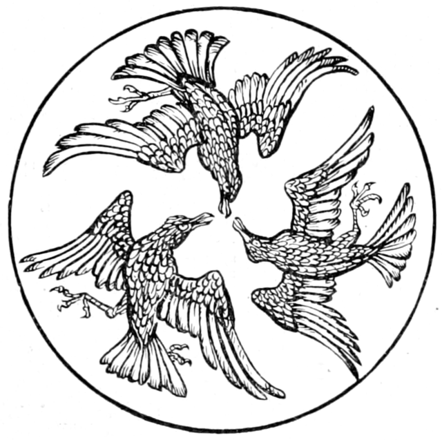

<!doctype html>
<html lang="fr">
  <head>
  <meta charset="utf-8">
  <meta http-equiv="X-UA-Compatible" content="IE=edge">
  <meta name="viewport" content="width=device-width, initial-scale=1">
  <meta name="author" content="Ronalds Vilcins - /">
  <title>Impression | La Fabrique de Poe</title>
  <meta name="description" content="Une édition collaborative">
<meta name="twitter:card" content="summary"/>
<meta name="twitter:title" content="Impression"/>
<meta name="twitter:description" content="Une édition collaborative"/>

<meta property="og:title" content="Impression" />
<meta property="og:description" content="Une édition collaborative" />
<meta property="og:type" content="website" />
<meta property="og:url" content="/print/" />

<meta itemprop="name" content="Impression">
<meta itemprop="description" content="Une édition collaborative">
  <link rel="canonical" href="../print/">
  <link rel="dns-prefetch" href="https://www.google-analytics.com">
  <link href="https://www.google-analytics.com" rel="preconnect" crossorigin>
  <link rel="alternate" type="application/atom+xml" title="" href="../atom.xml" />
  <link rel="alternate" type="application/json" title="" href="../feed.json" />
  <link rel="shortcut icon" type="image/png" href="data:image/png;base64,iVBORw0KGgoAAAANSUhEUgAAAAEAAAABCAQAAAC1HAwCAAAAC0lEQVR42mNk+A8AAQUBAScY42YAAAAASUVORK5CYII=">
  <style>@page{ marks:crop;} @media print {p { text-align: justify; text-indent: 5ch;} }</style>
  
  
  
  <style>@page{size:letter;margin-left:4cm;margin-right:4cm;margin-top:3cm;margin-bottom:3cm;bleed:6mm}@page:right{@top-center{letter-spacing:5px;content:string(titre);opacity:0.7}@bottom-center{content:counter(page);opacity:0.7}}@page:left{@top-center{letter-spacing:5px;content:string(author);opacity:0.7}@bottom-center{content:counter(page);opacity:0.7}}@page:first{@top-center{content:none}@bottom-center{content:none}}@media print{body{font-size:.875em;font-family:eb garamond,Garamond,times new roman,serif}p,li{line-height:1.75em}img{bottom:0;width:60%;height:auto}#titre{string-set:titre content(text)}#author{string-set:author content(text)}#marques{string-set:marques content(text)}h1{font-size:.75em;margin-bottom:.5em;opacity:.7;text-align:center}.couverture h1{font-size:4em;opacity:1}h2.subtitle{margin-top:1em;font-size:1.25em;text-align:center}h2{font-size:1.5em}.couverture h2{font-size:3em;text-align:center;opacity:.8}.chapitre h2,.chapitre h3{text-align:center}h3{font-size:2em;margin-top:.75em;text-align:center}.couverture h3{font-size:1.5em}.couverture h4{margin-top:5em;text-align:center;font-weight:400}.edition::before{border:0;display:block;width:152px;height:12px;margin:.5em auto 0;background:url(images/divider.svg)no-repeat 50% 0}.couverture h4::after{content:""}p{font-size:1.25em;widows:3;orphans:3;margin-top:0;word-spacing:.3px}section{page-break-after:always}blockquote,blockquote p{text-align:left}.toc ul li a::after{content:target-counter(attr(href url),page);float:right;color:#000;font-size:1em}.toc li{list-style:none}.toc ul{margin-left:0;padding-left:0}.toc li a{text-decoration:none;color:inherit}img{display:block;margin-left:auto;margin-right:auto}.couverture img{text-align:center;display:block;margin-left:auto;margin-right:auto;width:50%}.hash{display:none}.video{display:none}.titre-media{display:none}.titre-media-imp{text-indent:0}.titre-media-imp a,.titre-media-imp a:hover{color:inherit}.sans-couverture{margin-top:20em}audio{display:none}.audio{text-indent:0;display:block;font-style:italic}.footnote-return{display:none}sup.footnote-ref{font-size:.8em;line-height:0}.footnote-ref a{color:inherit;text-decoration:none}}</style>
  
  
  <style>:root{--color-background:whitesmoke;--color-pageBox:#666;--color-paper:white;--color-marginBox:transparent}@media screen{body{background-color:var(--color-background)}.pagedjs_pages{display:flex;width:calc(var(--pagedjs-width) * 2);flex:0;flex-wrap:wrap;margin:0 auto}.pagedjs_page{background-color:var(--color-paper);box-shadow:0 0 0 1px var(--color-pageBox);margin:0;flex-shrink:0;flex-grow:0;margin-top:10mm}.pagedjs_first_page{margin-left:var(--pagedjs-width)}.pagedjs_page:last-of-type{margin-bottom:10mm}.pagedjs_margin-top-left-corner-holder,.pagedjs_margin-top,.pagedjs_margin-top-left,.pagedjs_margin-top-center,.pagedjs_margin-top-right,.pagedjs_margin-top-right-corner-holder,.pagedjs_margin-bottom-left-corner-holder,.pagedjs_margin-bottom,.pagedjs_margin-bottom-left,.pagedjs_margin-bottom-center,.pagedjs_margin-bottom-right,.pagedjs_margin-bottom-right-corner-holder,.pagedjs_margin-right,.pagedjs_margin-right-top,.pagedjs_margin-right-middle,.pagedjs_margin-right-bottom,.pagedjs_margin-left,.pagedjs_margin-left-top,.pagedjs_margin-left-middle,.pagedjs_margin-left-bottom{box-shadow:0 0 0 1px inset var(--color-marginBox)}}</style>
  <script src="https://unpkg.com/pagedjs/dist/paged.polyfill.js"></script>

  

</head>

<body>
  <section class="main">
    <section class="couverture">
      <h2 id="author">Edgar Allan Poe</h2>
<h1 id="titre">La Fabrique de Poe</h1>


<h3>Édition partielle des Nouvelles histoires extraordinaires</h3>
<h4 class="edition">Fabrique</h4>

    </section>
    <section class="toc">
    <h2>Sommaire</h2>
    <ul class="posts-list">
        
        
        <li class="post-item">
            <a href="#note">
                <span class="post-title" id="Sur Edgar">Sur Edgar — Notes pour l&#39;édition</span>
            </a>
        </li>
        
        
        
        <li class="post-item">
            <a href="#nouvelle1">
                <span class="post-title" id="Le Démon de la perversité">Le Démon de la perversité — Nouvelle 1</span>
            </a>
        </li>
        
        
        
        <li class="post-item">
            <a href="#nouvelle2">
                <span class="post-title" id="Le chat noir">Le chat noir — Nouvelle 2</span>
            </a>
        </li>
        
        
        
        <li class="post-item">
            <a href="#nouvelle03">
                <span class="post-title" id="L’Homme des foules">L’Homme des foules — Nouvelle 3</span>
            </a>
        </li>
        
        
        
        <li class="post-item">
            <a href="#nouvelle5">
                <span class="post-title" id="Bérénice">Bérénice — Nouvelle 5</span>
            </a>
        </li>
        
        
        
        <li class="post-item">
            <a href="#nouvelle7">
                <span class="post-title" id="Le Roi Peste">Le Roi Peste — Nouvelle 7</span>
            </a>
        </li>
        
        
        
        <li class="post-item">
            <a href="#Nouvelle8">
                <span class="post-title" id="Le Diable dans le beffroi">Le Diable dans le beffroi — Nouvelle 8</span>
            </a>
        </li>
        
        
        
        <li class="post-item">
            <a href="#nouvelle11">
                <span class="post-title" id="L&#39;île de la fée">L&#39;île de la fée — Nouvelle 11</span>
            </a>
        </li>
        
        
        
        <li class="post-item">
            <a href="#about">
                <span class="post-title" id="À propos">À propos</span>
            </a>
        </li>
        
        
        
        
        
        
        <li class="post-item">
            <a href="#nouvelle10">
                <span class="post-title" id=""></span>
            </a>
        </li>
        
        
        
        <li class="post-item">
            <a href="#nouvelle12">
                <span class="post-title" id=""></span>
            </a>
        </li>
        
        
        
        <li class="post-item">
            <a href="#nouvelle4">
                <span class="post-title" id=""></span>
            </a>
        </li>
        
        
        
        <li class="post-item">
            <a href="#nouvelle6">
                <span class="post-title" id=""></span>
            </a>
        </li>
        
        
        
        <li class="post-item">
            <a href="#test">
                <span class="post-title" id=""></span>
            </a>
        </li>
        
        
      </ul>
</section>
    
    <section class="chapitre">
    <h2 class="titre-chapitre" id="note">Notes pour l&rsquo;édition</h2>
    <h3>Sur Edgar</h3>
    <h4 class="post-editor" style="text-align: center;">Margot Mellet</h4>
    <div class="contenu">
        <p>
</p>
<h2 id="i">I <a href="#i" class="hash">#</a></h2>
<p><em>Littérature de décadence !</em> &ndash; Paroles vides de sens que nous entendons souvent tomber, avec la sonorité d’un bâillement emphatique, de la bouche de ces sphinx sans énigme qui veillent devant les portes saintes de l’Esthétique classique. À chaque fois que l’irréfutable oracle retentit, on peut affirmer qu’il s’agit d’un ouvrage plus amusant que l’<a href="https://fr.wikisource.org/wiki/Iliade"><em>Iliade</em></a>. Il est évidemment question d’un poème ou d’un roman dont toutes les parties sont habilement disposées pour la surprise, dont le style est magnifiquement orné, où toutes les ressources du langage et de la prosodie sont utilisées par une main impeccable. Lorsque j’entends ronfler l’anathème, &ndash; qui, pour le dire en passant, tombe généralement sur quelque poète préféré, &ndash; je suis toujours saisi de l’envie de répondre : « Me prenez-vous pour un barbare comme vous, et me croyez-vous capable de me divertir aussi tristement que vous faites ? » Des comparaisons grotesques s’agitent alors dans mon cerveau ; il me semble que deux femmes me sont présentées : l’une, matrone rustique, répugnante de santé et de vertu, sans allure et sans regard, bref, <em>ne devant rien qu’à la simple nature</em> ; l’autre, une de ces beautés qui dominent et oppriment le souvenir, unissant à son charme profond et originel l’éloquence de la toilette, maîtresse de sa démarche, consciente et reine d’elle-même, &ndash; une voix parlant comme un instrument bien accordé, et des regards chargés de pensée et n’en laissant couler que ce qu’ils veulent. Mon choix ne saurait être douteux, et cependant il y a des sphinx pédagogiques qui me reprocheraient de manquer à l’honneur classique. &ndash; Mais, pour laisser de côté les paraboles, je crois qu’il m’est permis de demander à ces hommes sages s’ils comprennent bien toute la vanité, toute l’inutilité de leur sagesse. Le mot <em>littérature de décadence</em> implique qu’il y a une échelle de littératures, une vagissante, une puérile, une adolescente, etc. Ce terme, veux-je dire, suppose quelque chose de fatal et de providentiel, comme un décret inéluctable ; et il est tout à fait injuste de nous reprocher d’accomplir la loi mystérieuse. Tout ce que je puis comprendre dans la parole académique, c’est qu’il est honteux d’obéir à cette loi avec plaisir, et que nous sommes coupables de nous réjouir dans notre destinée. &ndash; Ce soleil qui, il y a quelques heures, écrasait toutes choses de sa lumière droite et blanche, va bientôt inonder l’horizon occidental de couleurs variées. Dans les jeux de ce soleil agonisant, certains esprits poétiques trouveront des délices nouvelles ; ils y découvriront des colonnades éblouissantes, des cascades de métal fondu, des paradis de feu, une splendeur triste, la volupté du regret, toutes les magies du rêve, tous les souvenirs de l’opium. Et le coucher du soleil leur apparaîtra en effet comme la merveilleuse allégorie d’une âme chargée de vie, qui descend derrière l’horizon avec une magnifique provision de pensées et de rêves.</p>
<p>Mais ce à quoi les professeurs jurés n’ont pas pensé, c’est que, dans le mouvement de la vie, telle complication, telle combinaison peut se présenter, tout à fait inattendue pour leur sagesse d’écoliers. Et alors leur langue insuffisante se trouve en défaut, comme dans le cas &ndash; phénomène qui se multipliera peut-être avec des variantes &ndash; où une nation commence par la décadence et débute par où les autres finissent.</p>
<p>Que parmi les immenses colonies du siècle présent des littératures nouvelles se fassent, il s’y produira très certainement des accidents spirituels d’une nature déroutante pour l’esprit de l’école. Jeune et vieille à la fois, l’Amérique bavarde et radote avec une volubilité étonnante. Qui pourrait compter ses poètes ? Ils sont innombrables. Ses <em>bas bleus</em> ? Ils encombrent les revues. Ses critiques ? Croyez qu’elle possède des pédants qui valent bien les nôtres pour rappeler sans cesse l’artiste à la beauté antique, pour questionner un poète ou un romancier sur la moralité de son but et la qualité de ses intentions. Il y a là-bas comme ici, mais plus encore qu’ici, des littérateurs qui ne savent pas l’orthographe ; une activité puérile, inutile ; des compilateurs à foison, des ressasseurs, des plagiaires de plagiats et des critiques de critiques. Dans ce bouillonnement de médiocrités, dans ce monde épris des perfectionnements matériels, &ndash; scandale d’un nouveau genre qui fait comprendre la grandeur des peuples fainéants, &ndash; dans cette société avide d’étonnements, amoureuse de la vie, mais surtout d’une vie pleine d’excitations, un homme a paru qui a été grand, non seulement par sa subtilité métaphysique, par la beauté sinistre ou ravissante de ses conceptions, par la rigueur de son analyse, mais grand aussi et non moins grand comme caricature. &ndash; Il faut que je m’explique avec quelque soin ; car récemment un critique imprudent se servait, pour dénigrer Edgar Poe et pour infirmer la sincérité de mon admiration, du mot <em>jongleur</em> que j’avais moi-même appliqué au noble poète presque comme un éloge.</p>
<p>Du sein d’un monde goulu, affamé de matérialités, Poe s’est élancé dans les rêves. Étouffé qu’il était par l’atmosphère américaine, il a écrit en tête d’<em>Eureka</em> : « J’offre ce livre à ceux qui ont mis leur foi dans les rêves comme dans les seules réalités ! » Il fut donc une admirable protestation ; il la fut et il la fit à sa manière, <em>in his own way</em><sup id="fnref:1"><a href="#fn:1" class="footnote-ref" role="doc-noteref">1</a></sup>. L’auteur qui, dans le <em>Colloque entre Monos et Una</em>, lâche à torrents son mépris et son dégoût sur la démocratie, le progrès et la <em>civilisation</em>, cet auteur est le même qui, pour enlever la crédulité, pour ravir la badauderie des siens, a le plus énergiquement posé la souveraineté humaine et le plus ingénieusement fabriqué les <em>canards</em><sup id="fnref:2"><a href="#fn:2" class="footnote-ref" role="doc-noteref">2</a></sup> les plus flatteurs pour l’orgueil de l’<a href="https://fr.wikipedia.org/wiki/Wikip%C3%A9dia:Pastiches/Un_homme"><em>homme moderne</em></a>. Pris sous ce jour, Poe m’apparaît comme un ilote qui veut faire rougir son maître. Enfin, pour affirmer ma pensée d’une manière encore plus nette, Poe fut toujours grand, non seulement dans ses conceptions nobles, mais encore comme farceur.</p>
<h2 id="ii">II <a href="#ii" class="hash">#</a></h2>
<p>Car il ne fut jamais dupe ! &ndash; Je ne crois pas que le Virginien qui a tranquillement écrit en plein débordement démocratique : « Le peuple n’a rien à faire avec les lois, si ce n’est de leur obéir, » ait jamais été une victime de la sagesse moderne ; &ndash; et : « Le nez d’une populace, c’est son imagination ; c’est par ce nez qu’on pourra toujours facilement la conduire ; » &ndash; et cent autres passages où la raillerie pleut, drue comme mitraille, mais cependant nonchalante et hautaine. &ndash; Les swedenborgiens le félicitent de sa Révélation magnétique, semblables à ces naïfs illuminés qui jadis surveillaient dans l’auteur du Diable amoureux un révélateur de leurs mystères ; ils le remercient pour les grandes vérités qu’il vient de proclamer, &ndash; car ils ont découvert (ô vérificateur de ce qui ne peut pas être vérifié !) que tout ce qu’il a énoncé est absolument vrai ; &ndash; bien que d’abord, avouent ces braves gens, ils aient eu le soupçon que ce pouvait bien être une simple fiction. Poe répond que, pour son compte, il n’en a jamais douté. &ndash; Faut-il encore citer ce petit passage qui me saute aux yeux, tout en feuilletant pour la centième fois ses amusants <em>Marginalia</em>, qui sont comme la chambre secrète de son esprit : « L’énorme multiplication des livres dans toutes les branches de connaissances est l’un des plus grands fléaux de cet âge ! car elle est un des plus sérieux obstacles à l’acquisition de toute connaissance positive. » Aristocrate de nature plus encore que de naissance, le Virginien, l’homme du Sud, le Byron égaré dans un mauvais monde, a toujours gardé son impassibilité philosophique, et, soit qu’il définisse le nez de la populace, soit qu’il raille les fabricateurs de religions, soit qu’il bafoue les bibliothèques, il reste ce que fut et ce que sera toujours le vrai poète, &ndash; une vérité habillée d’une manière bizarre, un paradoxe apparent, qui ne veut pas être coudoyé par la foule, et qui court à l’extrême orient quand le feu d’artifice se tire au couchant.</p>
<p>Mais voici plus important que tout : nous noterons que cet auteur, produit d’un siècle infatué de lui-même, enfant d’une nation plus infatuée d’elle-même qu’aucune autre, a vu clairement, a imperturbablement affirmé la méchanceté naturelle de l’homme. Il y a dans l’homme, dit-il, une force mystérieuse dont la philosophie moderne ne veut pas tenir compte ; et cependant, sans cette force innommée, sans ce penchant primordial, une foule d’actions humaines resteront inexpliquées, inexplicables. Ces actions n’ont d’attrait que parce que elles sont mauvaises, dangereuses ; elles possèdent l’attirance du gouffre. Cette force primitive, irrésistible, est la Perversité naturelle, qui fait que l’homme est sans cesse et à la fois homicide et suicide, assassin et bourreau ; &ndash; car, ajoute-t-il, avec une subtilité remarquablement satanique, l’impossibilité de trouver un motif raisonnable suffisant pour certaines actions mauvaises et périlleuses, pourrait nous conduire à les considérer comme le résultat des suggestions du Diable, si l’expérience et l’histoire ne nous enseignaient pas que Dieu en tire souvent l’établissement de l’ordre et le châtiment des coquins ; &ndash; <em>après s’être servi des mêmes coquins comme de complices !</em> tel est le mot qui se glisse, je l’avoue, dans mon esprit, comme un sous-entendu aussi perfide qu’inévitable. Mais je ne veux, pour le présent, tenir compte que de la grande vérité oubliée, &ndash; la perversité primordiale de l’homme, &ndash; et ce n’est pas sans une certaine satisfaction que je vois quelques épaves de l’antique sagesse nous revenir d’un pays d’où on ne les attendait pas. Il est agréable que quelques explosions de vieille vérité sautent ainsi au visage de tous ces complimenteurs de l’humanité, de tous ces dorloteurs et endormeurs qui répètent sur toutes les variations possibles de ton : « Je suis né bon, et vous aussi, et nous tous, nous sommes nés bons ! » oubliant, non ! feignant d’oublier, ces égalitaires à contresens, que nous sommes tous nés marqués pour le mal !</p>
<p>De quel mensonge pouvait-il être dupe, celui qui parfois &ndash; douloureuse nécessité des milieux &ndash; les ajustait si bien ? Quel mépris pour la philosophaillerie, dans ses bons jours, dans les jours où il était, pour ainsi dire, illuminé ! Ce poète, de qui plusieurs fictions semblent faites à plaisir pour confirmer la prétendue omnipotence de l’homme, a voulu quelquefois se purger lui-même. Le jour où il écrivait : « Toute certitude est dans les rêves », il refoulait son propre américanisme dans la région des choses inférieures ; d’autres fois, rentrant dans la vraie voie des poètes, obéissant sans doute à l’inéluctable vérité qui nous hante comme un démon, il poussait les ardents soupirs de l’ange tombé qui se souvient des Cieux ; il envoyait ses regrets vers l’âge d’or et l’Éden perdu ; il pleurait toute cette magnificence de la nature, se recroquevillant devant la chaude haleine des fourneaux ; enfin, il jetait ces admirables pages : Colloque entre Monos et Una, qui eussent charmé et troublé l’impeccable De Maistre.</p>
<p>C’est lui qui a dit, à propos du socialisme, à l’époque où celui-ci n’avait pas encore un nom, où ce nom du moins n’était pas tout à fait vulgarisé : « Le monde est infesté actuellement par une nouvelle secte de philosophes, qui ne se sont pas encore reconnus comme formant une secte, et qui conséquemment n’ont pas adopté de nom. Ce sont les croyants à toute vieillerie (comme qui dirait : prédicateurs en vieux). Le grand prêtre dans l’Est est Charles Fourier, &ndash; dans l’Ouest, Horace Greely ; et grands prêtres ils sont à bon escient. Le seul lien commun parmi la secte est la crédulité ; &ndash; appelons cela démence, et n’en parlons plus. Demandez à l’un d’eux pourquoi il croit ceci ou cela ; et, s’il est consciencieux (les ignorants le sont généralement), il vous fera une réponse analogue à celle que fit Talleyrand, quand on lui demanda pourquoi il croyait à la Bible. « J’y crois, » dit-il, « d’abord parce que je suis évêque d’Autun, et en second lieu parce que je n’y entends absolument rien. » Ce que ces philosophes-là appellent argument est une manière à eux de nier ce qui est et d’expliquer ce qui n’est pas. »</p>
<p>Le progrès, cette grande hérésie de la décrépitude, ne pouvait pas non plus lui échapper. Le lecteur verra, en différents passages, de quels termes il se servait pour la caractériser. On dirait vraiment, à voir l’ardeur qu’il y dépense, qu’il avait à s’en venger comme d’un embarras public, comme d’un fléau de la rue. Combien eût-il ri, de ce rire méprisant du poète qui ne grossit jamais la grappe des badauds, s’il était tombé, comme cela m’est arrivé récemment, sur cette phrase mirifique qui fait rêver aux bouffonnes et volontaires absurdités des paillasses, et que j’ai trouvée se pavanant perfidement dans un journal plus que grave : Le progrès incessant de la science a permis tout récemment de retrouver le secret perdu et si longtemps cherché de… (feu grégeois, trempe de cuivre, n’importe quoi disparu), dont les applications les plus réussies remontent à une époque barbare et très ancienne !!! &ndash; Voilà une phrase qui peut s’appeler une véritable trouvaille, une éclatante découverte, même dans un siècle de progrès incessant ; mais je crois que la momie Allamistakeo n’aurait pas manqué de demander, avec le ton doux et discret de la supériorité, si c’était aussi grâce au progrès incessant, &ndash; à la loi fatale, irrésistible, du progrès, &ndash; que ce fameux secret avait été perdu. &ndash; Aussi bien, pour laisser là le ton de la farce, en un sujet qui contient autant de larmes que de rire, n’est-ce pas une chose véritablement stupéfiante de voir une nation, plusieurs nations, toute l’humanité bientôt, dire à ses sages, à ses sorciers : « Je vous aimerai et je vous ferai grands, si vous me persuadez que nous progressons sans le vouloir, inévitablement, &ndash; en dormant ; débarrassez-nous de la responsabilité, voilez pour nous l’humiliation des comparaisons, sophistiquez l’histoire, et vous pourrez vous appeler les sages des sages » ? N’est-ce pas un sujet d’étonnement que cette idée si simple n’éclate pas dans tous les cerveaux : que le progrès (en tant que progrès il y ait) perfectionne la douleur à la proportion qu’il raffine la volupté, et que, si l’épiderme des peuples va se délicatisant, ils ne poursuivent évidemment qu’une Italiam fugientem, une conquête à chaque minute perdue, un progrès toujours négateur de lui-même ?</p>
<p>Mais ces illusions, intéressées d’ailleurs, tirent leur origine d’un fonds de perversité et de mensonge, &ndash; météores des marécages, &ndash; qui poussent au dédain les âmes amoureuses du feu éternel, comme Edgar Poe, et exaspèrent les intelligences obscures, comme Jean-Jacques, à qui une sensibilité blessée et prompte à la révolte tient lieu de philosophie. Que celui-ci eût raison contre l’animal dépravé, cela est incontestable ; mais l’animal dépravé a le droit de lui reprocher d’invoquer la simple nature. La nature ne fait que des monstres, et toute la question est de s’entendre sur le mot sauvages. Nul philosophe n’osera proposer pour modèles ces malheureuses hordes pourries, victimes des éléments, pâture des bêtes, aussi incapables de fabriquer des armes que de concevoir l’idée d’un pouvoir spirituel et suprême. Mais, si l’on veut comparer l’homme moderne, l’homme civilisé, avec l’homme sauvage, ou plutôt une nation dite civilisée avec une nation dite sauvage, c’est-à-dire privée de toutes les ingénieuses inventions qui dispensent l’individu d’héroïsme, qui ne voit que tout l’honneur est pour le sauvage ? Par sa nature, par nécessité même, il est encyclopédique, tandis que l’homme civilisé se trouve confiné dans les régions infiniment petites de la spécialité. L’homme civilisé invente la philosophie du progrès pour se consoler de son abdication et de sa déchéance ; cependant que l’homme sauvage, époux redouté et respecté, guerrier contraint à la bravoure personnelle, poète aux heures mélancoliques où le soleil déclinant invite à chanter le passé et les ancêtres, rase de plus près la lisière de l’idéal. Quelle lacune oserons-nous lui reprocher ? Il a le prêtre, il a le sorcier et le médecin. Que dis-je ? Il a le dandy, suprême incarnation de l’idée du beau transportée dans la vie matérielle, celui qui dicte la forme et règle les manières. Ses vêtements, ses parures, ses armes, son calumet, témoignent d’une faculté inventive qui nous a depuis longtemps désertés. Comparerons-nous nos yeux paresseux et nos oreilles assourdies à ces yeux qui percent la brume, à ces oreilles qui entendraient l’herbe qui pousse ? Et la sauvagesse, à l’âme simple et enfantine, animal obéissant et câlin, se donnant tout entier et sachant qu’il n’est que la moitié d’une destinée, la déclarerons-nous inférieure à la dame américaine dont M. Bellegarigue (rédacteur du Moniteur de l’épicerie !) a cru faire l’éloge en disant qu’elle était l’idéal de la femme entretenue ? Cette même femme, dont les mœurs trop positives ont inspiré à Edgar Poe, &ndash; lui si galant, si respectueux de la beauté, &ndash; les tristes lignes suivantes : « Ces immenses bourses, semblables au concombre géant, qui sont à la mode parmi nos belles, n’ont pas, comme on le croit, une origine parisienne ; elles sont parfaitement indigènes. Pourquoi une pareille mode à Paris, où une femme ne serre dans sa bourse que son argent ? Mais la bourse d’une Américaine ! Il faut que cette bourse soit assez vaste pour qu’elle y puisse enfermer tout son argent, &ndash; plus toute son âme ! » &ndash; Quant à la religion, je ne parlerai pas de Vitzilipoutzli aussi légèrement que l’a fait Alfred de Musset ; j’avoue sans honte que je préfère de beaucoup le culte de Teutatès à celui de Mammon et le prêtre qui offre au cruel extorqueur d’hosties humaines des victimes qui meurent honorablement, des victimes qui veulent mourir, me paraît un être tout à fait doux et humain, comparé au financier qui n’immole les populations qu’à son intérêt propre. De loin en loin, ces choses sont encore entrevues, et j’ai trouvé une fois dans un article de M. Barbey d’Aurevilly une exclamation de tristesse philosophique qui résume tout ce que je voudrais dire à ce sujet : « Peuples civilisés, qui jetez sans cesse la pierre aux sauvages, bientôt vous ne mériterez même plus d’être idolâtres ! »</p>
<p>Un pareil milieu &ndash; je l’ai déjà dit, je ne puis résister au désir de le répéter, &ndash; n’est guère fait pour les poètes. Ce qu’un esprit français, supposez le plus démocratique, entend par un État, ne trouverait pas de place dans un esprit américain. Pour toute intelligence du vieux monde, un État politique a un centre de mouvement qui est son cerveau et son soleil, des souvenirs anciens et glorieux, de longues annales poétiques et militaires, une aristocratie, à qui la pauvreté, fille des révolutions, ne peut qu’ajouter un lustre paradoxal ; mais cela ! cette cohue de vendeurs et d’acheteurs, ce sans nom, ce monstre sans tête, ce déporté derrière l’Océan, État ! &ndash; je le veux bien, si un vaste cabaret, où le consommateur afflue et traite d’affaires sur des tables souillées, au tintamarre des vilains propos, peut-être assimilé à un salon, à ce que nous appelions jadis un salon, république de l’esprit présidée par la beauté !</p>
<p>Il sera toujours difficile d’exercer, noblement et fructueusement à la fois, l’état d’homme de lettres, sans s’exposer à la diffamation, à la calomnie des impuissants, à l’envie des riches, &ndash; cette envie qui est leur châtiment ! &ndash; aux vengeances de la médiocrité bourgeoise. Mais ce qui est difficile dans une monarchie tempérée ou dans une république régulière, devient presque impraticable dans une espèce de capharnaüm, où chaque sergent de ville de l’opinion fait la police au profit de ses vices, &ndash; ou de ses vertus, c’est tout un ; &ndash; où un poète, un romancier d’un pays à esclaves, est un écrivain détestable aux yeux d’un critique abolitionniste ; où l’on ne sait quel est le plus grand scandale, &ndash; le débraillé du cynisme ou l’imperturbabilité de l’hypocrisie biblique. Brûler des nègres enchaînés, coupables d’avoir senti leur joue noire fourmiller du rouge de l’honneur, jouer du revolver dans un parterre de théâtre, établir la polygamie dans les paradis de l’Ouest, que les sauvages (ce terme a l’air d’une injustice) n’avaient pas encore souillés de ces honteuses utopies, afficher sur les murs, sans doute pour consacrer le principe de la liberté illimitée, la guérison des maladies de neuf mois, tels sont quelques-uns des traits saillants, quelques-unes des illustrations morales du noble pays de Franklin, l’inventeur de la morale de comptoir, le héros d’un siècle voué à la matière. Il est bon d’appeler sans cesse le regard sur ces merveilles de brutalités, en un temps où l’américanomanie est devenue presque une passion de bon ton, à ce point qu’un archevêque a pu nous promettre sans rire que la Providence nous appellerait bientôt à jouir de cet idéal transatlantique.</p>
<h2 id="iii">III <a href="#iii" class="hash">#</a></h2>
<p>Un semblable milieu social engendre nécessairement des erreurs littéraires correspondantes. C’est contre ces erreurs que Poe a réagi aussi souvent qu’il a pu, et de toute sa force. Nous ne devons donc pas nous étonner que les écrivains américains, tout en reconnaissant sa puissance singulière comme poète et comme conteur, aient toujours voulu infirmer sa valeur comme critique. Dans un pays où l’idée d’utilité, la plus hostile du monde à l’idée de beauté, prime et domine toute chose, le parfait critique sera le plus honorable, c’est-à-dire celui dont les tendances et les désirs se rapprocheront le plus des tendances et des désirs de son public, &ndash; celui qui, confondant les facultés et les genres de production, assignera à toutes un but unique, &ndash; celui qui cherchera dans un livre de poésie les moyens de perfectionner la conscience. Naturellement, il deviendra d’autant moins soucieux des beautés réelles, positives, de la poésie ; il sera d’autant moins choqué des imperfections et même des fautes dans l’exécution. Edgar Poe, au contraire, divisant le monde de l’esprit en intellect pur, goût et sens moral, appliquait la critique suivant que l’objet de son analyse appartenait à l’une de ces trois divisions. Il était avant tout sensible à la perfection du plan et à la correction de l’exécution ; démontant les œuvres littéraires comme des pièces mécaniques défectueuses (pour le but qu’elles voulaient atteindre), notant soigneusement les vices de fabrication ; et, quand il passait au détail de l’œuvre, à son expression plastique, au style en un mot, épluchant, sans omission, les fautes de prosodie, les erreurs grammaticales et toute cette masse de scories qui, chez les écrivains non artistes, souillent les meilleures intentions et déforment les conceptions les plus nobles.</p>
<p>Pour lui, l’imagination est la reine des facultés, mais par ce mot il entend quelque chose de plus grand que ce qui est entendu par le commun des lecteurs. L’imagination n’est pas la fantaisie ; elle n’est pas non plus la sensibilité, bien qu’il soit difficile de concevoir un homme imaginatif qui ne serait pas sensible. L’imagination est une faculté quasi divine qui perçoit tout d’abord, en dehors des méthodes philosophiques, les rapports intimes et secrets des choses, les correspondances et les analogies. Les honneurs et les fonctions qu’il confère à cette faculté lui donnent une valeur telle (du moins quand on a bien compris la pensée de l’auteur), qu’un savant sans imagination n’apparaît plus que comme un faux savant, ou tout au moins comme un savant incomplet.</p>
<p>Parmi les domaines littéraires où l’imagination peut obtenir les plus curieux résultats, peut récolter les trésors, non pas les plus riches, les plus précieux (ceux-là appartiennent à la poésie), mais les plus nombreux et les plus variés, il en est un que Poe affectionne particulièrement, c’est la Nouvelle. Elle a sur le roman à vastes proportions cet immense avantage que sa brièveté ajoute à l’intensité de l’effet. Cette lecture, qui peut être accomplie tout d’une haleine, laisse dans l’esprit un souvenir bien plus puissant qu’une lecture brisée, interrompue souvent par le tracas des affaires et le soin des intérêts mondains. L’unité d’impression, la totalité d’effet est un avantage immense qui peut donner à ce genre de composition une supériorité tout à fait particulière, à ce point qu’une nouvelle trop courte (c’est sans doute un défaut) vaut encore mieux qu’une nouvelle trop longue. L’artiste, s’il est habile, n’accommodera pas ses pensées aux incidents ; mais, ayant conçu délibérément, à loisir, un effet à produire, inventera les incidents, combinera les événements les plus propres à amener l’effet voulu. Si la première phrase n’est pas écrite en vue de préparer cette impression finale, l’œuvre est manquée dès le début. Dans la composition tout entière, il ne doit pas se glisser un seul mot qui ne soit une intention, qui ne tende, directement ou indirectement, à parfaire le dessein prémédité.</p>
<p>Il est un point par lequel la nouvelle a une supériorité, même sur le poème. Le rythme est nécessaire au développement de l’idée de beauté, qui est le but le plus grand et le plus noble du poème. Or, les artifices du rythme sont un obstacle insurmontable à ce développement minutieux de pensées et d’expressions qui a pour objet la vérité. Car la vérité peut être souvent le but de la nouvelle, et le raisonnement, le meilleur outil pour la construction d’une nouvelle parfaite. C’est pourquoi ce genre de composition, qui n’est pas situé à une aussi grande élévation que la poésie pure, peut fournir des produits plus variés et plus facilement appréciables pour le commun des lecteurs. De plus, l’auteur d’une nouvelle a à sa disposition une multitude de tons, de nuances de langage, le ton raisonneur, le sarcastique, l’humoristique, que répudie la poésie, et qui sont comme des dissonances, des outrages à l’idée de beauté pure. Et c’est aussi ce qui fait que l’auteur qui poursuit dans une nouvelle un simple but de beauté, ne travaille qu’à son grand désavantage, privé qu’il est de l’instrument le plus utile, le rythme. Je sais que, dans toutes les littératures, des efforts ont été faits, souvent heureux, pour créer ces contes purement poétiques ; Edgar Poe lui-même en a fait de très beaux. Mais ce sont des luttes et des efforts qui ne servent qu’à démontrer la force des vrais moyens adaptés aux buts correspondants, et je ne serais pas éloigné de croire que, chez quelques auteurs, les plus grands qu’on puisse choisir, ces tentations héroïques vinssent d’un désespoir.</p>
<h2 id="iv">IV <a href="#iv" class="hash">#</a></h2>
<p>« Genus irritabile vatum ! Que les poètes (nous servant du mot dans son acception la plus large et comme comprenant tous les artistes) soient une race irritable, cela est bien entendu ; mais le pourquoi ne me semble pas aussi généralement compris. Un artiste n’est un artiste que grâce à son sens exquis du beau, &ndash; sens qui lui procure des jouissances enivrantes, mais qui en même temps implique, enferme un sens également exquis de toute difformité et de toute disproportion. Ainsi un tort, une injustice faite à un poète qui est vraiment un poète, l’exaspère à un degré qui apparaît, à un jugement ordinaire, en complète disproportion avec l’injustice commise. Les poètes voient l’injustice, jamais là où elle n’existe pas, mais fort souvent là où des yeux non poétiques n’en voient pas du tout. Ainsi la fameuse irritabilité poétique n’a pas de rapport avec le tempérament, compris dans le sens vulgaire, mais avec une clairvoyance plus qu’ordinaire relative au faux et à l’injuste. Cette clairvoyance n’est pas autre chose qu’un corollaire de la vive perception du vrai, de la justice, de la proportion, en un mot du beau. Mais il y a une chose bien claire, c’est que l’homme qui n’est pas (au jugement du commun) irritabilis, n’est pas poète du tout. »</p>
<p>Ainsi parle le poète lui-même, préparant une excellente et irréfutable apologie pour tous ceux de sa race. Cette sensibilité, Poe la portait dans les affaires littéraires, et l’extrême importance qu’il attachait aux choses de la poésie l’induisait souvent en un ton où, au jugement des faibles, la supériorité se faisait trop sentir. J’ai déjà remarqué, je crois, que plusieurs des préjugés qu’il avait à combattre, des idées fausses, des jugements vulgaires qui circulaient autour de lui, ont depuis longtemps infecté la presse française. Il ne sera donc pas inutile de rendre compte sommairement de quelques-unes de ses plus importantes opinions relatives à la composition poétique. Le parallélisme de l’erreur en rendra l’application tout à fait facile.</p>
<p>Mais, avant toute chose, je dois dire que la part étant faite au poète naturel, à l’innéité, Poe en faisait une à la science, au travail et à l’analyse, qui paraîtra exorbitante aux orgueilleux non érudits. Non seulement il a dépensé des efforts considérables pour soumettre à sa volonté le démon fugitif des minutes heureuses, pour rappeler à son gré ces sensations exquises, ces appétitions spirituelles, ces états de santé poétique, si rares et si précieux qu’on pourrait vraiment les considérer comme des grâces extérieures à l’homme et comme des visitations ; mais aussi il a soumis l’inspiration à la méthode, à l’analyse la plus sévère. Le choix des moyens ! il y revient sans cesse, il insiste avec une éloquence savante sur l’appropriation du moyen à l’effet, sur l’usage de la rime, sur le perfectionnement du refrain, sur l’adaptation du rythme au sentiment. Il affirmait que celui qui ne sait pas saisir l’intangible n’est pas poète ; que celui-là seul est poète qui est le maître de sa mémoire, le souverain des mots, le registre de ses propres sentiments toujours prêt à se laisser feuilleter. Tout pour le dénouement ! répète-t-il souvent. Un sonnet lui-même a besoin d’un plan, et la construction, l’armature, pour ainsi dire, est la plus importante garantie de la vie mystérieuse des œuvres de l’esprit.</p>
<p>Je recours naturellement à l’article intitulé : the Poetic Principle, et j’y trouve, dès le commencement, une vigoureuse protestation contre ce qu’on pourrait appeler, en matière de poésie, l’hérésie de la longueur ou de la dimension, &ndash; la valeur absurde attribuée aux gros poèmes. « Un long poème n’existe pas ; ce qu’on entend par un long poème est une parfaite contradiction de termes. » En effet, un poème ne mérite son titre qu’autant qu’il excite, qu’il enlève l’âme, et la valeur positive d’un poème est en raison de cette excitation, de cet enlèvement de l’âme. Mais, par nécessité psychologique, toutes les excitations sont fugitives et transitoires. Cet état singulier, dans lequel l’âme du lecteur a été, pour ainsi dire, tirée de force, ne durera certainement pas autant que la lecture de tel poème qui dépasse la ténacité d’enthousiasme dont la nature humaine est capable.</p>
<p>Voilà évidemment le poème épique condamné. Car un ouvrage de cette dimension ne peut être considéré comme poétique qu’en tant qu’on sacrifie la condition vitale de toute œuvre d’art, l’Unité ; &ndash; je ne veux pas parler de l’unité dans la conception, mais de l’unité dans l’impression, de la totalité de l’effet, comme je l’ai déjà dit quand j’ai eu à comparer le roman avec la nouvelle. Le poème épique nous apparaît donc, esthétiquement parlant, comme un paradoxe. Il est possible que les anciens âges aient produit des séries de poèmes lyriques, reliées postérieurement par les compilateurs en poèmes épiques ; mais toute intention épique résulte évidemment d’un sens imparfait de l’art. Le temps de ces anomalies artistiques est passé, et il est même fort douteux qu’un long poème ait jamais pu être vraiment populaire dans toute la force du terme.</p>
<p>Il faut ajouter qu’un poème trop court, celui qui ne fournit pas un pabulum suffisant à l’excitation créée, celui qui n’est pas égal à l’appétit naturel du lecteur, est aussi très défectueux. Quelque brillant et intense que soit l’effet, il n’est pas durable ; la mémoire ne le retient pas ; c’est comme un cachet qui, posé trop légèrement et trop à la hâte, n’a pas eu le temps d’imposer son image à la cire.</p>
<p>Mais il est une autre hérésie, qui, grâce à l’hypocrisie, à la lourdeur et à la bassesse des esprits, est bien plus redoutable et a des chances de durée plus grandes, &ndash; une erreur qui a la vie plus dure, &ndash; je veux parler de l’hérésie de l’enseignement, laquelle comprend comme corollaires inévitables l’hérésie de la passion, de la vérité et de la morale. Une foule de gens se figurent que le but de la poésie est un enseignement quelconque, qu’elle doit tantôt fortifier la conscience, tantôt perfectionner les mœurs, tantôt enfin démontrer quoi que ce soit d’utile. Edgar Poe prétend que les Américains ont spécialement patronné cette idée hétérodoxe ; hélas ! il n’est pas besoin d’aller jusqu’à Boston pour rencontrer l’hérésie en question. Ici même, elle nous assiège, et tous les jours elle bat en brèche la véritable poésie. La poésie, pour peu qu’on veuille descendre en soi-même, interroger son âme, rappeler ses souvenirs d’enthousiasme, n’a pas d’autre but qu’elle-même ; elle ne peut pas en avoir d’autre, et aucun poème ne sera si grand, si noble, si véritablement digne du nom de poème, que celui qui aura été écrit uniquement pour le plaisir d’écrire un poème.</p>
<p>Je ne veux pas dire que la poésie n’ennoblisse pas les mœurs, &ndash; qu’on me comprenne bien, &ndash; que son résultat final ne soit pas d’élever l’homme au-dessus du niveau des intérêts vulgaires ; ce serait évidemment une absurdité. Je dis que, si le poète a poursuivi un but moral, il a diminué sa force poétique ; et il n’est pas imprudent de parier que son œuvre sera mauvaise. La poésie ne peut pas, sous peine de mort ou de défaillance, s’assimiler à la science ou à la morale ; elle n’a pas la Vérité pour objet, elle n’a qu’elle-même. Les modes de démonstration de vérité sont autres et sont ailleurs. La vérité n’a rien à faire avec les chansons. Tout ce qui fait le charme, la grâce, l’irrésistible d’une chanson, enlèverait à la vérité son autorité et son pouvoir. Froide, calme, impassible, l’humeur démonstrative repousse les diamants et les fleurs de la Muse ; elle est donc absolument l’inverse de l’humeur poétique.</p>
<p>L’intellect pur vise à la vérité, le goût nous montre la beauté, et le sens moral nous enseigne le devoir. Il est vrai que le sens du milieu a d’intimes connexions avec les deux extrêmes, et il n’est séparé du sens moral que par une si légère différence, qu’Aristote n’a pas hésité à ranger parmi les vertus quelques-unes de ses délicates opérations. Aussi, ce qui exaspère surtout l’homme de goût dans le spectacle du vice, c’est sa difformité, sa disproportion. Le vice porte atteinte au juste et au vrai, révolte l’intellect et la conscience ; mais, comme outrage à l’harmonie, comme dissonance, il blessera plus particulièrement certains esprits poétiques ; et je ne crois pas qu’il soit scandalisant de considérer toute infraction à la morale, au beau moral, comme une espèce de faute contre le rythme et la prosodie universels.</p>
<p>C’est cet admirable, cet immortel instinct du beau qui nous fait considérer la terre et ses spectacles comme un aperçu, comme une correspondance du Ciel. La soif insatiable de tout ce qui est au delà, et que révèle la vie, est la preuve la plus vivante de notre immortalité. C’est à la fois par la poésie et à travers la poésie, par et à travers la musique, que l’âme entrevoit les splendeurs situées derrière le tombeau ; et, quand un poème exquis amène les larmes au bord des yeux, ces larmes ne sont pas la preuve d’un excès de jouissance, elles sont bien plutôt le témoignage d’une mélancolie irritée, d’une postulation des nerfs, d’une nature exilée dans l’imparfait et qui voudrait s’emparer immédiatement, sur cette terre même, d’un paradis révélé.</p>
<p>Ainsi, le principe de la poésie est strictement et simplement l’aspiration humaine vers une beauté supérieure, et la manifestation de ce principe est dans un enthousiasme, une excitation de l’âme, &ndash; enthousiasme tout à fait indépendant de la passion qui est l’ivresse du cœur, et de la vérité qui est la pâture de la raison. Car la passion est naturelle, trop naturelle pour ne pas introduire un ton blessant, discordant, dans le domaine de la beauté pure, trop familière et trop violente pour ne pas scandaliser les purs désirs, les gracieuses mélancolies et les nobles désespoirs qui habitent les régions surnaturelles de la poésie.</p>
<p>Cette extraordinaire élévation, cette exquise délicatesse, cet accent d’immortalité qu’Edgar Poe exige de la Muse, loin de le rendre moins attentif aux pratiques d’exécution, l’ont poussé à aiguiser sans cesse son génie de praticien. Bien des gens, de ceux surtout qui ont lu le singulier poème intitulé le Corbeau, seraient scandalisés si j’analysais l’article où notre poète a ingénument en apparence, mais avec une légère impertinence que je ne puis blâmer, minutieusement expliqué le mode de construction qu’il a employé, l’adaptation du rythme, le choix d’un refrain, &ndash; le plus bref possible et le plus susceptible d’applications variées, et en même temps le plus représentatif de mélancolie et de désespoir, orné d’une rime la plus sonore de toutes (never more, jamais plus), &ndash; le choix d’un oiseau capable d’imiter la voix humaine, mais d’un oiseau &ndash; le corbeau &ndash; marqué dans l’imagination populaire d’un caractère funeste et fatal, &ndash; le choix du ton le plus poétique de tous, le ton mélancolique, &ndash; du sentiment le plus poétique, l’amour pour une morte, etc. « Et je ne placerai pas, dit-il, le héros de mon poème dans un milieu pauvre, parce que la pauvreté est triviale et contraire à l’idée de beauté. Sa mélancolie aura pour gîte une chambre magnifiquement et poétiquement meublée. » Le lecteur surprendra dans plusieurs des nouvelles de Poe des symptômes curieux de ce goût immodéré pour les belles formes, surtout pour les belles formes singulières, pour les milieux ornés et les somptuosités orientales.</p>
<p>J’ai dit que cet article me paraissait entaché d’une légère impertinence. Les partisans de l’inspiration quand même ne manqueraient pas d’y trouver un blasphème et une profanation ; mais je crois que c’est pour eux que l’article a été spécialement écrit. Autant certains écrivains affectent l’abandon, visant au chef-d’œuvre les yeux fermés, pleins de confiance dans le désordre, et attendant que les caractères jetés au plafond retombent en poème sur le parquet, autant Edgar Poe &ndash; l’un des hommes les plus inspirés que je connaisse &ndash; a mis d’affectation à cacher la spontanéité, à simuler le sang-froid et la délibération. « Je crois pouvoir me vanter &ndash; dit-il avec un orgueil amusant et que je ne trouve pas de mauvais goût &ndash; qu’aucun point de ma composition n’a été abandonné au hasard, et que l’œuvre entière a marché pas à pas vers son but avec la précision et la logique rigoureuse d’un problème mathématique. » Il n’y a, dis-je, que les amateurs de hasard, les fatalistes de l’inspiration et les fanatiques du vers blanc qui puissent trouver bizarres ces minuties. Il n’y a pas de minuties en matière d’art.</p>
<p>À propos des vers blancs, j’ajouterai que Poe attachait une importance extrême à la rime, et que, dans l’analyse qu’il a faite du plaisir mathématique et musical que l’esprit tire de la rime, il a apporté autant de soin, autant de subtilité que dans tous les sujets se rapportant au métier poétique. De même qu’il avait démontré que le refrain est susceptible d’applications infiniment variées, il a aussi cherché à rajeunir, à redoubler le plaisir de la rime en y ajoutant cet élément inattendu, l’étrangeté, qui est comme le condiment indispensable de toute beauté. Il fait surtout un usage heureux des répétitions du même vers ou de plusieurs vers, retours obstinés de phrases qui simulent les obsessions de la mélancolie ou de l’idée fixe, &ndash; du refrain pur et simple, mais amené en situation de plusieurs manières différentes, &ndash; du refrain-variante qui joue l’indolence et la distraction, &ndash; des rimes redoublées et triplées, et aussi d’un genre de rime qui introduit dans la poésie moderne, mais avec plus de précision et d’intention, les surprises du vers léonin.</p>
<p>Il est évident que la valeur de tous ces moyens ne peut être vérifiée que par l’application ; et une traduction de poésies, aussi voulues, aussi concentrées, peut être un rêve caressant, mais ne peut être qu’un rêve. Poe a fait peu de poésies ; il a quelquefois exprimé le regret de ne pouvoir se livrer, non pas plus souvent, mais exclusivement, à ce genre de travail qu’il considérait comme le plus noble. Mais sa poésie est toujours d’un puissant effet. Ce n’est pas l’effusion ardente de Byron, ce n’est pas la mélancolie molle, harmonieuse, distinguée de Tennyson, pour lequel il avait d’ailleurs, soit dit en passant, une admiration quasi fraternelle. C’est quelque chose de profond et de miroitant comme le rêve, de mystérieux et de parfait comme le cristal. Je n’ai pas besoin, je présume, d’ajouter que les critiques américains ont souvent dénigré cette poésie ; tout récemment, je trouvais dans un dictionnaire de biographies américaines un article où elle était décrétée d’étrangeté, où on avouait qu’il était à craindre que cette muse à la toilette savante ne fît école dans le glorieux pays de la morale utile, et où enfin on regrettait que Poe n’eût pas appliqué ses talents à l’expression de vérités morales au lieu de les dépenser à la recherche d’un idéal bizarre et de prodiguer dans ses vers une volupté mystérieuse, il est vrai, mais sensuelle.</p>
<p>Nous connaissons cette loyale escrime. Les reproches que les mauvais critiques font aux bons poètes sont les mêmes dans tous les pays. En lisant cet article, il me semblait lire la traduction d’un de ces nombreux réquisitoires dressés par les critiques parisiens contre ceux de nos poètes qui sont le plus amoureux de perfection. Nos préférés sont faciles à deviner, et toute âme éprise de poésie pure me comprendra quand je dirai que, parmi notre race antipoétique, Victor Hugo serait moins admiré s’il était parfait, et qu’il n’a pu se faire pardonner son génie lyrique qu’en introduisant de force et brutalement dans sa poésie ce qu’Edgar Poe considérait comme l’hérésie moderne capitale, &ndash; l’enseignement.</p>
<p><a href="https://fr.wikipedia.org/wiki/Charles_Baudelaire">C. B.</a></p>
<div class="footnotes" role="doc-endnotes">
<hr>
<ol>
<li id="fn:1">
<p>Charles a oublié de traduire ici ou fait un petit trait de frime.&#160;<a href="#fnref:1" class="footnote-backref" role="doc-backlink">&#x21a9;&#xfe0e;</a></p>
</li>
<li id="fn:2">
<p>Note de l&rsquo;éditrice : il y a beaucoup trop d&rsquo;italiques dans cette note.&#160;<a href="#fnref:2" class="footnote-backref" role="doc-backlink">&#x21a9;&#xfe0e;</a></p>
</li>
</ol>
</div>

    </div>
    </section>
    
    <section class="chapitre">
    <h2 class="titre-chapitre" id="nouvelle1">Nouvelle 1</h2>
    <h3>Le Démon de la perversité</h3>
    <h4 class="post-editor" style="text-align: center;"></h4>
    <div class="contenu">
        <p>Le Démon de la perversité</p>
<pre><code>				Edgar Allan Poe
</code></pre>
<p>A. Quantin, Paris, 1884</p>
<p>Exporté de Wikisource le 21 février 2023</p>
<p>le</p>
<p>DÉMON DE LA PERVERSITÉ</p>
<p>Dans l’examen des facultés et des penchants, — des mobiles primordiaux de l’âme humaine, — les phrénologistes ont oublié de faire une part à une tendance qui, bien qu’existant visiblement comme sentiment primitif, radical, irréductible, a été également omise par tous les moralistes qui les ont précédés. Dans la parfaite infatuation de notre raison, nous l’avons tous omise. Nous avons permis que son existence échappât à notre vue, uniquement par manque de croyance, — de foi, — que ce soit la foi dans la révélation ou la foi dans la cabale. L’idée ne nous en est jamais venue, simplement à cause de sa qualité surérogatoire. Nous n’avons pas senti le besoin de constater cette impulsion, — cette tendance. Nous ne pouvions pas en concevoir la nécessité. Nous ne pouvions pas saisir la notion de ce primum mobile, et, quand même elle se serait introduite de force en nous, nous n’aurions jamais pu comprendre quel rôle il jouait dans l’économie des choses humaines, temporelles ou éternelles. Il est impossible de nier que la phrénologie et une bonne partie des sciences métaphysiques ont été brassées à priori. L’homme de la métaphysique ou de la logique, bien plutôt que l’homme de l’intelligence et de l’observation, prétend concevoir les desseins de Dieu, — lui dicter des plans. Ayant ainsi approfondi à sa pleine satisfaction les intentions de Jéhovah, d’après ces dites intentions, il a bâti ses innombrables et capricieux systèmes. En matière de phrénologie, par exemple, nous avons d’abord établi, assez naturellement d’ailleurs, qu’il était dans les desseins de la Divinité que l’homme mangeât. Puis nous avons assigné à l’homme un organe d’alimentivité, et cet organe est le fouet avec lequel Dieu contraint l’homme à manger, bon gré, mal gré. En second lieu, ayant décidé que c’était la volonté de Dieu que l’homme continuât son espèce, nous avons découvert tout de suite un organe d’amativité. Et ainsi ceux de la combativité, de l’idéalité, de la causalité, de la constructivité, — bref, tout organe représentant un penchant, un sentiment moral ou une faculté de la pure intelligence. Et, dans cet emménagement des principes de l’action humaine, des spurzheimistes, à tort ou à raison, en partie ou en totalité, n’ont fait que suivre, en principe, les traces de leurs devanciers ; déduisant et établissant chaque chose d’après la destinée préconçue de l’homme et prenant pour base les intentions de son Créateur.</p>
<p>Il eût été plus sage, il eût été plus sûr de baser notre classification (puisqu’il nous faut absolument classifier) sur les actes que l’homme accomplit habituellement et ceux qu’il accomplit occasionnellement, toujours occasionnellement, plutôt que sur l’hypothèse que c’est la Divinité elle-même qui les lui fait accomplir. Si nous ne pouvons pas comprendre Dieu dans ses œuvres visibles, comment donc le comprendrions-nous dans ses inconcevables pensées, qui appellent ces œuvres à la vie ? Si nous ne pouvons le concevoir dans ses créatures objectives, comment le concevrons-nous dans ses modes inconditionnels et dans ses phases de création ?</p>
<p>L’induction à posteriori aurait conduit la phrénologie à admettre comme principe primitif et inné de l’action humaine un je ne sais quoi paradoxal, que nous nommerons perversité, faute d’un terme plus caractéristique. Dans le sens que j’y attache, c’est, en réalité, un mobile sans motif, un motif non motivé. Sous son influence, nous agissons sans but intelligible ; ou, si cela apparaît comme une contradiction dans les termes, nous pouvons modifier la proposition jusqu’à dire que, sous son influence, nous agissons par la raison que nous ne le devrions pas. En théorie, il ne peut pas y avoir de raison plus déraisonnable ; mais, en fait, il n’y en a pas de plus forte. Pour certains esprits, dans de certaines conditions, elle devient absolument irrésistible. Ma vie n’est pas une chose plus certaine pour moi que cette proposition : la certitude du péché ou de l’erreur inclus dans un acte quelconque est souvent l’unique force invincible qui nous pousse, et seule nous pousse à son accomplissement. Et cette tendance accablante à faire le mal pour l’amour du mal n’admettra aucune analyse, aucune résolution en éléments ultérieurs. C’est un mouvement radical, primitif, — élémentaire. On dira, je m’y attends, que, si nous persistons dans certains actes parce que nous sentons que nous ne devrions pas y persister, notre conduite n’est qu’une modification de celle qui dérive ordinairement de la combativité phrénologique. Mais un simple coup d’œil suffira pour découvrir la fausseté de cette idée. La combativité phrénologique a pour cause d’existence la nécessité de la défense personnelle. Elle est notre sauvegarde contre l’injustice. Son principe regarde notre bien-être ; et ainsi, en même temps qu’elle se développe, nous sentons s’exalter en nous le désir du bien-être. Il suivrait de là que le désir du bien-être devrait être simultanément excité avec tout principe qui ne serait qu’une modification de la combativité ; mais, dans le cas de ce je ne sais quoi que je définis perversité, non seulement le désir du bien-être n’est pas éveillé, mais encore apparaît un sentiment singulièrement contradictoire.</p>
<p>Tout homme, en faisant appel à son propre cœur, trouvera, après tout, la meilleure réponse au sophisme dont il s’agit. Quiconque consultera loyalement et interrogera soigneusement son âme, n’osera pas nier l’absolue radicalité du penchant en question. Il n’est pas moins caractérisé qu’incompréhensible. Il n’existe pas d’homme, par exemple, qui à un certain moment n’ait été dévoré d’un ardent désir de torturer son auditeur par des circonlocutions. Celui qui parle sait bien qu’il déplaît ; il a la meilleure intention de plaire ; il est habituellement bref, précis et clair ; le langage le plus laconique et le plus lumineux s’agite et se débat sur sa langue ; ce n’est qu’avec peine qu’il se contraint lui-même à lui refuser le passage ; il redoute et conjure la mauvaise humeur de celui auquel il s’adresse. Cependant, cette pensée le frappe, que par certaines incises et parenthèses il pourrait engendrer cette colère. Cette simple pensée suffit. Le mouvement devient une velléité, la velléité se grossit en désir, le désir se change en un besoin irrésistible, et le besoin se satisfait, — au profond regret et à la mortification du parleur, et au mépris de toutes les conséquences.</p>
<p>Nous avons devant nous une tâche qu’il nous faut accomplir rapidement. Nous savons que tarder, c’est notre ruine. La plus importante crise de notre vie réclame avec la voix impérative d’une trompette l’action et l’énergie immédiates. Nous brûlons, nous sommes consumés de l’impatience de nous mettre à l’ouvrage ; l’avant-goût d’un glorieux résultat met toute notre âme en feu. Il faut, il faut que cette besogne soit attaquée aujourd’hui, — et cependant nous la renvoyons à demain ; — et pourquoi ? Il n’y a pas d’explication, si ce n’est que nous sentons que cela est pervers ; — servons-nous du mot sans comprendre le principe. Demain arrive, et en même temps une plus impatiente anxiété de faire notre devoir ; mais avec ce surcroît d’anxiété arrive aussi un désir ardent, anonyme de différer encore, — désir positivement terrible, parce que sa nature est impénétrable. Plus le temps fuit, plus ce désir gagne de force. Il n’y a plus qu’une heure pour l’action, cette heure est à nous. Nous tremblons par la violence du conflit qui s’agite en nous, — de la bataille entre le positif et l’indéfini, entre la substance et l’ombre. Mais, si la lutte en est venue à ce point, c’est l’ombre qui l’emporte, — nous nous débattons en vain. L’horloge sonne, et c’est le glas de notre bonheur. C’est en même temps pour l’ombre qui nous a si longtemps terrorisés le chant réveille-matin, la diane du coq victorieuse des fantômes. Elle s’envole, — elle disparaît, — nous sommes libres. La vieille énergie revient. Nous travaillerons maintenant. Hélas ! il est trop tard.</p>
<p>Nous sommes sur le bord d’un précipice. Nous regardons dans l’abîme, — nous éprouvons du malaise et du vertige. Notre premier mouvement est de reculer devant le danger. Inexplicablement nous restons. Peu à peu notre malaise, notre vertige, notre horreur, se confondent dans un sentiment nuageux et indéfinissable. Graduellement, insensiblement, ce nuage prend une forme, comme la vapeur de la bouteille d’où s’élevait le génie des Mille et une Nuits. Mais de notre nuage, sur le bord du précipice, s’élève, de plus en plus palpable, une forme mille fois plus terrible qu’aucun génie, qu’aucun démon des fables ; et cependant ce n’est qu’une pensée, mais une pensée effroyable, une pensée qui glace la moelle même de nos os, et les pénètre des féroces délices de son horreur. C’est simplement cette idée : « Quelles seraient nos sensations durant le parcours d’une chute faite d’une telle hauteur ? » Et cette chute, — cet anéantissement foudroyant, — par la simple raison qu’ils impliquent la plus affreuse, la plus odieuse de toutes les plus affreuses et de toutes les plus odieuses images de mort et de souffrance qui se soient jamais présentées à notre imagination, — par cette simple raison, nous les désirons alors plus ardemment. Et parce que notre jugement nous éloigne violemment du bord, à cause de cela même, nous nous en rapprochons plus impétueusement. Il n’est pas dans la nature de passion plus diaboliquement impatiente que celle d’un homme qui, frissonnant sur l’arête d’un précipice, rêve de s’y jeter. Se permettre, essayer de penser un instant seulement, c’est être inévitablement perdu ; car la réflexion nous commande de nous en abstenir, et c’est à cause de cela même, dis-je, que nous ne le pouvons pas. S’il n’y a pas là un bras ami pour nous arrêter, ou si nous sommes incapables d’un soudain effort pour nous rejeter loin de l’abîme, nous nous élançons, nous sommes anéantis.</p>
<p>Examinons ces actions et d’autres analogues, nous trouverons qu’elles résultent uniquement de l’esprit de perversité. Nous les perpétrons simplement à cause que nous sentons que nous ne le devrions pas. En deçà ou au delà, il n’y a pas de principe intelligible ; et nous pourrions, en vérité, considérer cette perversité comme une instigation directe de l’Archidémon, s’il n’était pas reconnu que parfois elle sert à l’accomplissement du bien.</p>
<p>Si je vous en ai dit aussi long, c’était pour répondre en quelque sorte à votre question, — pour vous expliquer pourquoi je suis ici, — pour avoir à vous montrer un semblant de cause quelconque qui motive ces fers que je porte et cette cellule de condamné que j’habite. Si je n’avais pas été si prolixe, ou vous ne m’auriez pas du tout compris, ou, comme la foule, vous m’auriez cru fou. Maintenant vous percevrez facilement que je suis une des victimes innombrables du démon de la perversité.</p>
<p>Il est impossible qu’une action ait jamais été manigancée avec une plus parfaite délibération. Pendant des semaines, pendant des mois, je méditai sur les moyens d’assassinat. Je rejetai mille plans, parce que l’accomplissement de chacun impliquait une chance de révélation. À la longue, lisant un jour quelques mémoires français, je trouvai l’histoire d’une maladie presque mortelle qui arriva à Mme Pilau, par le fait d’une chandelle accidentellement empoisonnée. L’idée frappa soudainement mon imagination. Je savais que ma victime avait l’habitude de lire dans son lit. Je savais aussi que sa chambre était petite et mal aérée. Mais je n’ai pas besoin de vous fatiguer de détails oiseux. Je ne vous raconterai pas les ruses faciles à l’aide desquelles je substituai, dans le bougeoir de sa chambre à coucher une bougie de ma composition à celle que j’y trouvai. Le matin, on trouva l’homme mort dans son lit, et le verdict du coroner fut : Mort par la visitation de Dieu[1].</p>
<p>J’héritai de sa fortune, et tout alla pour le mieux pendant plusieurs années. L’idée d’une révélation n’entra pas une seule fois dans ma cervelle. Quant aux restes de la fatale bougie, je les avais moi-même anéantis. Je n’avais pas laissé l’ombre d’un fil qui pût servir à me convaincre ou même me faire soupçonner du crime. On ne saurait concevoir quel magnifique sentiment de satisfaction s’élevait dans mon sein quand je réfléchissais sur mon absolue sécurité. Pendant une très longue période de temps, je m’accoutumai à me délecter dans ce sentiment. Il me donnait un plus réel plaisir que tous les bénéfices purement matériels résultant de mon crime. Mais à la longue arriva une époque à partir de laquelle le sentiment de plaisir se transforma, par une gradation presque imperceptible, en une pensée qui me hantait et me harassait. Elle me harassait parce qu’elle me hantait. À peine pouvais-je m’en délivrer pour un instant. C’est une chose tout à fait ordinaire que d’avoir les oreilles fatiguées, ou plutôt la mémoire obsédée par une espèce de tintouin, par le refrain d’une chanson vulgaire ou par quelques lambeaux insignifiants d’opéra. Et la torture ne sera pas moindre, si la chanson est bonne en elle-même ou si l’air d’opéra est estimable. C’est ainsi qu’à la fin je me surprenais sans cesse rêvant à ma sécurité, et répétant cette phrase à voix basse : Je suis sauvé !</p>
<p>Un jour, tout en flânant dans les rues, je me surpris moi-même à murmurer, presque à haute voix, ces syllabes accoutumées. Dans un accès de pétulance, je les exprimais sous cette forme nouvelle : Je suis sauvé, — je suis sauvé ; — oui, — pourvu que je ne sois pas assez sot pour confesser moi-même mon cas !</p>
<p>À peine avais-je prononcé ces paroles, que je sentis un froid de glace filtrer jusqu’à mon cœur. J’avais acquis quelque expérience de ces accès de perversité (dont je n’ai pas sans peine expliqué la singulière nature), et je me rappelais fort bien que dans aucun cas je n’avais su résister à ces victorieuses attaques. Et maintenant cette suggestion fortuite, venant de moi-même, — que je pourrais bien être assez sot pour confesser le meurtre dont je m’étais rendu coupable, — me confrontait comme l’ombre même de celui que j’avais assassiné, — et m’appelait vers la mort.</p>
<p>D’abord, je fis un effort pour secouer ce cauchemar de mon âme. Je marchai vigoureusement, — plus vite, — toujours plus vite ; — à la longue je courus. J’éprouvais un désir enivrant de crier de toute ma force. Chaque flot successif de ma pensée m’accablait d’une nouvelle terreur ; car, hélas ! je comprenais bien, trop bien, que penser, dans ma situation, c’était me perdre. J’accélérai encore ma course, je bondissais comme un fou à travers les rues encombrées de monde. À la longue, la populace prit l’alarme et courut après moi. Je sentis alors la consommation de ma destinée. Si j’avais pu m’arracher la langue, je l’eusse fait ; — mais une voix rude résonna dans mes oreilles, — une main plus rude encore m’empoigna par l’épaule. Je me retournai, j’ouvris la bouche pour aspirer. Pendant un moment, j’éprouvai toutes les angoisses de la suffocation ; je devins aveugle, sourd, ivre ; et alors quelque démon invisible, pensai-je, me frappa dans le dos avec sa large main. Le secret si longtemps emprisonné s’élança de mon âme.</p>
<p>On dit que je parlai, que je m’énonçai très distinctement, mais avec une énergie marquée et une ardente précipitation, comme si je craignais d’être interrompu avant d’avoir achevé les phrases brèves, mais grosses d’importance, qui me livraient au bourreau et à l’enfer.</p>
<p>Ayant relaté tout ce qui était nécessaire pour la pleine conviction de la justice, je tombai terrassé, évanoui.</p>
<p>Mais pourquoi en dirais-je plus ? Aujourd’hui je porte ces chaînes, et suis ici ! Demain, je serai libre ! — mais où ?</p>
<hr>
<p>↑ Formule anglaise : — mort subite. — C. B.</p>

    </div>
    </section>
    
    <section class="chapitre">
    <h2 class="titre-chapitre" id="nouvelle2">Nouvelle 2</h2>
    <h3>Le chat noir</h3>
    <h4 class="post-editor" style="text-align: center;">Camille Germain</h4>
    <div class="contenu">
        <h2 id="le-chat-noir">Le Chat noir <a href="#le-chat-noir" class="hash">#</a></h2>
<p>Nouvelle d&rsquo;Edgar Allan Poe</p>
<p>Relativement à la très étrange et pourtant très familière histoire que je<sup id="fnref:1"><a href="#fn:1" class="footnote-ref" role="doc-noteref">1</a></sup> vais coucher par écrit, je n’attends ni ne sollicite la créance. Vraiment, je serais fou de m’y attendre dans un cas où mes sens eux-mêmes rejettent leur propre témoignage. Cependant, je ne suis pas fou, &ndash; et très certainement je ne rêve pas. Mais demain je meurs, et aujourd’hui je voudrais décharger mon âme. Mon dessein immédiat est de placer devant le monde, clairement, succinctement et sans commentaires, une série de simples événements domestiques. Dans leurs conséquences, ces événements m’ont terrifié, &ndash; m’ont torturé, &ndash; m’ont anéanti. &ndash; Cependant, je n’essaierai pas de les élucider. Pour moi, ils ne m’ont guère présenté que de l’horreur : &ndash; à beaucoup de personnes ils paraîtront moins terribles que <em>baroques</em>. Plus tard peut-être, il se trouvera une intelligence qui réduira mon fantôme à l’état de lieu commun, &ndash; quelque intelligence plus calme, plus logique et beaucoup moins excitable que la mienne, qui ne trouvera dans les circonstances que je raconte avec terreur qu’une succession ordinaire de causes et d’effets très naturels.</p>
<p>Dès mon enfance, j’étais noté pour la docilité et l’humanité de mon caractère. Ma tendresse de cœur était même si remarquable qu’elle avait fait de moi le jouet de mes camarades. J’étais particulièrement fou des animaux, et mes parents m’avaient permis de posséder une grande variété de favoris. Je passais presque tout mon temps avec eux, et je n’étais jamais si heureux que quand je les nourrissais et les caressais. Cette particularité de mon caractère s’accrut avec ma croissance, et, quand je devins homme, j’en fis une de mes principales sources de plaisirs. Pour ceux qui ont voué une affection à un chien fidèle et sagace, je n’ai pas besoin d’expliquer la nature ou l’intensité des jouissances qu’on peut en tirer. Il y a dans l’amour désintéressé d’une bête, dans ce sacrifice d’elle-même, quelque chose qui va directement au cœur de celui qui a eu fréquemment l’occasion de vérifier la chétive amitié et la fidélité de gaze de <em>l’homme naturel</em>.</p>
<p>Je me mariai de bonne heure, et je fus heureux de trouver dans ma femme une disposition sympathique à la mienne. Observant mon goût pour ces favoris domestiques, elle ne perdit aucune occasion de me procurer ceux de l’espèce la plus agréable. Nous eûmes des oiseaux, un poisson doré, un beau chien, des lapins, un petit singe et <em>un chat</em>.</p>
<p>Ce dernier était un animal remarquablement fort et beau, entièrement noir, et d’une sagacité merveilleuse. En parlant de son intelligence, ma femme, qui au fond n’était pas peu pénétrée de superstition, faisait de fréquentes allusions à l’ancienne croyance populaire qui regardait tous les <a href="https://fr.wikipedia.org/wiki/Robe_noire_du_chat#Les_chats_noirs_dans_l%E2%80%99histoire,_symbolisme">chats noirs comme des sorcières déguisées</a>. Ce n’est pas qu’elle fût toujours <em>sérieuse</em> sur ce point, &ndash; et si je mentionne la chose, c’est simplement parce que cela me revient, en ce moment même, à la mémoire. <a href="https://fr.wikipedia.org/wiki/Pluton_%28mythologie%29">Pluton</a> &ndash; c’était le nom du chat &ndash; était mon préféré, mon camarade. Moi seul, je le nourrissais, et il me suivait dans la maison partout où j’allais. Ce n’était même pas sans peine que je parvenais à l’empêcher de me suivre dans les rues.</p>
<p>Notre amitié subsista ainsi plusieurs années, durant lesquelles l’ensemble de mon caractère et de mon tempérament, &ndash; par l’opération du démon Intempérance, je rougis de le confesser, &ndash; subit une altération radicalement mauvaise. Je devins de jour en jour plus morne, plus irritable, plus insoucieux des sentiments des autres. Je me permis d’employer un langage brutal à l’égard de ma femme. À la longue, je lui infligeai même des violences personnelles. Mes pauvres favoris, naturellement, durent ressentir le changement de mon caractère. Non seulement je les négligeais, mais je les maltraitais. Quant à Pluton, toutefois, j’avais encore pour lui une considération suffisante qui m’empêchait de le malmener, tandis que je n’éprouvais aucun scrupule à maltraiter les lapins, le singe et même le chien, quand, par hasard ou par amitié, ils se jetaient dans mon chemin. Mais mon mal m’envahissait de plus en plus, &ndash; car quel mal est comparable à <a href="https://fr.wikipedia.org/wiki/Alcoolisme">l’alcool</a> ? &ndash; et à la longue Pluton lui-même, qui maintenant se faisait vieux et qui naturellement devenait quelque peu maussade, &ndash; Pluton lui-même commença à connaître les effets de mon méchant caractère.</p>
<p>Une nuit, comme je rentrais au logis très ivre, au sortir d’un de mes repaires habituels des faubourgs, je m’imaginai que le chat évitait ma présence. Je le saisis ; &ndash; mais lui, effrayé de ma violence, il me fit à la main une légère blessure avec les dents. Une fureur de démon s’empara soudainement de moi. Je ne me connus plus, mon âme originelle sembla tout d’un coup s’envoler de mon corps, et une méchanceté hyperdiabolique, saturée de gin, pénétra chaque fibre de mon être. Je tirai de la poche de mon gilet un canif, je l’ouvris ; je saisis la pauvre bête par la gorge, et, délibérément, je fis sauter un de ses yeux de son orbite ! Je rougis, je brûle, je frissonne en écrivant cette damnable atrocité !</p>
<p>Quand la raison me revint avec le matin, &ndash; quand j’eus cuvé les vapeurs de ma débauche nocturne, &ndash; j’éprouvai un sentiment moitié d’horreur, moitié de remords, pour le crime dont je m’étais rendu coupable ; mais c’était tout au plus un faible et équivoque sentiment, et l’âme n’en subit pas les atteintes. Je me replongeai dans les excès, et bientôt je noyai dans le vin tout le souvenir de mon action.</p>
<p>Cependant le chat guérit lentement. L’orbite de l’œil perdu présentait, il est vrai, un aspect effrayant, mais il n’en parut plus souffrir désormais. Il allait et venait dans la maison selon son habitude ; mais, comme je devais m’y attendre, il fuyait avec une extrême terreur à mon approche. Il me restait assez de mon ancien cœur pour me sentir d’abord affligé de cette évidente antipathie de la part d’une créature qui jadis m’avait tant aimé. Mais ce sentiment fit bientôt place à l’irritation. Et alors apparut, comme pour ma chute finale et irrévocable, l’esprit de PERVERSITÉ. De cet esprit la philosophie ne tient aucun compte. Cependant, aussi sûr que mon âme existe, je crois que la perversité est une des primitives impulsions du cœur humain, &ndash; une des indivisibles premières facultés ou sentiments qui donnent la direction au caractère de l’homme. Qui ne s’est pas surpris cent fois commettant une action sotte ou vile, par la seule raison qu’il savait devoir <em>ne pas</em> la commettre ? N’avons-nous pas une perpétuelle inclination, malgré l’excellence de notre jugement, à violer ce qui est la Loi, simplement parce que nous comprenons que c’est <em>la Loi</em> ? Cet esprit de perversité, dis-je, vint causer ma déroute finale. C’est ce désir ardent, insondable de l’âme <em>de se torturer elle-même</em>, &ndash; de violenter sa propre nature, &ndash; de faire le mal pour l’amour du mal seul, &ndash; qui me poussait à continuer, et finalement à consommer le supplice que j’avais infligé à la bête inoffensive. Un matin, de sang-froid, je glissai un nœud coulant autour de son cou, et je le pendis à la branche d’un arbre ; &ndash; je le pendis avec des larmes plein mes yeux, &ndash; avec le plus amer remords dans le cœur ; &ndash; je le pendis, <em>parce que</em> je savais qu’il m’avait aimé, et <em>parce que</em> je sentais qu’il ne m’avait donné aucun sujet de colère ; &ndash; je le pendis, <em>parce que</em> je savais qu’en faisant ainsi je commettais un péché, &ndash; un péché mortel qui compromettait mon âme immortelle, au point de la placer, &ndash; si une telle chose était possible, &ndash; même au delà de la miséricorde infinie du Dieu très miséricordieux et très terrible.</p>
<p>Dans la nuit qui suivit le jour où fut commise cette action cruelle, je fus tiré de mon sommeil par le cri : « Au feu ! » Les rideaux de mon lit étaient en flammes. Toute la maison flambait. Ce ne fut pas sans une grande difficulté que nous échappâmes à l’incendie, &ndash; ma femme, un domestique, et moi. La destruction fut complète. Toute ma fortune fut engloutie, et je m’abandonnai dès lors au désespoir.</p>
<p>Je ne cherche pas à établir une liaison de cause à effet entre l’atrocité et le désastre, je suis au-dessus de cette faiblesse. Mais je rends compte d’une chaîne de faits, &ndash; et je ne veux pas négliger un seul anneau. Le jour qui suivit l’incendie, je visitai les ruines. Les murailles étaient tombées, une seule exceptée ; et cette seule exception se trouva être une cloison intérieure, peu épaisse, située à peu près au milieu de la maison, et contre laquelle s’appuyait le chevet de mon lit. La maçonnerie avait ici, en grande partie, résisté à l’action du feu, &ndash; fait que j’attribuai à ce qu’elle avait été récemment remise à neuf. Autour de ce mur, une foule épaisse était rassemblée, et plusieurs personnes paraissaient en examiner une portion particulière avec une minutieuse et vive attention. Les mots « analogues ! étrange ! singulier ! » et autres expressions, excitèrent ma curiosité. Je m’approchai, et je vis, semblable à un bas-relief sculpté sur la surface blanche, la figure d’un gigantesque <em>chat</em>. L’image était rendue avec une exactitude vraiment merveilleuse. Il y avait une corde autour du cou de l’animal.</p>
<p>Tout d’abord, en voyant cette apparition, &ndash; car je ne pouvais guère considérer cela que comme une apparition, &ndash; mon étonnement et ma terreur furent extrêmes. Mais, enfin, la réflexion vint à mon aide. Le chat, je m’en souvenais, avait été pendu dans un jardin adjacent à la maison. Aux cris d’alarme, ce jardin avait été immédiatement envahi par la foule, et l’animal avait dû être détaché de l’arbre par quelqu’un, et jeté dans ma chambre à travers une fenêtre ouverte. Cela avait été fait, sans doute, dans le but de m’arracher au sommeil. La chute des autres murailles avait comprimé la victime de ma cruauté dans la substance du plâtre fraîchement étendu ; la chaux de ce mur, combinée avec les flammes et l’ammoniaque du cadavre, avait ainsi opéré l’image telle que je la voyais.</p>
<p>Quoique je satisfisse ainsi lestement ma raison, sinon tout à fait ma conscience, relativement au fait surprenant que je viens de raconter, il n’en fit pas moins sur mon imagination une impression profonde. Pendant plusieurs mois je ne pus me débarrasser du fantôme du chat ; et durant cette période un demi-sentiment revint dans mon âme, qui paraissait être, mais qui n’était pas le remords. J’allais jusqu’à déplorer la perte de l’animal, et à chercher autour de moi, dans les bouges méprisables que maintenant je fréquentais habituellement, un autre favori de la même espèce et d’une figure à peu près semblable pour le suppléer.</p>
<p>Une nuit, comme j’étais assis à moitié stupéfié, dans un repaire plus qu’infâme, mon attention fut soudainement attirée vers un objet noir, reposant sur le haut d’un des immenses tonneaux de gin ou de rhum qui composaient le principal ameublement de la salle. Depuis quelques minutes, je regardais fixement le haut de ce tonneau, et ce qui me surprenait maintenant, c’était de n’avoir pas encore aperçu l’objet situé dessus. Je m’en approchai, et je le touchai avec ma main. C’était un chat noir, &ndash; un très gros chat, &ndash; au moins aussi gros que Pluton, lui ressemblant absolument, excepté en un point. Pluton n’avait pas un poil blanc sur tout le corps ; celui-ci portait une éclaboussure large et blanche, mais d’une forme indécise, qui couvrait presque toute la région de la poitrine.</p>
<p>À peine l’eus-je touché, qu’il se leva subitement, ronronna fortement, se frotta contre ma main, et parut enchanté de mon attention. C’était donc là la vraie créature dont j’étais en quête. J’offris tout de suite au propriétaire de le lui acheter ; mais cet homme ne le revendiqua pas, &ndash; ne le connaissait pas, &ndash; ne l’avait jamais vu auparavant.</p>
<p>Je continuai mes caresses, et quand je me préparai à retourner chez moi, l’animal se montra disposé à m’accompagner. Je lui permis de le faire ; me baissant de temps à autre, et le caressant en marchant. Quand il fut arrivé à la maison, il s’y trouva comme chez lui, et devint tout de suite le grand ami de ma femme.</p>
<p>Pour ma part, je sentis bientôt s’élever en moi une antipathie contre lui. C’était justement le contraire de ce que j’avais espéré ; mais, &ndash; je ne sais ni comment ni pourquoi cela eut lieu, &ndash; son évidente tendresse pour moi me dégoûtait presque et me fatiguait. Par de lents degrés, ces sentiments de dégoût et d’ennui s’élevèrent jusqu’à l’amertume de la haine. J’évitais la créature ; une certaine sensation de honte et le souvenir de mon premier acte de cruauté m’empêchèrent de la maltraiter. Pendant quelques semaines, je m’abstins de battre le chat ou de le malmener violemment ; mais graduellement, &ndash; insensiblement, &ndash; j’en vins à le considérer avec une indicible horreur, et à fuir silencieusement son odieuse présence, comme le souffle d’une peste.</p>
<p>Ce qui ajouta sans doute à ma haine contre l’animal fut la découverte que je fis le matin, après l’avoir amené à la maison, que, comme Pluton, lui aussi avait été privé d’un de ses yeux. Cette circonstance, toutefois, ne fit que le rendre plus cher à ma femme, qui, comme je l’ai déjà dit, possédait à un haut degré cette tendresse de sentiment qui jadis avait été mon trait caractéristique et la source fréquente de mes plaisirs les plus simples et les plus purs.</p>
<p>Néanmoins, l’affection du chat pour moi paraissait s’accroître en raison de mon aversion contre lui. Il suivait mes pas avec une opiniâtreté qu’il serait difficile de faire comprendre au lecteur. Chaque fois que je m’asseyais, il se blottissait sous ma chaise, ou il sautait sur mes genoux, me couvrant de ses affreuses caresses. Si je me levais pour marcher, il se fourrait dans mes jambes, et me jetait presque par terre, ou bien, enfonçant ses griffes longues et aiguës dans mes habits, grimpait de cette manière jusqu’à ma poitrine. Dans ces moments-là, quoique je désirasse le tuer d’un bon coup, j’en étais empêché, en partie par le souvenir de mon premier crime, mais principalement &ndash; je dois le confesser tout de suite &ndash; par une véritable <em>terreur</em> de la bête.</p>
<p>Cette terreur n’était pas positivement la terreur d’un mal physique, &ndash; et cependant je serais fort en peine de la définir autrement. Je suis presque honteux d’avouer, &ndash; oui, même dans cette cellule de malfaiteur, je suis presque honteux d’avouer que la terreur et l’horreur que m’inspirait l’animal avaient été accrues par une des plus parfaites chimères qu’il fût possible de concevoir. Ma femme avait appelé mon attention plus d’une fois sur le caractère de la tache blanche dont j’ai parlé, et qui constituait l’unique différence visible entre l’étrange bête et celle que j’avais tuée. Le lecteur se rappellera sans doute que cette marque, quoique grande, était primitivement indéfinie dans sa forme ; mais, lentement, par degrés, &ndash; par des degrés imperceptibles, et que ma raison s’efforça longtemps de considérer comme imaginaires, &ndash; elle avait à la longue pris une rigoureuse netteté de contours. Elle était maintenant l’image d’un objet que je frémis de nommer, &ndash; et c’était là surtout ce qui me faisait prendre le monstre en horreur et en dégoût, et m’aurait poussé à m’en délivrer, <em>si je l’avais osé</em> ; &ndash; c’était maintenant, dis-je, l’image d’une hideuse, &ndash; d’une sinistre chose, &ndash; l’image du GIBET ! &ndash; oh ! lugubre et terrible machine ! machine d’horreur et de crime, &ndash; d’agonie et de mort !</p>
<p>
</p>
<p>Et maintenant, j’étais en vérité misérable au delà de la misère possible de l’humanité. Une bête brute, &ndash; dont j’avais avec mépris détruit le frère &ndash; <em>une bête brute</em>, engendrer pour <em>moi</em>, &ndash; pour moi, homme façonné à l’image du Dieu très haut, &ndash; une si grande et si intolérable infortune ! Hélas ! je ne connaissais plus la béatitude du repos, ni le jour ni la nuit ! Durant le jour, la créature ne me laissait pas seul un moment ; et pendant la nuit, à chaque instant, quand je sortais de mes rêves pleins d’une intraduisible angoisse, c’était pour sentir la tiède haleine de <em>la chose</em> sur mon visage, et son immense poids, &ndash; incarnation d’un cauchemar que j’étais impuissant à secouer, &ndash; éternellement posé sur mon <em>cœur</em> !</p>
<p>Sous la pression de pareils tourments, le peu de bon qui restait en moi succomba. De mauvaises pensées devinrent mes seules intimes, &ndash; les plus sombres et les plus mauvaises de toutes les pensées. La tristesse de mon humeur habituelle s’accrut jusqu’à la haine de toutes choses et de toute humanité ; cependant, ma femme, qui ne se plaignait jamais, hélas ! était mon souffre-douleur ordinaire, la plus patiente victime des soudaines, fréquentes et indomptables éruptions d’une furie à laquelle je m’abandonnai dès lors aveuglément.</p>
<p>Un jour, elle m’accompagna pour quelque besogne domestique dans la cave du vieux bâtiment où notre pauvreté nous contraignait d’habiter. Le chat me suivit sur les marches roides de l’escalier, et m’ayant presque culbuté la tête la première, m’exaspéra jusqu’à la folie. Levant une hache, et oubliant dans ma rage la peur puérile qui jusque-là avait retenu ma main, j’adressai à l’animal un coup qui eût été mortel, s’il avait porté comme je le voulais ; mais ce coup fut arrêté par la main de ma femme. Cette intervention m’aiguillonna jusqu’à une rage plus que démoniaque ; je débarrassai mon bras de son étreinte et lui enfonçai ma hache dans le crâne. Elle tomba morte sur la place, sans pousser un gémissement.</p>
<p>Cet horrible meurtre accompli, je me mis immédiatement et très délibérément en mesure de cacher le corps. Je compris que je ne pouvais pas le faire disparaître de la maison, soit de jour, soit de nuit, sans courir le danger d’être observé par les voisins. Plusieurs projets traversèrent mon esprit. Un moment j’eus l’idée de couper le cadavre par petits morceaux, et de les détruire par le feu. Puis je résolus de creuser une fosse dans le sol de la cave. Puis je pensai à le jeter dans le puits de la cour, &ndash; puis à l’emballer dans une caisse comme marchandise, avec les formes usitées, et à charger un commissionnaire de le porter hors de la maison. Finalement, je m’arrêtai à un expédient que je considérai comme le meilleur de tous. Je me déterminai à le murer dans la cave, &ndash; comme les moines du moyen âge muraient, dit-on, leurs victimes.</p>
<p>La cave était fort bien disposée pour un pareil dessein. Les murs étaient construits négligemment, et avaient été récemment enduits dans toute leur étendue d’un gros plâtre que l’humidité de l’atmosphère avait empêché de durcir. De plus, dans l’un des murs, il y avait une saillie causée par une fausse cheminée, ou espèce d’âtre, qui avait été comblée et maçonnée dans le même genre que le reste de la cave. Je ne doutais pas qu’il ne me fût facile de déplacer les briques à cet endroit, d’y introduire le corps, et de murer le tout de la même manière, de sorte qu’aucun œil n’y pût rien découvrir de suspect.</p>
<p>Et je ne fus pas déçu dans mon calcul. À l’aide d’une pince, je délogeai très aisément les briques, et, ayant soigneusement appliqué le corps contre le mur intérieur, je le soutins dans cette position jusqu’à ce que j’eusse rétabli, sans trop de peine, toute la maçonnerie dans son état primitif. M’étant procuré du mortier, du sable et du poil avec toutes les précautions imaginables, je préparai un crépi qui ne pouvait pas être distingué de l’ancien, et j’en recouvris très soigneusement le nouveau briquetage. Quand j’eus fini, je vis avec satisfaction que tout était pour le mieux. Le mur ne présentait pas la plus légère trace de dérangement. J’enlevai tous les gravats avec le plus grand soin, j’épluchai pour ainsi dire le sol. Je regardai triomphalement autour de moi, et me dis à moi-même : Ici, au moins, ma peine n’aura pas été perdue !</p>
<p>Mon premier mouvement fut de chercher la bête qui avait été la cause d’un si grand malheur ; car, à la fin, j’avais résolu fermement de la mettre à mort. Si j’avais pu la rencontrer dans ce moment, sa destinée était claire ; mais il paraît que l’artificieux animal avait été alarmé par la violence de ma récente colère, et qu’il prenait soin de ne pas se montrer dans l’état actuel de mon humeur. Il est impossible de décrire ou d’imaginer la profonde, la béate sensation de soulagement que l’absence de la détestable créature détermina dans mon cœur. Elle ne se présenta pas de toute la nuit, &ndash; et ainsi ce fut la première bonne nuit, &ndash; depuis son introduction dans la maison, &ndash; que je dormis solidement et tranquillement ; oui, je <em>dormis</em> avec le poids de ce meurtre sur l’âme.</p>
<p>Le second et le troisième jour s’écoulèrent, et cependant mon bourreau ne vint pas. Une fois encore je respirai comme un homme libre. Le monstre, dans sa terreur, avait vidé les lieux pour toujours ! Je ne le verrais donc plus jamais ! Mon bonheur était suprême ! La criminalité de ma ténébreuse action ne m’inquiétait que fort peu. On avait bien fait une espèce d’enquête, mais elle s’était satisfaite à bon marché. Une perquisition avait même été ordonnée, &ndash; mais naturellement on ne pouvait rien découvrir. Je regardais ma félicité à venir comme assurée.</p>
<p>Le quatrième jour depuis l’assassinat, une troupe d’agents de police vint très inopinément à la maison, et procéda de nouveau à une rigoureuse investigation des lieux. Confiant, néanmoins, dans l’impénétrabilité de la cachette, je n’éprouvai aucun embarras. Les officiers me firent les accompagner dans leur recherche. Ils ne laissèrent pas un coin, pas un angle inexploré. À la fin, pour la troisième ou quatrième fois, ils descendirent dans la cave. Pas un muscle en moi ne tressaillit. Mon cœur battait paisiblement, comme celui d’un homme qui dort dans l’innocence. J’arpentais la cave d’un bout à l’autre ; je croisais mes bras sur ma poitrine, et me promenais çà et là avec aisance. La police était pleinement satisfaite et se préparait à décamper. La jubilation de mon cœur était trop forte pour être réprimée. Je brûlais de dire au moins un mot, rien qu’un mot, en manière de triomphe, et de rendre deux fois plus convaincue leur conviction de mon innocence.</p>
<p>« Gentlemen, &ndash; dis-je à la fin, &ndash; comme leur troupe remontait l’escalier, &ndash; je suis enchanté d’avoir apaisé vos soupçons. Je vous souhaite à tous une bonne santé et un peu plus de courtoisie. Soit dit en passant, gentlemen, voilà &ndash; voilà une maison singulièrement bien bâtie (dans mon désir enragé de dire quelque chose d’un air délibéré, je savais à peine ce que je débitais) ; &ndash; je puis dire que c’est une maison <em>admirablement</em> bien construite. Ces murs — est-ce que vous partez, gentlemen ? &ndash; ces murs sont solidement maçonnés. »</p>
<p>Et ici, par une bravade frénétique, je frappai fortement avec une canne que j’avais à la main juste sur la partie du briquetage derrière laquelle se tenait le cadavre de l’épouse de mon cœur.</p>
<p>Ah ! qu’au moins Dieu me protège et me délivre des griffes de l’Archidémon<sup id="fnref:2"><a href="#fn:2" class="footnote-ref" role="doc-noteref">2</a></sup> ! &ndash; À peine l’écho de mes coups était-il tombé dans le silence, qu’une voix me répondit du fond de la tombe ! &ndash; une plainte, d’abord voilée et entrecoupée, comme le sanglotement d’un enfant, puis, bientôt, s’enflant en un cri prolongé, sonore et continu, tout à fait anormal et antihumain, &ndash; un hurlement, &ndash; un glapissement, moitié horreur et moitié triomphe, &ndash; comme il en peut monter seulement de l’Enfer, &ndash; affreuse harmonie jaillissant à la fois de la gorge des damnés dans leurs tortures, et des démons exultant dans la damnation !</p>
<p>Vous dire mes pensées, ce serait folie. Je me sentis défaillir, et je chancelai contre le mur opposé. Pendant un moment, les officiers placés sur les marches restèrent immobiles, stupéfiés par la terreur. Un instant après, une douzaine de bras robustes s’acharnaient sur le mur. Il tomba tout d’une pièce. Le corps, déjà grandement délabré et souillé de sang grumelé, se tenait droit devant les yeux des spectateurs. Sur sa tête, avec la gueule rouge dilatée et l’œil unique flamboyant, était perchée la hideuse bête dont l’astuce m’avait induit à l’assassinat, et dont la voix révélatrice m’avait livré au bourreau. J’avais muré le monstre dans la tombe !</p>
<div class="footnotes" role="doc-endnotes">
<hr>
<ol>
<li id="fn:1">
<p>Cette histoire écrite à la première personne est troublante de réalisme. En effet, Poe était lui aussi atteint d&rsquo;alcoolisme et avait un chat noir nommé Catarina.&#160;<a href="#fnref:1" class="footnote-backref" role="doc-backlink">&#x21a9;&#xfe0e;</a></p>
</li>
<li id="fn:2">
<p>Selon la page Wikipédia, un archidémon, dans la tradition biblique, représente une entité spirituelle maléfique, haut placée dans la hiérarchie infernale. Il est considéré comme l&rsquo;équivalent démoniaque de l&rsquo;archange.&#160;<a href="#fnref:2" class="footnote-backref" role="doc-backlink">&#x21a9;&#xfe0e;</a></p>
</li>
</ol>
</div>

    </div>
    </section>
    
    <section class="chapitre">
    <h2 class="titre-chapitre" id="nouvelle03">Nouvelle 3</h2>
    <h3>L’Homme des foules</h3>
    <h4 class="post-editor" style="text-align: center;">Amélie Levasseur-Raymond</h4>
    <div class="contenu">
        <h1 id="lhomme-des-foulestraduction-par-charles-baudelairehttpsfrwikisourceorgwikiauteurcharles_baudelairetarget_blank">L’Homme des foules^[Traduction par <a href="https://fr.wikisource.org/wiki/Auteur:Charles_Baudelaire">Charles Baudelaire</a>{:target=&quot;_blank&quot;}. <a href="#lhomme-des-foulestraduction-par-charles-baudelairehttpsfrwikisourceorgwikiauteurcharles_baudelairetarget_blank" class="hash">#</a></h1>
<p><a href="https://fr.wikisource.org/wiki/Nouvelles_Histoires_extraordinaires">Nouvelles Histoires extraordinaires</a>{:target=&quot;_blank&quot;}, A. Quantin, Paris, 1884]</p>
<blockquote>
<p>Ce grand malheur de ne pouvoir être seul.<br>
&ndash; <em>La Bruyère</em></p>
</blockquote>
<p>
</p>
<p>On a dit judicieusement d’un certain livre allemand : <em>Es lasst sich nicht lesen</em>, &ndash; il ne se laisse pas lire. Il y a des secrets qui ne veulent pas être dits. Des hommes meurent la nuit dans leurs lits, tordant les mains des spectres qui les confessent et les regardant pitoyablement dans les yeux ; &ndash; des hommes meurent avec le désespoir dans le cœur et des convulsions dans le gosier à cause de l’horreur des mystères qui <em>ne veulent pas</em>^[L&rsquo;utilisation du gras aurait été préférable à l&rsquo;italique ici.] être révélés. Quelquefois, hélas ! la conscience humaine supporte un fardeau d’une si lourde horreur, qu’elle ne peut s’en décharger que dans le tombeau. Ainsi l’essence du crime reste inexpliquée.</p>
<p>Il n’y a pas longtemps, sur la fin d’un soir d’automne, j’étais assis devant la grande fenêtre cintrée du café D…, à Londres. Pendant quelques mois, j’avais été malade ; mais j’étais alors convalescent, je me trouvais dans une de ces heureuses dispositions qui sont précisément le contraire de l’ennui, &ndash; dispositions où l’appétence morale est merveilleusement aiguisée, quand la taie qui recouvrait la vision spirituelle est arrachée, l’ἀχλὺς ἣ πρὶν ἐπῆεν^[Traduction du Grec par <a href="https://www.deepl.com/translator#el/fr/%E1%BC%80%CF%87%CE%BB%E1%BD%BA%CF%82%20%E1%BC%A3%20%CF%80%CF%81%E1%BD%B6%CE%BD%20%E1%BC%90%CF%80%E1%BF%86%CE%B5%CE%BD">Deepl</a>{:target=&quot;_blank&quot;} : Celle d&rsquo;avant que ça arrive.], &ndash; où l’esprit électrisé dépasse aussi prodigieusement sa puissance journalière que la raison ardente et naïve de Leibniz l’emporte sur la folle et molle rhétorique de Gorgias. Respirer seulement, c’était une jouissance, et je tirais un plaisir positif même de plusieurs sources très plausibles de peine. Chaque chose m’inspirait un intérêt calme, mais plein de curiosité. Un cigare à la bouche, un journal sur mes genoux, je m’étais amusé, pendant la plus grande partie de l’après-midi, tantôt à regarder attentivement les annonces, tantôt à observer la société mêlée du salon, tantôt à regarder dans la rue à travers les vitres voilées par la fumée.</p>
<p>Cette rue est une des principales artères de la ville, et elle avait été pleine de monde toute la journée. Mais, à la tombée de la nuit, la foule s’accrut de minute en minute ; et, quand tous les réverbères furent allumés, deux courants de la population s’écoulaient, épais et continus, devant la porte. Je ne m’étais jamais senti dans une situation semblable à celle où je me trouvais en ce moment particulier de la soirée, et ce tumultueux océan de têtes humaines me remplissait d’une délicieuse émotion toute nouvelle. À la longue, je ne fis plus aucune attention aux choses qui se passaient dans l’hôtel, et je m’absorbai dans la contemplation de la scène du dehors.</p>
<p>Mes observations prirent d’abord un tour abstrait et généralisateur. Je regardais les passants par masses, et ma pensée ne les considérait que dans leurs rapports collectifs. Bientôt, cependant, je descendis au détail, et j’examinai avec un intérêt minutieux les innombrables variétés de figure, de toilette, d’air, de démarche, de visage et d’expression physionomique.</p>
<p>Le plus grand nombre de ceux qui passaient avaient un maintien convaincu et propre aux affaires, et ne semblaient occupés qu’à se frayer un chemin à travers la foule. Ils fronçaient les sourcils et roulaient les yeux vivement ; quand ils étaient bousculés par quelques passants voisins, ils ne montraient aucun symptôme d’impatience, mais rajustaient leurs vêtements et se dépêchaient. D’autres, une classe fort nombreuse encore, étaient inquiets dans leurs mouvements, avaient le sang à la figure, se parlaient à eux-mêmes et gesticulaient, comme s’ils se sentaient seuls par le fait même de la multitude innombrable qui les entourait. Quand ils étaient arrêtés dans leur marche, ces gens-là cessaient tout à coup de marmotter, mais redoublaient leurs gesticulations, et attendaient, avec un sourire distrait et exagéré, le passage des personnes qui leur faisaient obstacle. S’ils étaient poussés, ils saluaient abondamment les pousseurs, et paraissaient accablés de confusion. &ndash; Dans ces deux vastes classes d’hommes, au delà de ce que je viens de noter, il n’y avait rien de bien caractéristique. Leurs vêtements appartenaient à cet ordre qui est exactement défini par le terme : décent. C’étaient indubitablement des gentilshommes, des marchands, des attorneys, des fournisseurs, des agioteurs, &ndash; les eupatrides et l’ordinaire banal de la société, &ndash; hommes de loisir et hommes activement engagés dans des affaires personnelles, et les conduisant sous leur propre responsabilité. Ils n’excitèrent pas chez moi une très grande attention.</p>
<p>La race des commis sautait aux yeux, et, là, je distinguai deux divisions remarquables. Il y avait les petits commis des maisons à <em>esbrouffe</em>, &ndash; jeunes messieurs serrés dans leurs habits, les bottes brillantes, les cheveux pommadés et la lèvre insolente. En mettant de côté un certain je ne sais quoi de fringant dans les manières qu’on pourrait définir <em>genre calicot</em>, faute d’un meilleur mot, le genre de ces individus me parut un exact fac-similé de ce qui avait été la perfection du bon ton douze ou dix-huit mois auparavant. Ils portaient les grâces de rebut de la <em>gentry</em> ; &ndash; et cela, je crois, implique la meilleure définition de cette classe.</p>
<p>Quant à la classe des premiers commis de maisons solides, ou des <em>steady old fellows</em>, il était impossible de s’y méprendre. On les reconnaissait à leurs habits et pantalons noirs ou bruns, d’une tournure confortable, à leurs cravates et à leurs gilets blancs, à leurs larges souliers d’apparence solide, avec des bas épais ou des guêtres. Ils avaient tous la tête légèrement chauve, et l’oreille droite, accoutumée dès longtemps à tenir la plume, avait contacté un singulier tic d’écartement. J’observai qu’ils ôtaient ou remettaient toujours leurs chapeaux avec les deux mains, et qu’ils portaient des montres avec de courtes chaînes d’or d’un modèle solide et ancien. Leur affectation, c’était la respectabilité, &ndash; si toutefois il peut y avoir une affectation aussi honorable.</p>
<p>Il y avait bon nombre de ces individus d’une apparence brillante que je reconnus facilement pour appartenir à la race des filous de la <em>haute pègre</em> dont toutes les grandes villes sont infestées. J’étudiai très curieusement cette espèce de <em>gentry</em>, et je trouvai difficile de comprendre comment ils pouvaient être pris pour des gentlemen par les gentlemen eux-mêmes. L’exagération de leurs manchettes, avec un air de franchise excessive, devait les trahir du premier coup.</p>
<p>Les joueurs de profession &ndash; et j’en découvris un grand nombre &ndash; étaient encore plus aisément reconnaissables. Ils portaient toutes les espèces de toilettes, depuis celle du parfait <em>maquereau</em>, joueur de gobelets, au gilet de velours, à la cravate de fantaisie, aux chaînes de cuivre doré, aux boutons de filigrane, jusqu’à la toilette cléricale, si scrupuleusement simple, que rien n’était moins propre à éveiller le soupçon. Tous cependant se distinguaient par un teint cuit et basané, par je ne sais quel obscurcissement vaporeux de l’œil, par la compression et la pâleur de la lèvre. Il y avait, en outre, deux autres traits qui me les faisaient toujours deviner : un ton bas et réservé dans la conversation, et une disposition plus qu’ordinaire du pouce à s’étendre jusqu’à faire angle droit avec les doigts. &ndash; Très souvent, en compagnie de ces fripons, j’ai observé quelques hommes qui différaient un peu par leurs habitudes ; cependant, c’étaient toujours des oiseaux de même plumage. On peut les définir : des gentlemen qui vivent de leur esprit. Ils se divisent, pour dévorer le public, en deux bataillons, &ndash; le genre dandy et le genre militaire. Dans la première classe, les caractères principaux sont longs cheveux et sourires ; et dans la seconde, longues redingotes et froncements de sourcils.</p>
<p>En descendant l’échelle de ce qu’on appelle <em>gentility</em>, je trouvai des sujets de méditation plus noirs et plus profonds. Je vis des colporteurs juifs avec des yeux de faucon étincelants dans des physionomies dont le reste n’était qu’abjecte humilité ; de hardis mendiants de profession bousculant des pauvres d’un meilleur titre, que le désespoir seul avait jetés dans les ombres de la nuit pour implorer la charité ; des invalides tout faibles et pareils à des spectres sur qui la mort avait placé une main sûre, et qui clopinaient et vacillaient à travers la foule, regardant chacun au visage avec des yeux pleins de prières, comme en quête de quelque consolation fortuite, de quelque espérance perdue ; de modestes jeunes filles qui revenaient d’un labeur prolongé vers un sombre logis, et reculaient plus éplorées qu’indignées devant les œillades des drôles dont elles ne pouvaient même pas éviter le contact direct ; des prostituées de toute sorte et de tout âge, &ndash; l’incontestable beauté dans la primeur de sa féminéité, faisant rêver de la statue de Lucien dont la surface était de marbre de Paros et l’intérieur rempli d’ordures, &ndash; la lépreuse en haillons, dégoûtante et absolument déchue, &ndash; la vieille sorcière, ridée, peinte, plâtrée, surchargée de bijouterie, faisant un dernier effort vers la jeunesse, &ndash; la pure enfant à la forme non mûre, mais déjà façonnée par une longue camaraderie aux épouvantables coquetteries de son commerce, et brûlant de l’ambition dévorante d’être rangée au niveau de ses aînées dans le vice ; des ivrognes innombrables et indescriptibles. Ceux-ci déguenillés, chancelants, désarticulés, avec le visage meurtri et les yeux ternes, &ndash; ceux-là avec leurs vêtements entiers, mais sales, une crânerie légèrement vacillante, de grosses lèvres sensuelles, des faces rubicondes et sincères, &ndash; d’autres vêtus d’étoffes qui jadis avaient été bonnes, et qui maintenant encore étaient scrupuleusement brossées, &ndash; des hommes qui marchaient d’un pas plus ferme et plus élastique que nature, mais dont les physionomies étaient terriblement pâles, les yeux atrocement effarés et rouges, et qui, tout en allant à grands pas à travers la foule, agrippaient avec des doigts tremblants tous les objets qui se trouvaient à leur portée ; et puis des pâtissiers, des commissionnaires, des porteurs de charbon, des ramoneurs ; des joueurs d’orgue, des montreurs de singes, des marchands de chansons, ceux qui vendaient avec ceux qui chantaient ; des artisans déguenillés et des travailleurs de toute sorte épuisés à la peine, &ndash; et tous pleins d’une activité bruyante et désordonnée qui affligeait par ses discordances et apportait à l’œil une sensation douloureuse.</p>
<p>À mesure que la nuit devenait plus profonde, l’intérêt de la scène s’approfondissait aussi pour moi ; car non seulement le caractère général de la foule était altéré (ses traits les plus nobles s’effaçant avec la retraite graduelle de la partie la plus sage de la population, et les plus grossiers venant vigoureusement en relief, à mesure que l’heure plus avancée tirait chaque espèce d’infamie de sa tanière), mais les rayons des becs de gaz, faibles d’abord quand ils luttaient avec le jour mourant, avaient maintenant pris le dessus et jetaient sur toutes choses une lumière étincelante agitée. Tout était noir, mais éclatant &ndash; comme cette ébène à laquelle on a comparé le style de <a href="https://fr.wikipedia.org/wiki/Tertullien">Tertullien</a>{:target=&quot;_blank&quot;}.</p>
<p>Les étranges effets de la lumière me forcèrent à examiner les figures des individus ; et, bien que la rapidité avec laquelle ce monde de lumière fuyait devant la fenêtre m’empêchât de jeter plus d’un coup d’œil sur chaque visage, il me semblait toutefois que, grâce à ma singulière disposition morale, je pouvais souvent lire dans ce bref intervalle d’un coup d’œil l’histoire de longues années.</p>
<p>Le front collé à la vitre, j’étais ainsi occupé à examiner la foule, quand soudainement apparut une physionomie (celle d’un vieux homme décrépit de soixante-cinq à soixante et dix ans), &ndash; une physionomie qui tout d’abord arrêta et absorba toute mon attention, en raison de l’absolue idiosyncrasie de son expression. Jusqu’alors, je n’avais jamais rien vu qui ressemblât à cette expression, même à un degré très éloigné. Je me rappelle bien que ma première pensée, en le voyant, fut que Retzch, s’il l’avait contemplé, l’aurait grandement préféré aux figures dans lesquelles il a essayé d’incarner le démon. Comme je tâchais, durant le court instant de mon premier coup d’œil, de former une analyse quelconque du sentiment général qui m’était communiqué, je sentis s’élever confusément et paradoxalement dans mon esprit les idées de vaste intelligence, de circonspection, de lésinerie, de cupidité, de sang-froid, de méchanceté, de soif sanguinaire, de triomphe, d’allégresse, d’excessive terreur, d’intense et suprême désespoir. Je me sentis singulièrement éveillé, saisi, fasciné. « Quelle étrange histoire, me dis-je à moi-même, est écrite dans cette poitrine ! » Il me vint alors un désir ardent de ne pas perdre l’homme de vue, &ndash; d’en savoir plus long sur lui. Je mis précipitamment mon paletot, je saisis mon chapeau et ma canne, je me jetai dans la rue, et me poussai à travers la foule dans la direction que je lui avais vu prendre ; car il avait déjà disparu. Avec un peu de difficulté, je parvins enfin à le découvrir, je m’approchai de lui et le suivis de très près, mais avec de grandes précautions, de manière à ne pas attirer son attention.</p>
<p>Je pouvais maintenant étudier commodément sa personne. Il était de petite taille, très maigre et très faible en apparence. Ses habits étaient sales et déchirés ; mais, comme il passait de temps à autre dans le feu éclatant d’un candélabre, je m’aperçus que son linge, quoique sale, était d’une belle qualité ; et, si mes yeux ne m’ont pas abusé, à travers une déchirure du manteau, évidemment acheté d’occasion, dont il était soigneusement enveloppé, j’entrevis la lueur d’un diamant et d’un poignard. Ces observations surexcitèrent ma curiosité, et je résolus de suivre l’inconnu partout où il lui plairait d’aller.</p>
<p>Il faisait maintenant tout à fait nuit, et un brouillard humide et épais s’abattait sur la ville, qui bientôt se résolut en une pluie lourde et continue. Ce changement de temps eut un effet bizarre sur la foule, qui fut agitée tout entière d’un nouveau mouvement, et se déroba sous un monde de parapluies. L’ondulation, le coudoiement, le brouhaha, devinrent dix fois plus forts. Pour ma part, je ne m’inquiétai pas beaucoup de la pluie, &ndash; j’avais encore dans le sang une vieille fièvre aux aguets, pour qui l’humidité était une dangereuse volupté. Je nouai un mouchoir autour de ma bouche, et je tins bon. Pendant une demi-heure, le vieux homme se fraya son chemin avec difficulté à travers la grande artère, et je marchais presque sur ses talons dans la crainte de le perdre de vue. Comme il ne tournait jamais la tête pour regarder derrière lui, il ne fit pas attention à moi. Bientôt il se jeta dans une rue traversière, qui, bien que remplie de monde, n’était pas aussi encombrée que la principale qu’il venait de quitter. Ici, il se fit un changement évident dans son allure. Il marcha plus lentement, avec moins de décision que tout à l’heure, &ndash; avec plus d’hésitation. Il traversa et retraversa la rue fréquemment, sans but apparent ; et la foule était si épaisse, qu’à chaque nouveau mouvement j’étais obligé de le suivre de très près. C’était une rue étroite et longue, et la promenade qu’il y fit dura près d’une heure, pendant laquelle la multitude des passants se réduisit graduellement à la quantité de gens qu’on voit ordinairement à Broadway, près du parc, vers midi, &ndash; tant est grande la différence entre une foule de Londres et celle de la cité américaine la plus populeuse. Un second crochet nous jeta sur une place brillamment éclairée et débordante de vie. La première <em>manière</em> de l’inconnu reparut. Son menton tomba sur sa poitrine, et ses yeux roulèrent étrangement sous ses sourcils froncés, dans tous les sens, vers tous ceux qui l’enveloppaient. Il pressa le pas, régulièrement, sans interruption. Je m’aperçus toutefois avec surprise, quand il eut fait le tour de la place, qu’il retournait sur ses pas. Je fus encore bien plus étonné de lui voir recommencer la même promenade plusieurs fois : &ndash; une fois, comme il tournait avec un mouvement brusque, je faillis être découvert.</p>
<p>À cet exercice il dépensa encore une heure, à la fin de laquelle nous fûmes beaucoup moins empêchés par les passants qu’au commencement. La pluie tombait dru, l’air devenait froid, et chacun rentrait chez soi. Avec un geste d’impatience, l’homme errant passa dans une rue obscure, complètement déserte. Tout le long de celle-ci, un quart de mille à peu près, il courut avec une agilité que je n’aurais jamais soupçonnée dans un être aussi vieux, &ndash; une agilité telle que j’eus beaucoup de peine à le suivre. En quelques minutes, nous débouchâmes sur un vaste et tumultueux bazar. L’inconnu avait l’air parfaitement au courant des localités, et il reprit encore une fois son allure primitive, se frayant un chemin çà et là, sans but, parmi la foule des acheteurs et des vendeurs.</p>
<p>Pendant une heure et demie, à peu près, que nous passâmes dans cet endroit, il me fallut beaucoup de prudence pour ne pas le perdre de vue sans attirer son attention. Par bonheur je portais des claques en caoutchouc, et je pouvais aller et venir sans faire le moindre bruit. Il ne s’aperçut pas un seul instant qu’il était épié. Il entrait successivement dans toute les boutiques, ne marchandait rien, ne disait pas un mot, et jetait sur tous les objets un regard fixe, effaré, vide. J’étais maintenant prodigieusement étonné de sa conduite, et je pris la ferme résolution de ne pas le quitter avant d’avoir satisfait en quelque façon ma curiosité à son égard.</p>
<p>Une horloge au timbre éclatant sonna onze heures, et tout le monde désertait le bazar en grande hâte. Un boutiquier, en fermant un volet, coudoya le vieux homme, et à l’instant même je vis un violent frisson parcourir tout son corps. Il se précipita dans la rue, regarda un instant avec anxiété autour de lui, puis fila avec une incroyable vélocité à travers plusieurs ruelles tortueuses et désertes, jusqu’à ce que nous aboutîmes de nouveau à la grande rue d’où nous étions partis, &ndash; la rue de l’hôtel D… Cependant, elle n’avait plus le même aspect. Elle était toujours brillante de gaz ; mais la pluie tombait furieusement, et l’on n’apercevait que de rares passants. L’inconnu pâlit. Il fit quelques pas d’un air morne dans l’avenue naguère populeuse ; puis, avec un profond soupir, il tourna dans la direction de la rivière, et, se plongeant à travers un labyrinthe de chemins détournés, arriva enfin devant un des principaux théâtres. On était au moment de le fermer, et le public s’écoulait par les portes. Je vis le vieux homme ouvrir la bouche, comme pour respirer et se jeter parmi la foule ; mais il me sembla que l’angoisse profonde de sa physionomie était en quelque sorte calmée. Sa tête tomba de nouveau sur sa poitrine ; il apparut tel que je l’avais vu la première fois. Je remarquai qu’il se dirigeait maintenant du même côté que la plus grande partie du public, &ndash; mais, en somme, il m’était impossible de rien comprendre à sa bizarre obstination.</p>
<p>Pendant qu’il marchait, le public se disséminait ; son malaise et ses premières hésitations le reprirent. Pendant quelque temps, il suivit de très près un groupe de dix ou douze tapageurs ; peu à peu, un à un, le nombre s’éclaircit et se réduisit à trois individus qui restèrent ensemble, dans une ruelle étroite, obscure et peu fréquentée. L’inconnu fit une pause, et pendant un moment parut se perdre dans ses réflexions ; puis, avec une agitation très marquée, il enfila rapidement une route qui nous conduisit à l’extrémité de la ville, dans des régions bien différentes de celles que nous avions traversées jusqu’à présent. C’était le quartier le plus malsain de Londres, où chaque chose porte l’affreuse empreinte de la plus déplorable pauvreté et du vice incurable. À la lueur accidentelle d’un sombre réverbère, on apercevait des maisons de bois, hautes, antiques, vermoulues, menaçant ruine, et dans de si nombreuses et si capricieuses directions qu’à peine pouvait-on deviner au milieu d’elles l’apparence d’un passage. Les pavés étaient éparpillés à l’aventure, repoussés de leurs alvéoles par le gazon victorieux. Une horrible saleté croupissait dans les ruisseaux obstrués. Toute l’atmosphère regorgeait de désolation. Cependant, comme nous avancions, les bruits de la vie humaine se ravivèrent clairement et par degrés ; et enfin de vastes bandes d’hommes, les plus infâmes parmi la populace de Londres, se montrèrent, oscillantes çà et là. Le vieux homme sentit de nouveau palpiter ses esprits, comme une lampe qui est près de son agonie. Une fois encore il s’élança en avant d’un pas élastique. Tout à coup, nous tournâmes au coin ; une lumière flamboyante éclata à notre vue, et nous nous trouvâmes devant un des énormes temples suburbains de l’Intempérance, &ndash; un des palais du démon Gin.</p>
<p>C’était presque le point du jour ; mais une foule de misérables ivrognes se pressaient encore en dedans et en dehors de la fastueuse porte. Presque avec un cri de joie, le vieux homme se fraya un passage au milieu, reprit sa physionomie primitive, et se mit à arpenter la cohue dans tous les sens, sans but apparent. Toutefois, il n’y avait pas longtemps qu’il se livrait à cet exercice, quand un grand mouvement dans les portes témoigna que l’hôte allait les fermer en raison de l’heure. Ce que j’observai sur la physionomie du singulier être que j’épiais si opiniâtrement fut quelque chose de plus intense que le désespoir. Cependant, il n’hésita pas dans sa carrière, mais, avec une énergie folle, il revint tout à coup sur ses pas, au cœur du puissant Londres. Il courut vite et longtemps, et toujours je le suivais avec un effroyable étonnement, résolu à ne pas lâcher une recherche dans laquelle j’éprouvais un intérêt qui m’absorbait tout entier. Le soleil se leva pendant que nous poursuivions notre course, et, quand nous eûmes une fois encore atteint le rendez-vous commercial de la populeuse cité, la rue de l’hôtel D…, celle-ci présentait un aspect d’activité et de mouvement humains presque égal à ce que j’avais vu dans la soirée précédente. Et, là encore, au milieu de la confusion toujours croissante, longtemps je persistai dans ma poursuite de l’inconnu. Mais, comme d’ordinaire, il allait et venait, et de la journée entière il ne sortit pas du tourbillon de cette rue. Et, comme les ombres du second soir approchaient, je me sentais brisé jusqu’à la mort, et, m’arrêtant tout droit devant l’homme errant, je le regardai intrépidement en face. Il ne fit pas attention à moi, mais reprit sa solennelle promenade, pendant que, renonçant à le poursuivre, je restais absorbé dans cette contemplation.</p>
<h1 id="ce-vieux-homme----me-dis-je-à-la-longue----est-le-type-et-le-génie-du-crime-profond-il-refuse-dêtre-seul-il-est-lhomme-des-foules-il-serait-vain-de-le-suivre-car-je-napprendrai-rien-de-plus-de-lui-ni-de-ses-actions-le-pire-cœur-du-monde-est-un-livre-plus-rebutant-que-le-hortulus-animæhortulus-animæ-cum-oratiunculis-aliquibus-superadditis-de-grünninger----e-a-p-et-peut-être-est-ce-une-des-grandes-miséricordes-de-dieu-que-es-lasst-sich-nicht-lesen----quil-ne-se-laisse-pas-lire">« Ce vieux homme, &ndash; me dis-je à la longue, &ndash; est le type et le génie du crime profond. Il refuse d’être seul. <em>Il est l’homme des foules.</em> Il serait vain de le suivre ; car je n’apprendrai rien de plus de lui ni de ses actions. Le pire cœur du monde est un livre plus rebutant que le <em>Hortulus animæ</em>^[<em>Hortulus animæ, cum oratiunculis aliquibus superadditis</em>, de Grünninger. &ndash; E. A. P.], et peut-être est-ce une des grandes miséricordes de Dieu que <em>es lasst sich nicht lesen</em>, &ndash; qu’il ne se laisse pas lire. » <a href="#ce-vieux-homme----me-dis-je-%c3%a0-la-longue----est-le-type-et-le-g%c3%a9nie-du-crime-profond-il-refuse-d%c3%aatre-seul-il-est-lhomme-des-foules-il-serait-vain-de-le-suivre-car-je-napprendrai-rien-de-plus-de-lui-ni-de-ses-actions-le-pire-c%c5%93ur-du-monde-est-un-livre-plus-rebutant-que-le-hortulus-anim%c3%a6hortulus-anim%c3%a6-cum-oratiunculis-aliquibus-superadditis-de-gr%c3%bcnninger----e-a-p-et-peut-%c3%aatre-est-ce-une-des-grandes-mis%c3%a9ricordes-de-dieu-que-es-lasst-sich-nicht-lesen----quil-ne-se-laisse-pas-lire" class="hash">#</a></h1>
<p>+++</p>
<p>L’Homme des foules</p>
<pre><code>				Edgar Allan Poe
</code></pre>
<p>A. Quantin, Paris, 1884</p>
<p>L’HOMME DES FOULES.</p>
<p>Ce grand malheur de ne pouvoir être seul. La Bruyère.</p>
<p>On a dit judicieusement d’un certain livre allemand : Es lasst sich nicht lesen, — il ne se laisse pas lire. Il y a des secrets qui ne veulent pas être dits. Des hommes meurent la nuit dans leurs lits, tordant les mains des spectres qui les confessent et les regardant pitoyablement dans les yeux ; — des hommes meurent avec le désespoir dans le cœur et des convulsions dans le gosier à cause de l’horreur des mystères qui ne veulent pas être révélés. Quelquefois, hélas ! la conscience humaine supporte un fardeau d’une si lourde horreur, qu’elle ne peut s’en décharger que dans le tombeau. Ainsi l’essence du crime reste inexpliquée.</p>
<p>Il n’y a pas longtemps, sur la fin d’un soir d’automne, j’étais assis devant la grande fenêtre cintrée du café D…, à Londres. Pendant quelques mois, j’avais été malade ; mais j’étais alors convalescent, je me trouvais dans une de ces heureuses dispositions qui sont précisément le contraire de l’ennui, — dispositions où l’appétence morale est merveilleusement aiguisée, quand la taie qui recouvrait la vision spirituelle est arrachée, l’ἀχλὺς ἣ πρὶν ἐπῆεν, — où l’esprit électrisé dépasse aussi prodigieusement sa puissance journalière que la raison ardente et naïve de Leibniz l’emporte sur la folle et molle rhétorique de Gorgias. Respirer seulement, c’était une jouissance, et je tirais un plaisir positif même de plusieurs sources très plausibles de peine. Chaque chose m’inspirait un intérêt calme, mais plein de curiosité. Un cigare à la bouche, un journal sur mes genoux, je m’étais amusé, pendant la plus grande partie de l’après-midi, tantôt à regarder attentivement les annonces, tantôt à observer la société mêlée du salon, tantôt à regarder dans la rue à travers les vitres voilées par la fumée.</p>
<p>Cette rue est une des principales artères de la ville, et elle avait été pleine de monde toute la journée. Mais, à la tombée de la nuit, la foule s’accrut de minute en minute ; et, quand tous les réverbères furent allumés, deux courants de la population s’écoulaient, épais et continus, devant la porte. Je ne m’étais jamais senti dans une situation semblable à celle où je me trouvais en ce moment particulier de la soirée, et ce tumultueux océan de têtes humaines me remplissait d’une délicieuse émotion toute nouvelle. À la longue, je ne fis plus aucune attention aux choses qui se passaient dans l’hôtel, et je m’absorbai dans la contemplation de la scène du dehors.</p>
<p>Mes observations prirent d’abord un tour abstrait et généralisateur. Je regardais les passants par masses, et ma pensée ne les considérait que dans leurs rapports collectifs. Bientôt, cependant, je descendis au détail, et j’examinai avec un intérêt minutieux les innombrables variétés de figure, de toilette, d’air, de démarche, de visage et d’expression physionomique.</p>
<p>Le plus grand nombre de ceux qui passaient avaient un maintien convaincu et propre aux affaires, et ne semblaient occupés qu’à se frayer un chemin à travers la foule. Ils fronçaient les sourcils et roulaient les yeux vivement ; quand ils étaient bousculés par quelques passants voisins, ils ne montraient aucun symptôme d’impatience, mais rajustaient leurs vêtements et se dépêchaient. D’autres, une classe fort nombreuse encore, étaient inquiets dans leurs mouvements, avaient le sang à la figure, se parlaient à eux-mêmes et gesticulaient, comme s’ils se sentaient seuls par le fait même de la multitude innombrable qui les entourait. Quand ils étaient arrêtés dans leur marche, ces gens-là cessaient tout à coup de marmotter, mais redoublaient leurs gesticulations, et attendaient, avec un sourire distrait et exagéré, le passage des personnes qui leur faisaient obstacle. S’ils étaient poussés, ils saluaient abondamment les pousseurs, et paraissaient accablés de confusion. — Dans ces deux vastes classes d’hommes, au delà de ce que je viens de noter, il n’y avait rien de bien caractéristique. Leurs vêtements appartenaient à cet ordre qui est exactement défini par le terme : décent. C’étaient indubitablement des gentilshommes, des marchands, des attorneys, des fournisseurs, des agioteurs, — les eupatrides et l’ordinaire banal de la société, — hommes de loisir et hommes activement engagés dans des affaires personnelles, et les conduisant sous leur propre responsabilité. Ils n’excitèrent pas chez moi une très grande attention.</p>
<p>La race des commis sautait aux yeux, et, là, je distinguai deux divisions remarquables. Il y avait les petits commis des maisons à esbrouffe, — jeunes messieurs serrés dans leurs habits, les bottes brillantes, les cheveux pommadés et la lèvre insolente. En mettant de côté un certain je ne sais quoi de fringant dans les manières qu’on pourrait définir genre calicot, faute d’un meilleur mot, le genre de ces individus me parut un exact fac-similé de ce qui avait été la perfection du bon ton douze ou dix-huit mois auparavant. Ils portaient les grâces de rebut de la gentry ; — et cela, je crois, implique la meilleure définition de cette classe.</p>
<p>Quant à la classe des premiers commis de maisons solides, ou des steady old fellows, il était impossible de s’y méprendre. On les reconnaissait à leurs habits et pantalons noirs ou bruns, d’une tournure confortable, à leurs cravates et à leurs gilets blancs, à leurs larges souliers d’apparence solide, avec des bas épais ou des guêtres. Ils avaient tous la tête légèrement chauve, et l’oreille droite, accoutumée dès longtemps à tenir la plume, avait contacté un singulier tic d’écartement. J’observai qu’ils ôtaient ou remettaient toujours leurs chapeaux avec les deux mains, et qu’ils portaient des montres avec de courtes chaînes d’or d’un modèle solide et ancien. Leur affectation, c’était la respectabilité, — si toutefois il peut y avoir une affectation aussi honorable.</p>
<p>Il y avait bon nombre de ces individus d’une apparence brillante que je reconnus facilement pour appartenir à la race des filous de la haute pègre dont toutes les grandes villes sont infestées. J’étudiai très curieusement cette espèce de gentry, et je trouvai difficile de comprendre comment ils pouvaient être pris pour des gentlemen par les gentlemen eux-mêmes. L’exagération de leurs manchettes, avec un air de franchise excessive, devait les trahir du premier coup.</p>
<p>Les joueurs de profession — et j’en découvris un grand nombre — étaient encore plus aisément reconnaissables. Ils portaient toutes les espèces de toilettes, depuis celle du parfait maquereau, joueur de gobelets, au gilet de velours, à la cravate de fantaisie, aux chaînes de cuivre doré, aux boutons de filigrane, jusqu’à la toilette cléricale, si scrupuleusement simple, que rien n’était moins propre à éveiller le soupçon. Tous cependant se distinguaient par un teint cuit et basané, par je ne sais quel obscurcissement vaporeux de l’œil, par la compression et la pâleur de la lèvre. Il y avait, en outre, deux autres traits qui me les faisaient toujours deviner : un ton bas et réservé dans la conversation, et une disposition plus qu’ordinaire du pouce à s’étendre jusqu’à faire angle droit avec les doigts. — Très souvent, en compagnie de ces fripons, j’ai observé quelques hommes qui différaient un peu par leurs habitudes ; cependant, c’étaient toujours des oiseaux de même plumage. On peut les définir : des gentlemen qui vivent de leur esprit. Ils se divisent, pour dévorer le public, en deux bataillons, — le genre dandy et le genre militaire. Dans la première classe, les caractères principaux sont longs cheveux et sourires ; et dans la seconde, longues redingotes et froncements de sourcils.</p>
<p>En descendant l’échelle de ce qu’on appelle gentility, je trouvai des sujets de méditation plus noirs et plus profonds. Je vis des colporteurs juifs avec des yeux de faucon étincelants dans des physionomies dont le reste n’était qu’abjecte humilité ; de hardis mendiants de profession bousculant des pauvres d’un meilleur titre, que le désespoir seul avait jetés dans les ombres de la nuit pour implorer la charité ; des invalides tout faibles et pareils à des spectres sur qui la mort avait placé une main sûre, et qui clopinaient et vacillaient à travers la foule, regardant chacun au visage avec des yeux pleins de prières, comme en quête de quelque consolation fortuite, de quelque espérance perdue ; de modestes jeunes filles qui revenaient d’un labeur prolongé vers un sombre logis, et reculaient plus éplorées qu’indignées devant les œillades des drôles dont elles ne pouvaient même pas éviter le contact direct ; des prostituées de toute sorte et de tout âge, — l’incontestable beauté dans la primeur de sa féminéité, faisant rêver de la statue de Lucien dont la surface était de marbre de Paros et l’intérieur rempli d’ordures, — la lépreuse en haillons, dégoûtante et absolument déchue, — la vieille sorcière, ridée, peinte, plâtrée, surchargée de bijouterie, faisant un dernier effort vers la jeunesse, — la pure enfant à la forme non mûre, mais déjà façonnée par une longue camaraderie aux épouvantables coquetteries de son commerce, et brûlant de l’ambition dévorante d’être rangée au niveau de ses aînées dans le vice ; des ivrognes innombrables et indescriptibles. Ceux-ci déguenillés, chancelants, désarticulés, avec le visage meurtri et les yeux ternes, — ceux-là avec leurs vêtements entiers, mais sales, une crânerie légèrement vacillante, de grosses lèvres sensuelles, des faces rubicondes et sincères, — d’autres vêtus d’étoffes qui jadis avaient été bonnes, et qui maintenant encore étaient scrupuleusement brossées, — des hommes qui marchaient d’un pas plus ferme et plus élastique que nature, mais dont les physionomies étaient terriblement pâles, les yeux atrocement effarés et rouges, et qui, tout en allant à grands pas à travers la foule, agrippaient avec des doigts tremblants tous les objets qui se trouvaient à leur portée ; et puis des pâtissiers, des commissionnaires, des porteurs de charbon, des ramoneurs ; des joueurs d’orgue, des montreurs de singes, des marchands de chansons, ceux qui vendaient avec ceux qui chantaient ; des artisans déguenillés et des travailleurs de toute sorte épuisés à la peine, — et tous pleins d’une activité bruyante et désordonnée qui affligeait par ses discordances et apportait à l’œil une sensation douloureuse.</p>
<p>À mesure que la nuit devenait plus profonde, l’intérêt de la scène s’approfondissait aussi pour moi ; car non seulement le caractère général de la foule était altéré (ses traits les plus nobles s’effaçant avec la retraite graduelle de la partie la plus sage de la population, et les plus grossiers venant vigoureusement en relief, à mesure que l’heure plus avancée tirait chaque espèce d’infamie de sa tanière), mais les rayons des becs de gaz, faibles d’abord quand ils luttaient avec le jour mourant, avaient maintenant pris le dessus et jetaient sur toutes choses une lumière étincelante agitée. Tout était noir, mais éclatant — comme cette ébène à laquelle on a comparé le style de Tertullien.</p>
<p>Les étranges effets de la lumière me forcèrent à examiner les figures des individus ; et, bien que la rapidité avec laquelle ce monde de lumière fuyait devant la fenêtre m’empêchât de jeter plus d’un coup d’œil sur chaque visage, il me semblait toutefois que, grâce à ma singulière disposition morale, je pouvais souvent lire dans ce bref intervalle d’un coup d’œil l’histoire de longues années.</p>
<p>Le front collé à la vitre, j’étais ainsi occupé à examiner la foule, quand soudainement apparut une physionomie (celle d’un vieux homme décrépit de soixante-cinq à soixante et dix ans), — une physionomie qui tout d’abord arrêta et absorba toute mon attention, en raison de l’absolue idiosyncrasie de son expression. Jusqu’alors, je n’avais jamais rien vu qui ressemblât à cette expression, même à un degré très éloigné. Je me rappelle bien que ma première pensée, en le voyant, fut que Retzch, s’il l’avait contemplé, l’aurait grandement préféré aux figures dans lesquelles il a essayé d’incarner le démon. Comme je tâchais, durant le court instant de mon premier coup d’œil, de former une analyse quelconque du sentiment général qui m’était communiqué, je sentis s’élever confusément et paradoxalement dans mon esprit les idées de vaste intelligence, de circonspection, de lésinerie, de cupidité, de sang-froid, de méchanceté, de soif sanguinaire, de triomphe, d’allégresse, d’excessive terreur, d’intense et suprême désespoir. Je me sentis singulièrement éveillé, saisi, fasciné. « Quelle étrange histoire, me dis-je à moi-même, est écrite dans cette poitrine ! » Il me vint alors un désir ardent de ne pas perdre l’homme de vue, — d’en savoir plus long sur lui. Je mis précipitamment mon paletot, je saisis mon chapeau et ma canne, je me jetai dans la rue, et me poussai à travers la foule dans la direction que je lui avais vu prendre ; car il avait déjà disparu. Avec un peu de difficulté, je parvins enfin à le découvrir, je m’approchai de lui et le suivis de très près, mais avec de grandes précautions, de manière à ne pas attirer son attention.</p>
<p>Je pouvais maintenant étudier commodément sa personne. Il était de petite taille, très maigre et très faible en apparence. Ses habits étaient sales et déchirés ; mais, comme il passait de temps à autre dans le feu éclatant d’un candélabre, je m’aperçus que son linge, quoique sale, était d’une belle qualité ; et, si mes yeux ne m’ont pas abusé, à travers une déchirure du manteau, évidemment acheté d’occasion, dont il était soigneusement enveloppé, j’entrevis la lueur d’un diamant et d’un poignard. Ces observations surexcitèrent ma curiosité, et je résolus de suivre l’inconnu partout où il lui plairait d’aller.</p>
<p>Il faisait maintenant tout à fait nuit, et un brouillard humide et épais s’abattait sur la ville, qui bientôt se résolut en une pluie lourde et continue. Ce changement de temps eut un effet bizarre sur la foule, qui fut agitée tout entière d’un nouveau mouvement, et se déroba sous un monde de parapluies. L’ondulation, le coudoiement, le brouhaha, devinrent dix fois plus forts. Pour ma part, je ne m’inquiétai pas beaucoup de la pluie, — j’avais encore dans le sang une vieille fièvre aux aguets, pour qui l’humidité était une dangereuse volupté. Je nouai un mouchoir autour de ma bouche, et je tins bon. Pendant une demi-heure, le vieux homme se fraya son chemin avec difficulté à travers la grande artère, et je marchais presque sur ses talons dans la crainte de le perdre de vue. Comme il ne tournait jamais la tête pour regarder derrière lui, il ne fit pas attention à moi. Bientôt il se jeta dans une rue traversière, qui, bien que remplie de monde, n’était pas aussi encombrée que la principale qu’il venait de quitter. Ici, il se fit un changement évident dans son allure. Il marcha plus lentement, avec moins de décision que tout à l’heure, — avec plus d’hésitation. Il traversa et retraversa la rue fréquemment, sans but apparent ; et la foule était si épaisse, qu’à chaque nouveau mouvement j’étais obligé de le suivre de très près. C’était une rue étroite et longue, et la promenade qu’il y fit dura près d’une heure, pendant laquelle la multitude des passants se réduisit graduellement à la quantité de gens qu’on voit ordinairement à Broadway, près du parc, vers midi, — tant est grande la différence entre une foule de Londres et celle de la cité américaine la plus populeuse. Un second crochet nous jeta sur une place brillamment éclairée et débordante de vie. La première manière de l’inconnu reparut. Son menton tomba sur sa poitrine, et ses yeux roulèrent étrangement sous ses sourcils froncés, dans tous les sens, vers tous ceux qui l’enveloppaient. Il pressa le pas, régulièrement, sans interruption. Je m’aperçus toutefois avec surprise, quand il eut fait le tour de la place, qu’il retournait sur ses pas. Je fus encore bien plus étonné de lui voir recommencer la même promenade plusieurs fois : — une fois, comme il tournait avec un mouvement brusque, je faillis être découvert.</p>
<p>À cet exercice il dépensa encore une heure, à la fin de laquelle nous fûmes beaucoup moins empêchés par les passants qu’au commencement. La pluie tombait dru, l’air devenait froid, et chacun rentrait chez soi. Avec un geste d’impatience, l’homme errant passa dans une rue obscure, complètement déserte. Tout le long de celle-ci, un quart de mille à peu près, il courut avec une agilité que je n’aurais jamais soupçonnée dans un être aussi vieux, — une agilité telle que j’eus beaucoup de peine à le suivre. En quelques minutes, nous débouchâmes sur un vaste et tumultueux bazar. L’inconnu avait l’air parfaitement au courant des localités, et il reprit encore une fois son allure primitive, se frayant un chemin çà et là, sans but, parmi la foule des acheteurs et des vendeurs.</p>
<p>Pendant une heure et demie, à peu près, que nous passâmes dans cet endroit, il me fallut beaucoup de prudence pour ne pas le perdre de vue sans attirer son attention. Par bonheur je portais des claques en caoutchouc, et je pouvais aller et venir sans faire le moindre bruit. Il ne s’aperçut pas un seul instant qu’il était épié. Il entrait successivement dans toute les boutiques, ne marchandait rien, ne disait pas un mot, et jetait sur tous les objets un regard fixe, effaré, vide. J’étais maintenant prodigieusement étonné de sa conduite, et je pris la ferme résolution de ne pas le quitter avant d’avoir satisfait en quelque façon ma curiosité à son égard.</p>
<p>Une horloge au timbre éclatant sonna onze heures, et tout le monde désertait le bazar en grande hâte. Un boutiquier, en fermant un volet, coudoya le vieux homme, et à l’instant même je vis un violent frisson parcourir tout son corps. Il se précipita dans la rue, regarda un instant avec anxiété autour de lui, puis fila avec une incroyable vélocité à travers plusieurs ruelles tortueuses et désertes, jusqu’à ce que nous aboutîmes de nouveau à la grande rue d’où nous étions partis, — la rue de l’hôtel D… Cependant, elle n’avait plus le même aspect. Elle était toujours brillante de gaz ; mais la pluie tombait furieusement, et l’on n’apercevait que de rares passants. L’inconnu pâlit. Il fit quelques pas d’un air morne dans l’avenue naguère populeuse ; puis, avec un profond soupir, il tourna dans la direction de la rivière, et, se plongeant à travers un labyrinthe de chemins détournés, arriva enfin devant un des principaux théâtres. On était au moment de le fermer, et le public s’écoulait par les portes. Je vis le vieux homme ouvrir la bouche, comme pour respirer et se jeter parmi la foule ; mais il me sembla que l’angoisse profonde de sa physionomie était en quelque sorte calmée. Sa tête tomba de nouveau sur sa poitrine ; il apparut tel que je l’avais vu la première fois. Je remarquai qu’il se dirigeait maintenant du même côté que la plus grande partie du public, — mais, en somme, il m’était impossible de rien comprendre à sa bizarre obstination.</p>
<p>Pendant qu’il marchait, le public se disséminait ; son malaise et ses premières hésitations le reprirent. Pendant quelque temps, il suivit de très près un groupe de dix ou douze tapageurs ; peu à peu, un à un, le nombre s’éclaircit et se réduisit à trois individus qui restèrent ensemble, dans une ruelle étroite, obscure et peu fréquentée. L’inconnu fit une pause, et pendant un moment parut se perdre dans ses réflexions ; puis, avec une agitation très marquée, il enfila rapidement une route qui nous conduisit à l’extrémité de la ville, dans des régions bien différentes de celles que nous avions traversées jusqu’à présent. C’était le quartier le plus malsain de Londres, où chaque chose porte l’affreuse empreinte de la plus déplorable pauvreté et du vice incurable. À la lueur accidentelle d’un sombre réverbère, on apercevait des maisons de bois, hautes, antiques, vermoulues, menaçant ruine, et dans de si nombreuses et si capricieuses directions qu’à peine pouvait-on deviner au milieu d’elles l’apparence d’un passage. Les pavés étaient éparpillés à l’aventure, repoussés de leurs alvéoles par le gazon victorieux. Une horrible saleté croupissait dans les ruisseaux obstrués. Toute l’atmosphère regorgeait de désolation. Cependant, comme nous avancions, les bruits de la vie humaine se ravivèrent clairement et par degrés ; et enfin de vastes bandes d’hommes, les plus infâmes parmi la populace de Londres, se montrèrent, oscillantes çà et là. Le vieux homme sentit de nouveau palpiter ses esprits, comme une lampe qui est près de son agonie. Une fois encore il s’élança en avant d’un pas élastique. Tout à coup, nous tournâmes au coin ; une lumière flamboyante éclata à notre vue, et nous nous trouvâmes devant un des énormes temples suburbains de l’Intempérance, — un des palais du démon Gin.</p>
<p>C’était presque le point du jour ; mais une foule de misérables ivrognes se pressaient encore en dedans et en dehors de la fastueuse porte. Presque avec un cri de joie, le vieux homme se fraya un passage au milieu, reprit sa physionomie primitive, et se mit à arpenter la cohue dans tous les sens, sans but apparent. Toutefois, il n’y avait pas longtemps qu’il se livrait à cet exercice, quand un grand mouvement dans les portes témoigna que l’hôte allait les fermer en raison de l’heure. Ce que j’observai sur la physionomie du singulier être que j’épiais si opiniâtrement fut quelque chose de plus intense que le désespoir. Cependant, il n’hésita pas dans sa carrière, mais, avec une énergie folle, il revint tout à coup sur ses pas, au cœur du puissant Londres. Il courut vite et longtemps, et toujours je le suivais avec un effroyable étonnement, résolu à ne pas lâcher une recherche dans laquelle j’éprouvais un intérêt qui m’absorbait tout entier. Le soleil se leva pendant que nous poursuivions notre course, et, quand nous eûmes une fois encore atteint le rendez-vous commercial de la populeuse cité, la rue de l’hôtel D…, celle-ci présentait un aspect d’activité et de mouvement humains presque égal à ce que j’avais vu dans la soirée précédente. Et, là encore, au milieu de la confusion toujours croissante, longtemps je persistai dans ma poursuite de l’inconnu. Mais, comme d’ordinaire, il allait et venait, et de la journée entière il ne sortit pas du tourbillon de cette rue. Et, comme les ombres du second soir approchaient, je me sentais brisé jusqu’à la mort, et, m’arrêtant tout droit devant l’homme errant, je le regardai intrépidement en face. Il ne fit pas attention à moi, mais reprit sa solennelle promenade, pendant que, renonçant à le poursuivre, je restais absorbé dans cette contemplation.</p>
<p>« Ce vieux homme, — me dis-je à la longue, — est le type et le génie du crime profond. Il refuse d’être seul. Il est l’homme des foules. Il serait vain de le suivre ; car je n’apprendrai rien de plus de lui ni de ses actions. Le pire cœur du monde est un livre plus rebutant que le Hortulus animæ[1], et peut-être est-ce une des grandes miséricordes de Dieu que es lasst sich nicht lesen, — qu’il ne se laisse pas lire. »</p>
<p>↑ Hortulus animæ, cum oratiunculis aliquibus superadditis, de Grünninger. — E. A. P.</p>
<hr>
<p>↑ <a href="http://fr.wikisource.org">http://fr.wikisource.org</a></p>
<p>↑ <a href="http://creativecommons.org/licenses/by-sa/3.0/deed.fr">http://creativecommons.org/licenses/by-sa/3.0/deed.fr</a></p>
<p>↑ <a href="http://www.gnu.org/copyleft/fdl.html">http://www.gnu.org/copyleft/fdl.html</a></p>
<p>↑ <a href="http://fr.wikisource.org/wiki/Aide:Signaler_une_erreur">http://fr.wikisource.org/wiki/Aide:Signaler_une_erreur</a></p>

    </div>
    </section>
    
    <section class="chapitre">
    <h2 class="titre-chapitre" id="nouvelle5">Nouvelle 5</h2>
    <h3>Bérénice</h3>
    <h4 class="post-editor" style="text-align: center;"></h4>
    <div class="contenu">
        <p>Bérénice</p>
<pre><code>				Edgar Allan Poe
</code></pre>
<p>A. Quantin, Paris, 1884</p>
<p>BÉRÉNICE</p>
<p>Dicebant mihi sodales, si sepulchrum amicæ visitarem, curas meas aliquantulum fore levatas. Ebn Zaiat.</p>
<p>Le malheur est divers. La misère sur terre est multiforme. Dominant le vaste horizon comme l’arc-en-ciel, ses couleurs sont aussi variées, — aussi distinctes, et toutefois aussi intimement fondues. Dominant le vaste horizon comme l’arc-en-ciel ! Comment d’un exemple de beauté ai-je pu tirer un type de laideur ? du signe d’alliance et de paix une similitude de la douleur ? Mais, comme, en éthique, le mal est la conséquence du bien, de même, dans la réalité, c’est de la joie qu’est né le chagrin ; soit que le souvenir du bonheur passé fasse l’angoisse d’aujourd’hui, soit que les agonies qui sont tirent leur origine des extases qui peuvent avoir été.</p>
<p>J’ai à raconter une histoire dont l’essence est pleine d’horreur. Je la supprimerais volontiers, si elle n’était pas une chronique de sensations plutôt que de faits.</p>
<p>Mon nom de baptême est Egæus ; mon nom de famille, je le tairai. Il n’y a pas de château dans le pays plus chargé de gloire et d’années que mon mélancolique et vieux manoir héréditaire. Dès longtemps, on appelait notre famille une race de visionnaires ; et le fait est que, dans plusieurs détails frappants, — dans le caractère de notre maison seigneuriale, — dans les fresques du grand salon, — dans les tapisseries des chambres à coucher, — dans les ciselures des piliers de la salle d’armes, — mais plus spécialement dans la galerie des vieux tableaux, — dans la physionomie de la bibliothèque, — et enfin dans la nature toute particulière du contenu de cette bibliothèque, — il y a surabondamment de quoi justifier cette croyance.</p>
<p>Le souvenir de mes premières années est lié intimement à cette salle et à ses volumes, — dont je ne dirai plus rien. C’est là que mourut ma mère. C’est là que je suis né. Mais il serait bien oiseux de dire que je n’ai pas vécu auparavant, — que l’âme n’a pas une existence antérieure. Vous le niez ? — ne disputons pas sur cette matière. Je suis convaincu et ne cherche point à convaincre. Il y a, d’ailleurs, une ressouvenance de formes aériennes, — d’yeux intellectuels et parlants, — de sons mélodieux mais mélancoliques ; — une ressouvenance qui ne veut pas s’en aller ; une sorte de mémoire semblable à une ombre, — vague, variable, indéfinie, vacillante ; et de cette ombre essentielle il me sera impossible de me défaire, tant que luira le soleil de ma raison.</p>
<p>C’est dans cette chambre que je suis né. Émergeant ainsi au milieu de la longue nuit qui semblait être, mais qui n’était pas la non-existence, pour tomber tout d’un coup dans un pays féerique, — dans un palais de fantaisie, — dans les étranges domaines de la pensée et de l’érudition monastiques, — il n’est pas singulier que j’aie contemplé autour de moi avec un œil effrayé et ardent, — que j’aie dépensé mon enfance dans les livres et prodigué ma jeunesse en rêveries ; mais ce qui est singulier, — les années ayant marché, et le midi de ma virilité m’ayant trouvé vivant encore dans le manoir de mes ancêtres, — ce qui est étrange, c’est cette stagnation qui tomba sur les sources de ma vie, — c’est cette complète interversion qui s’opéra dans le caractère de mes pensées les plus ordinaires. Les réalités du monde m’affectaient comme des visions, et seulement comme des visions, pendant que les idées folles du pays des songes devenaient en revanche, non la pâture de mon existence de tous les jours, mais positivement mon unique et entière existence elle-même.</p>
<p>· · · · · · · · · · · · · · · · · · · · · · · ·</p>
<p>Bérénice et moi, nous étions cousins, et nous grandîmes ensemble dans le manoir paternel. Mais nous grandîmes différemment, — moi, maladif et enseveli dans ma mélancolie ; — elle, agile, gracieuse et débordante d’énergie ; à elle, le vagabondage sur la colline ; — à moi, les études du cloître ; moi, vivant dans mon propre cœur et me dévouant, corps et âme, à la plus intense et à la plus pénible méditation, — elle, errant insoucieuse à travers la vie, sans penser aux ombres de son chemin ou à la fuite silencieuse des heures au noir plumage. Bérénice ! — j’invoque son nom, — Bérénice ! — et des ruines grises de ma mémoire se dressent à ce son mille souvenirs tumultueux ! Ah ! son image est là vivante devant moi, comme dans les premiers jours de son allégresse et sa joie ! Oh ! magnifique et pourtant fantastique beauté ! Oh ! sylphes parmi les bocages d’Arnheim ! Oh ! naïade parmi ses fontaines ! Et puis, — et puis tout est mystère et terreur, une histoire qui ne veut pas être racontée. Un mal, — un mal fatal s’abattit sur sa constitution comme le simoun ; et même, pendant que je la contemplais, l’esprit de métamorphose passait sur elle et l’enlevait, pénétrant son esprit, ses habitudes, son caractère, et, de la manière la plus subtile et la plus terrible, perturbant même son identité ! Hélas ! le destructeur venait et s’en allait ; — mais la victime, — la vraie Bérénice, — qu’est-elle devenue ? Je ne connaissais pas celle-ci, ou du moins je ne la reconnaissais plus comme Bérénice.</p>
<p>Parmi la nombreuse série de maladies amenées par cette fatale et principale attaque, qui opéra une si horrible révolution dans l’être physique et moral de ma cousine, il faut mentionner, comme la plus affligeante et la plus opiniâtre, une espèce d’épilepsie qui souvent se terminait en catalepsie, — catalepsie ressemblant parfaitement à la mort, et dont elle se réveillait, dans quelques cas, d’une manière tout à fait brusque et soudaine. En même temps, mon propre mal, — car on m’a dit que je ne pouvais pas l’appeler d’un autre nom, — mon propre mal grandissait rapidement, et, ses symptômes s’aggravant par un usage immodéré de l’opium, il prit finalement le caractère d’une monomanie d’une forme nouvelle et extraordinaire. D’heure en heure, de minute en minute, il gagnait de l’énergie, et à la longue il usurpa sur moi la plus singulière et la plus incompréhensible domination. Cette monomanie, s’il faut que je me serve de ce terme, consistait dans une irritabilité morbide des facultés de l’esprit que la langue philosophique comprend dans le mot « faculté d’attention ». Il est plus que probable que je ne suis pas compris ; mais je crains, en vérité, qu’il ne me soit absolument impossible de donner au commun des lecteurs une idée exacte de cette nerveuse intensité d’intérêt avec laquelle, dans mon cas, la faculté méditative, — pour éviter la langue technique, — s’appliquait et se plongeait dans la contemplation des objets les plus vulgaires du monde.</p>
<p>Réfléchir infatigablement de longues heures, l’attention rivée à quelque citation puérile sur la marge ou dans le texte d’un livre, — rester absorbé, la plus grande partie d’une journée d’été, dans une ombre bizarre s’allongeant obliquement sur la tapisserie ou sur le plancher, — m’oublier une nuit entière à surveiller la flamme droite d’une lampe ou les braises du foyer, — rêver des jours entiers sur le parfum d’une fleur, — répéter, d’une manière monotone, quelque mot vulgaire, jusqu’à ce que le son, à force d’être répété, cessât de présenter à l’esprit une idée quelconque, — perdre tout sentiment de mouvement ou d’existence physique dans un repos absolu obstinément prolongé, — telles étaient quelques-unes des plus communes et des moins pernicieuses aberrations de mes facultés mentales, aberrations qui sans doute ne sont pas absolument sans exemple, mais qui défient certainement toute explication et toute analyse.</p>
<p>Encore, je veux être bien compris. L’anormale, intense et morbide attention ainsi excitée par des objets frivoles en eux-mêmes est d’une nature qui ne doit pas être confondue avec ce penchant à la rêverie commun à toute l’humanité, et auquel se livrent surtout les personnes d’une imagination ardente. Non seulement elle n’était pas, comme on pourrait le supposer d’abord, un terme excessif et une exagération de ce penchant, mais encore elle en était originairement et essentiellement distincte. Dans l’un de ces cas, le rêveur, l’homme imaginatif, étant intéressé par un objet généralement non frivole, perd peu à peu son objet de vue à travers une immensité de déductions et de suggestions qui en jaillit, si bien qu’à la fin d’une de ces songeries souvent remplies de volupté, il trouve l’incitamentum, ou cause première de ses réflexions, entièrement évanoui et oublié. Dans mon cas, le point de départ était invariablement frivole, quoique revêtant, à travers le milieu de ma vision maladive, une importance imaginaire et de réfraction. Je faisais peu de déductions, — si toutefois j’en faisais ; et, dans ce cas, elles retournaient opiniâtrement à l’objet principe comme à un centre. Les méditations n’étaient jamais agréables ; et, à la fin de la rêverie, la cause première, bien loin d’être hors de vue, avait atteint cet intérêt surnaturellement exagéré qui était le trait dominant de mon mal. En un mot, la faculté de l’esprit plus particulièrement excitée en moi était, comme je l’ai dit, la faculté de l’attention, tandis que, chez le rêveur ordinaire, c’est celle de la méditation.</p>
<p>Mes livres, à cette époque, s’ils ne servaient pas positivement à irriter le mal, participaient largement, on doit le comprendre, par leur nature imaginative et irrationnelle, des qualités caractéristiques du mal lui-même. Je me rappelle fort bien, entre autres, le traité du noble italien Cœlius Secundus Curio, De amplitudine beati regni Dei ; le grand ouvrage de saint Augustin, la Cité de Dieu, et le De carne Christi, de Tertullien, de qui l’inintelligible pensée : — Mortuus est Dei Filius ; credibile est quia ineptum est ; et sepultus resurrexit, certum est quia impossibile est, — absorba exclusivement tout mon temps, pendant plusieurs semaines d’une laborieuse et infructueuse investigation.</p>
<p>On jugera sans doute que, dérangée de son équilibre par des choses insignifiantes, ma raison avait quelque ressemblance avec cette roche marine dont parle Ptolémée Héphestion, qui résistait immuablement à toutes les attaques des hommes et à la fureur plus terrible des eaux et des vents, et qui tremblait seulement au toucher de la fleur nommée asphodèle. À un penseur inattentif il paraîtra tout simple et hors de doute que la terrible altération produite dans la condition morale de Bérénice par sa déplorable maladie dût me fournir maint sujet d’exercer cette intense et anormale méditation dont j’ai eu quelque peine à expliquer la nature. Eh bien, il n’en était absolument rien. Dans les intervalles lucides de mon infirmité, son malheur me causait, il est vrai, du chagrin ; cette ruine totale de sa belle et douce vie me touchait profondément le cœur ; je méditais fréquemment et amèrement sur les voies mystérieuses et étonnantes par lesquelles une si étrange et si soudaine révolution avait pu se produire. Mais ces réflexions ne participaient pas de l’idiosyncrasie de mon mal, et étaient telles qu’elles se seraient offertes dans des circonstances analogues à la masse ordinaire des hommes. Quant à ma maladie, fidèle à son caractère propre, elle se faisait une pâture des changements moins importants, mais plus saisissants, qui se manifestaient dans le système physique de Bérénice, — dans la singulière et effrayante distorsion de son identité personnelle.</p>
<p>Dans les jours les plus brillants de son incomparable beauté, très sûrement je ne l’avais jamais aimée. Dans l’étrange anomalie de mon existence, les sentiments ne me sont jamais venus du cœur, et mes passions sont toujours venues de l’esprit. À travers les blancheurs du crépuscule, — à midi, parmi les ombres treillissées de la forêt, — et la nuit dans le silence de ma bibliothèque, — elle avait traversé mes yeux, et je l’avais vue, — non comme la Bérénice vivante et respirante, mais comme la Bérénice d’un songe ; non comme un être de la terre, un être charnel, mais comme l’abstraction d’un tel être ; non comme une chose à admirer, mais à analyser ; non comme un objet d’amour, mais comme le thème d’une méditation aussi abstruse qu’irrégulière. Et maintenant, — maintenant, je frissonnais en sa présence, je pâlissais à son approche ; cependant, tout en me lamentant amèrement sur sa déplorable condition de déchéance, je me rappelai qu’elle m’avait longtemps aimé, et, dans un mauvais moment, je lui parlai de mariage.</p>
<p>Enfin l’époque fixée pour nos noces approchait, quand, dans une après-midi d’hiver, — dans une de ces journées intempestivement chaudes, calmes et brumeuses, qui sont les nourrices de la belle Halcyone, — je m’assis, me croyant seul, dans le cabinet de la bibliothèque. Mais, en levant les yeux, je vis Bérénice debout devant moi.</p>
<p>Fut-ce mon imagination surexcitée, — ou l’influence brumeuse de l’atmosphère, — ou le crépuscule incertain de la chambre, — ou le vêtement obscur qui enveloppait sa taille, qui lui prêta ce contour si tremblant et si indéfini ? Je ne pourrais le dire. Peut-être avait-elle grandi depuis sa maladie. Elle ne dit pas un mot ; et moi, pour rien au monde, je n’aurais prononcé une syllabe. Un frisson de glace parcourut mon corps : une sensation d’insupportable angoisse m’oppressait ; une dévorante curiosité pénétrait mon âme ; et, me renversant dans le fauteuil, je restai quelque temps sans souffle et sans mouvement, les yeux cloués sur sa personne. Hélas ! son amaigrissement était excessif, et pas un vestige de l’être primitif n’avait survécu et ne s’était réfugié dans un seul contour. À la fin, mes regards tombèrent ardemment sur sa figure.</p>
<p>Le front était haut, très pâle et singulièrement placide ; et les cheveux, autrefois d’un noir de jais, le recouvraient en partie, et ombrageaient les tempes creuses d’innombrables boucles, actuellement d’un blond ardent, dont le caractère fantastique jurait cruellement avec la mélancolie dominante de sa physionomie. Les yeux étaient sans vie et sans éclat, en apparence sans pupilles, et involontairement je détournai ma vue de leur fixité vitreuse pour contempler les lèvres amincies et recroquevillées. Elles s’ouvrirent, et dans un sourire singulièrement significatif les dents de la nouvelle Bérénice se révélèrent lentement à ma vue. Plût à Dieu que je ne les eusse jamais regardées, ou que, les ayant regardées, je fusse mort !</p>
<p>· · · · · · · · · · · · · · · · · · · · · · · ·</p>
<p>Une porte en se fermant me troubla, et levant les yeux, je vis que ma cousine avait quitté la chambre. Mais la chambre dérangée de mon cerveau, le spectre blanc et terrible de ses dents ne l’avait pas quittée et n’en voulait pas sortir. Pas une piqûre sur leur surface, — pas une nuance dans leur émail, — pas une pointe sur leurs arêtes que ce passager sourire n’ait suffi à imprimer dans ma mémoire ! Je les vis même alors plus distinctement que je ne les avais vues tout à l’heure. — Les dents ! — les dents ! — Elles étaient là, — et puis là, — et partout, — visibles, palpables devant moi ; longues, étroites et excessivement blanches, avec les lèvres pâles se tordant autour, affreusement distendues comme elles étaient naguère. Alors arriva la pleine furie de ma monomanie, et je luttai en vain contre son irrésistible et étrange influence. Dans le nombre infini des objets du monde extérieur, je n’avais de pensées que pour les dents. J’éprouvais à leur endroit un désir frénétique. Tous les autres sujets, tous les intérêts divers furent absorbés dans cette unique contemplation. Elles — elles seules — étaient présentes à l’œil de mon esprit, et leur individualité exclusive devint l’essence de ma vie intellectuelle. Je les regardais dans tous les jours. Je les tournais dans tous les sens. J’étudiais leur caractère. J’observais leurs marques particulières. Je méditais sur leur conformation. Je réfléchissais à l’altération de leur nature. Je frissonnais en leur attribuant dans mon imagination une faculté de sensation et de sentiment, et même, sans le secours des lèvres, une puissance d’expression morale. On a fort bien dit de Mlle Sallé que tous ses pas étaient des sentiments, et de Bérénice je croyais plus sérieusement que toutes les dents étaient des idées. Des idées ! — ah ! voilà la pensée absurde qui m’a perdu ! Des idées ! — ah ! voilà donc pourquoi je les convoitais si follement ! Je sentais que leur possession pouvait seule me rendre la paix et rétablir ma raison.</p>
<p>Et le soir descendit ainsi sur moi, — et les ténèbres vinrent, s’installèrent, et puis s’en allèrent, — et un jour nouveau parut, — et les brumes d’une seconde nuit s’amoncelèrent autour de moi, — et toujours je restais immobile dans cette chambre solitaire, — toujours assis, toujours enseveli dans ma méditation, — et toujours le fantôme des dents maintenait son influence terrible au point qu’avec la plus vivante et la plus hideuse netteté il flottait çà et là à travers la lumière et les ombres changeantes de la chambre. Enfin, au milieu de mes rêves, éclata un grand cri d’horreur et d’épouvante, auquel succéda, après une pause, un bruit de voix désolées, entrecoupées par de sourds gémissements de douleur ou de deuil. Je me levai, et, ouvrant une des portes de la bibliothèque, je trouvai dans l’antichambre une domestique tout en larmes, qui me dit que Bérénice n’existait plus ! Elle avait été prise d’épilepsie dans la matinée ; et maintenant, à la tombée de la nuit, la fosse attendait sa future habitante, et tous les préparatifs de l’ensevelissement étaient terminés.</p>
<p>· · · · · · · · · · · · · · · · · · · · · · · ·</p>
<p>Le cœur plein d’angoisse, et oppressé par la crainte, je me dirigeai avec répugnance vers la chambre à coucher de la défunte. La chambre était vaste et très sombre, et à chaque pas je me heurtais contre les préparatifs de la sépulture. Les rideaux du lit, me dit un domestique, étaient fermés sur la bière, et dans cette bière, ajouta-t-il à voix basse, gisait tout ce qui restait de Bérénice.</p>
<p>Qui donc me demanda si je ne voulais pas voir le corps ? — Je ne vis remuer les lèvres de personne ; cependant, la question avait été bien faite, et l’écho des dernières syllabes traînait encore dans la chambre. Il était impossible de refuser, et, avec un sentiment d’oppression, je me traînai à côté du lit. Je soulevai doucement les sombres draperies des courtines ; mais, en les laissant retomber, elles descendirent sur mes épaules, et, me séparant du monde vivant, elles m’enfermèrent dans la plus étroite communion avec la défunte.</p>
<p>Toute l’atmosphère de la chambre sentait la mort ; mais l’air particulier de la bière me faisait mal, et je m’imaginais qu’une odeur délétère s’exhalait déjà du cadavre. J’aurais donné des mondes pour échapper, pour fuir la pernicieuse influence de la mortalité, pour respirer une fois encore l’air pur des cieux éternels. Mais je n’avais plus la puissance de bouger, mes genoux vacillaient sous moi, et j’avais pris racine dans le sol, regardant fixement le cadavre rigide étendu tout de son long dans la bière ouverte.</p>
<p>Dieu du ciel ! est-ce possible ? Mon cerveau s’est-il égaré ? ou le doigt de la défunte a-t-il remué dans la toile blanche qui l’enfermait ? Frissonnant d’une inexprimable crainte, je levai lentement les yeux pour voir la physionomie du cadavre. On avait mis un bandeau autour des mâchoires ; mais, je ne sais comment, il s’était dénoué. Les lèvres livides se tordaient en une espèce de sourire, et à travers leur cadre mélancolique les dents de Bérénice, blanches, luisantes, terribles, me regardaient encore avec une trop vivante réalité. Je m’arrachai convulsivement du lit, et, sans prononcer un mot, je m’élançai comme un maniaque hors de cette chambre de mystère, d’horreur et de mort.</p>
<p>· · · · · · · · · · · · · · · · · · · · · · · ·</p>
<p>Je me retrouvai dans la bibliothèque ; j’étais assis, j’étais seul. Il me semblait que je sortais d’un rêve confus et agité. Je m’aperçus qu’il était minuit, et j’avais bien pris mes précautions pour que Bérénice fût enterrée après le coucher du soleil ; mais je n’ai pas gardé une intelligence bien positive ni bien définie de ce qui s’est passé durant ce lugubre intervalle. Cependant, ma mémoire était pleine d’horreur, — horreur d’autant plus horrible qu’elle était plus vague, — d’une terreur que son ambiguïté rendait plus terrible. C’était comme une page effrayante du registre de mon existence écrite tout entière avec des souvenirs obscurs, hideux et inintelligibles. Je m’efforçai de les déchiffrer, mais en vain. De temps à autre, cependant, semblable à l’âme d’un son envolé, un cri grêle et perçant, — une voix de femme semblait tinter dans mes oreilles. J’avais accompli quelque chose ; — mais qu’était-ce donc ? Je m’adressais à moi-même la question à haute voix, et les échos de la chambre me chuchotaient en manière de réponse : — Qu’était-ce donc ?</p>
<p>Sur la table, à côté de moi, brûlait une lampe, et auprès était une petite boîte d’ébène. Ce n’était pas une boîte d’un style remarquable, et je l’avais déjà vue fréquemment, car elle appartenait au médecin de la famille ; mais comment était-elle venue là, sur ma table, et pourquoi frissonnai-je en la regardant ? C’étaient là des choses qui ne valaient pas la peine d’y prendre garde ; mais mes yeux tombèrent à la fin sur les pages ouvertes d’un livre, et sur une phrase soulignée. C’étaient les mots singuliers, mais fort simples, du poète Ebn Zaiat : Dicebant mihi sodales, si sepulchrum amicæ visitarem, curas meas aliquantulum fore levatas. — D’où vient donc qu’en les lisant mes cheveux se dressèrent sur ma tête et que mon sang se glaça dans mes veines ?</p>
<p>On frappa un léger coup à la porte de la bibliothèque, et, pâle comme un habitant de la tombe, un domestique entra sur la pointe du pied. Ses regards étaient égarés par la terreur, et il me parla d’une voix très basse, tremblante, étranglée. Que me dit-il ? — J’entendis quelques phrases par-ci par-là. Il me raconta, ce me semble, qu’un cri effroyable avait troublé le silence de la nuit, — que tous les domestiques s’étaient réunis, qu’on avait cherché dans la direction du son, — et enfin sa voix basse devint distincte à faire frémir quand il me parla d’une violation de sépulture, — d’un corps défiguré, dépouillé de son linceul, mais respirant encore, — palpitant encore, — encore vivant !</p>
<p>Il regarda mes vêtements ; ils étaient grumeleux de boue et de sang. Sans dire un mot, il me prit doucement par la main ; elle portait des stigmates d’ongles humains. Il dirigea mon attention vers un objet placé contre le mur. Je le regardai quelques minutes : c’était une bêche. Avec un cri je me jetai sur la table et me saisis de la boîte d’ébène. Mais je n’eus pas la force de l’ouvrir ; et, dans mon tremblement, elle m’échappa des mains, tomba lourdement et se brisa en morceaux ; et il s’en échappa, roulant avec un vacarme de ferraille, quelques instruments de chirurgie dentaire, et avec eux trente-deux petites choses blanches, semblables à de l’ivoire, qui s’éparpillèrent çà et là sur le plancher.</p>
<p>À propos de cette édition électronique</p>
<p>Ce livre électronique est issu de la bibliothèque numérique Wikisource[1]. Cette bibliothèque numérique multilingue, construite par des bénévoles, a pour but de mettre à la disposition du plus grand nombre tout type de documents publiés (roman, poèmes, revues, lettres, etc.)</p>
<p>Nous le faisons gratuitement, en ne rassemblant que des textes du domaine public ou sous licence libre. En ce qui concerne les livres sous licence libre, vous pouvez les utiliser de manière totalement libre, que ce soit pour une réutilisation non commerciale ou commerciale, en respectant les clauses de la licence Creative Commons BY-SA 3.0[2] ou, à votre convenance, celles de la licence GNU FDL[3].</p>
<p>Wikisource est constamment à la recherche de nouveaux membres. N’hésitez pas à nous rejoindre. Malgré nos soins, une erreur a pu se glisser lors de la transcription du texte à partir du fac-similé. Vous pouvez nous signaler une erreur à cette adresse[4].</p>
<p>Les contributeurs suivants ont permis la réalisation de ce livre :</p>
<p>[La liste des contributeurs a été omise, comme demandé.]</p>
<hr>
<p>↑ <a href="http://fr.wikisource.org">http://fr.wikisource.org</a></p>
<p>↑ <a href="http://creativecommons.org/licenses/by-sa/3.0/deed.fr">http://creativecommons.org/licenses/by-sa/3.0/deed.fr</a></p>
<p>↑ <a href="http://www.gnu.org/copyleft/fdl.html">http://www.gnu.org/copyleft/fdl.html</a></p>
<p>↑ <a href="http://fr.wikisource.org/wiki/Aide:Signaler_une_erreur">http://fr.wikisource.org/wiki/Aide:Signaler_une_erreur</a></p>

    </div>
    </section>
    
    <section class="chapitre">
    <h2 class="titre-chapitre" id="nouvelle7">Nouvelle 7</h2>
    <h3>Le Roi Peste</h3>
    <h4 class="post-editor" style="text-align: center;"></h4>
    <div class="contenu">
        <p>Le Roi Peste</p>
<pre><code>				Edgar Allan Poe
</code></pre>
<p>A. Quantin, Paris, 1884</p>
<p>LE ROI PESTE</p>
<p>HISTOIRE CONTENANT UNE ALLÉGORIE</p>
<p>Les dieux souffrent et autorisent fort bien chez les rois les choses qui leur font horreur dans les chemins de la canaille. Buckhurst. — Ferrex et Porrex.</p>
<p>Vers minuit environ, pendant une nuit du mois d’octobre, sous le règne chevaleresque d’Édouard III, deux matelots appartenant à l’équipage du Free-and-Easy, goëlette de commerce faisant le service entre l’Écluse (Belgique) et la Tamise, et qui était alors à l’ancre dans cette rivière, furent très émerveillés de se trouver assis dans la salle d’une taverne de la paroisse Saint-André, à Londres, — laquelle taverne portait pour enseigne la portraiture du Joyeux Loup de mer.</p>
<p>La salle, quoique mal construite, noircie par la fumée, basse de plafond, et ressemblant d’ailleurs à tous les cabarets de cette époque, était néanmoins, dans l’opinion des groupes grotesques de buveurs disséminés çà et là, suffisamment bien appropriée à sa destination.</p>
<p>De ces groupes, nos deux matelots formaient, je crois, le plus intéressant, sinon le plus remarquable.</p>
<p>Celui qui paraissait être l’aîné, et que son compagnon appelait du nom caractéristique de Legs (jambes), était aussi de beaucoup le plus grand des deux. Il pouvait bien avoir six pieds et demi, et une courbure habituelle des épaules semblait la conséquence nécessaire d’une aussi prodigieuse stature. — Son superflu en hauteur était néanmoins plus que compensé par des déficits à d’autres égards. Il était excessivement maigre, et il aurait pu, comme l’affirmaient ses camarades, remplacer, quand il était ivre, une flamme de tête de mât, et à jeun le bout-dehors du foc. Mais évidemment ces plaisanteries et d’autres analogues n’avaient jamais produit aucun effet sur les muscles cachinnatoires du loup de mer. Avec ses pommettes saillantes, son grand nez de faucon, son menton fuyant, sa mâchoire inférieure déprimée et ses énormes yeux blancs protubérants, l’expression de sa physionomie, quoique empreinte d’une espèce d’indifférence bourrue pour toutes choses, n’en était pas moins solennelle et sérieuse, au delà de toute imitation et de toute description.</p>
<p>Le plus jeune matelot était, dans toute son apparence extérieure, l’inverse et la réciproque de son camarade. Une paire de jambes arquées et trapues supportait sa personne lourde et ramassée, et ses bras singulièrement courts et épais, terminés par des poings plus qu’ordinaires, pendillaient et se balançaient à ses côtés comme les ailerons d’une tortue de mer. De petits yeux, d’une couleur non précise, scintillaient, profondément enfoncés dans sa tête. Son nez restait enfoui dans la masse de chair qui enveloppait sa face ronde, pleine et pourprée, et sa grosse lèvre supérieure se reposait complaisamment sur l’inférieure, encore plus grosse, avec un air de satisfaction personnelle, augmenté par l’habitude qu’avait le propriétaire desdites lèvres de les lécher de temps à autre. Il regardait évidemment son grand camarade de bord avec un sentiment moitié d’ébahissement moitié de raillerie ; et parfois, quand il le contemplait en face, il avait l’air du soleil empourpré, contemplant, avant de se coucher, le haut des rochers de Ben-Nevis.</p>
<p>Cependant, les pérégrinations du digne couple dans les différentes tavernes du voisinage pendant les premières heures de la nuit avaient été variées et pleines d’événements. Mais les fonds, même les plus vastes, ne sont pas éternels, et c’était avec des poches vides que nos amis s’étaient aventurés dans le cabaret en question.</p>
<p>Au moment précis où commence proprement cette histoire, Legs et son compagnon Hugh Tarpaulin étaient assis, chacun les deux coudes appuyés sur la vaste table de chêne, au milieu de la salle, et les joues entre les mains. À l’abri d’un vaste flacon de humming-stuff non payé, ils lorgnaient les mots sinistres : — Pas de craie[1], — qui, non sans étonnement et sans indignation de leur part, étaient écrits sur la porte en caractères de craie, — cette impudente craie qui osait se déclarer absente ! Non que la faculté de déchiffrer les caractères écrits — faculté considérée parmi le peuple de ce temps comme un peu moins cabalistique que l’art de les tracer — eût pu, en stricte justice, être imputée aux deux disciples de la mer ; mais il y avait, pour dire la vérité, un certain tortillement dans la tournure des lettres, — et dans l’ensemble je ne sais quelle indescriptible embardée, — qui présageaient, dans l’opinion des deux marins, une sacrée secousse et un sale temps, et qui les décidèrent tout d’un coup, suivant le langage métaphorique de Legs, à veiller aux pompes, à serrer toute la toile et à fuir devant le vent. En conséquence, ayant consommé ce qui restait d’ale et solidement agrafé leurs courts pourpoints, finalement ils prirent leur élan vers la rue. Tarpaulin, il est vrai, entra deux fois dans la cheminée, la prenant pour la porte, mais enfin leur fuite s’effectua heureusement, et, une demi-heure après minuit, nos deux héros avaient paré au grain et filaient rondement à travers une ruelle sombre dans la direction de l’escalier Saint-André, chaudement poursuivis par la tavernière du Joyeux Loup de mer.</p>
<p>Bien des années avant et après l’époque où se passe cette dramatique histoire, toute l’Angleterre, mais plus particulièrement la métropole, retentissait périodiquement du cri sinistre : « La peste ! La Cité était en grande partie dépeuplée, — et, dans ces horribles quartiers avoisinant la Tamise, parmi ces ruelles et ces passages noirs, étroits et immondes, que le démon de la peste avait choisis, supposait-on alors, pour le lieu de sa nativité, on ne pouvait rencontrer, se pavanant à l’aise, que l’Effroi, la Terreur et la Superstition.</p>
<p>Par ordre du roi, ces quartiers étaient condamnés, et il était défendu à toute personne, sous peine de mort, de pénétrer dans leurs affreuses solitudes. Cependant, ni le décret du monarque, ni les énormes barrières élevées à l’entrée des rues, ni la perspective de cette hideuse mort, qui, presque à coup sûr, engloutissait le misérable qu’aucun péril ne pouvait détourner de l’aventure, n’empêchaient pas les habitations démeublées et inhabitées d’être dépouillées, par la main d’une rapine nocturne, du fer, du cuivre, des plombages, enfin de tout article pouvant devenir l’objet d’un lucre quelconque.</p>
<p>Il fut particulièrement constaté, à chaque hiver, à l’ouverture annuelle des barrières, que les serrures, les verrous et les caves secrètes n’avaient protégé que médiocrement ces amples provisions de vins et liqueurs, que, vu les risques et les embarras du déplacement, plusieurs des nombreux marchands ayant boutique dans le voisinage s’étaient résignés, durant la période de l’exil, à confier à une aussi insuffisante garantie.</p>
<p>Mais, parmi le peuple frappé de terreur, bien peu de gens attribuaient ces faits à l’action des mains humaines. Les Esprits et les Gobelins de la peste, les Démons de la fièvre, tels étaient pour le populaire les vrais suppôts de malheur ; et il se débitait sans cesse là-dessus des contes à glacer le sang, si bien que toute la masse des bâtiments condamnés fut à la longue enveloppée de terreur comme d’un suaire, et que le voleur lui-même, souvent épouvanté par l’horreur superstitieuse qu’avaient créée ses propres déprédations, laissait le vaste circuit du quartier maudit aux ténèbres, au silence, à la peste et à la mort.</p>
<p>Ce fut par l’une des redoutables barrières dont il a été parlé, et qui indiquaient que la région située au delà était condamnée, que Legs et le digne Hugh Tarpaulin, qui dégringolaient à travers une ruelle, trouvèrent leur course soudainement arrêtée. Il ne pouvait pas être question de revenir sur leurs pas, et il n’y avait pas de temps à perdre ; car ceux qui leur donnaient la chasse étaient presque sur leurs talons. Pour des matelots pur sang, grimper sur la charpente grossièrement façonnée n’était qu’un jeu ; et, exaspérés par la double excitation de la course et des liqueurs, ils sautèrent résolument de l’autre côté, puis, reprenant leur course ivre avec des cris et des hurlements, s’égarèrent bientôt dans ces profondeurs compliquées et malsaines.</p>
<p>S’ils n’avaient pas été ivres au point d’avoir perdu le sens moral, leurs pas vacillants eussent été paralysés par les horreurs de leur situation. L’air était froid et brumeux. Parmi le gazon haut et vigoureux qui leur montait jusqu’aux chevilles, les pavés déchaussés gisaient dans un affreux désordre. Des maisons tombées bouchaient les rues. Les miasmes les plus fétides et les plus délétères régnaient partout ; — et grâce à cette pâle lumière qui, même à minuit, émane toujours d’une atmosphère vaporeuse et pestilentielle, on aurait pu discerner, gisant dans les allées et les ruelles, ou pourrissant dans les habitations sans fenêtres, la charogne de maint voleur nocturne arrêté par la main de la peste dans la perpétration de son exploit.</p>
<p>Mais il n’était pas au pouvoir d’images, de sensations et d’obstacles de cette nature d’arrêter la course de deux hommes qui, naturellement braves, et, cette nuit-là surtout, pleins jusqu’aux bords de courage et de humming-stuff, auraient intrépidement roulé, aussi droit que l’aurait permis leur état, dans la gueule même de la Mort. En avant, — toujours en avant allait le sinistre Legs, faisant retentir les échos de ce désert solennel de cris semblables au terrible hurlement de guerre des Indiens ; et avec lui toujours, toujours roulait le trapu Tarpaulin, accroché au pourpoint de son camarade plus agile, et surpassant encore les plus valeureux efforts de ce dernier dans la musique vocale par des mugissements de basse tirés des profondeurs de ses poumons stentoriens.</p>
<p>Évidemment, ils avaient atteint la place forte de la peste. À chaque pas ou à chaque culbute, leur route devenait plus horrible et plus infecte, les chemins plus étroits et plus embrouillés. De grosses pierres et des poutres tombant de temps en temps des toits délabrés rendaient témoignage, par leurs chutes lourdes et funestes, de la prodigieuse hauteur des maisons environnantes ; et, quand il leur fallait faire un effort énergique pour se pratiquer un passage à travers les fréquents monceaux de gravats, il n’était pas rare que leur main tombât sur un squelette, ou s’empêtrât dans les chairs décomposées.</p>
<p>Tout à coup les marins trébuchèrent contre l’entrée d’un vaste bâtiment d’apparence sinistre ; un cri plus aigu que de coutume jaillit du gosier de l’exaspéré Legs, et il y fut répondu de l’intérieur par une explosion rapide, successive, de cris sauvages, démoniaques, presque des éclats de rire. Sans s’effrayer de ces sons, qui, par leur nature, dans un pareil lieu, dans un pareil moment, auraient figé le sang dans des poitrines moins irréparablement incendiées, et s’abattirent au milieu des choses avec une volée d’imprécations.</p>
<p>La salle dans laquelle ils tombèrent se trouva être le magasin d’un entrepreneur des pompes funèbres ; mais une trappe ouverte dans un coin du plancher, près de la porte, donnait sur une enfilade de caves, dont les profondeurs, comme le proclama un son de bouteilles qui se brisent, étaient bien approvisionnées de leur contenu traditionnel. Dans le milieu de la salle, une table était dressée, — au milieu de la table, un gigantesque bol plein de punch, à ce qu’il semblait. Des bouteilles de vins et de liqueurs, concurremment avec des pots, des cruches et des flacons de toute forme et de toute espèce, étaient éparpillées à profusion sur la table. Tout autour, sur des tréteaux funèbres, siégeait une société de six personnes. Je vais essayer de vous les décrire une à une.</p>
<p>En face de la porte d’entrée, et un peu plus haut que ses compagnons, était assis un personnage qui semblait être le président de la fête. C’était un être décharné, d’une grande taille, et Legs fut stupéfié de se trouver en face d’un plus maigre que lui. Sa figure était aussi jaune que du safran ; — mais aucun trait, à l’exception d’un seul, n’était assez marqué pour mériter une description particulière. Ce trait unique consistait dans un front si anormalement et si hideusement haut, qu’on eût dit un bonnet ou une couronne de chair ajoutée à sa tête naturelle. Sa bouche grimaçante était plissée par une expression d’affabilité spectrale, et ses yeux, comme les yeux de toutes les personnes attablées, brillaient du singulier vernis que font les fumées de l’ivresse. Ce gentleman était vêtu des pieds à la tête d’un manteau de velours de soie noire, richement brodé, qui flottait négligemment autour de sa taille à la manière d’une cape espagnole. Sa tête était abondamment hérissée de plumes de corbillard, qu’il balançait deçà delà avec un air d’afféterie consommée ; et, dans sa main droite, il tenait un grand fémur humain, avec lequel il venait de frapper, à ce qu’il semblait, un des membres de la compagnie pour lui commander une chanson.</p>
<p>En face de lui, et le dos tourné à la porte, était une dame dont la physionomie extraordinaire ne lui cédait en rien. Quoique aussi grande que le personnage que nous venons de décrire, celle-ci n’avait aucun droit de se plaindre d’une maigreur anormale. Elle en était évidemment au dernier période de l’hydropisie, et sa tournure ressemblait beaucoup à celle de l’énorme pièce de bière d’octobre qui se dressait, défoncée par le haut, juste à côté d’elle, dans un coin de la chambre. Sa figure était singulièrement ronde, rouge et pleine ; et la même particularité, ou plutôt l’absence de particularité que j’ai déjà mentionnée dans le cas du président, marquait sa physionomie, — c’est-à-dire qu’un seul trait de sa face méritait une caractérisation spéciale ; le fait est que le clairvoyant Tarpaulin vit tout de suite que la même remarque pouvait s’appliquer à toutes les personnes de la société ; chacune semblait avoir accaparé pour elle seule un morceau de physionomie. Dans la dame en question, ce morceau, c’était la bouche : — une bouche qui commençait à l’oreille droite et courait jusqu’à la gauche en dessinant un abîme terrifique, — ses très courts pendants d’oreilles trempant à chaque instant dans le gouffre. La dame néanmoins faisait tous ses efforts pour garder cette bouche fermée et se donner un air de dignité ; sa toilette consistait en un suaire fraîchement empesé et repassé, qui lui montait jusque sous le menton, avec une collerette plissée en mousseline de batiste.</p>
<p>À sa droite était assise une jeune dame minuscule qu’elle semblait patronner. Cette délicate petite créature laissait voir dans le tremblement de ses doigts émaciés, dont le ton livide de ses lèvres et dans la légère tache hectique plaquée sur son teint d’ailleurs plombé, des symptômes évidents d’une phtisie effrénée. Un air de haute distinction, néanmoins, était répandu sur toute sa personne ; elle portait d’une manière gracieuse et tout à fait dégagée un vaste et beau linceul en très fin linon des Indes ; ses cheveux tombaient en boucles sur son cou ; un doux sourire se jouait sur sa bouche ; mais son nez, extrêmement long, mince, sinueux, flexible et pustuleux, pendait beaucoup plus bas que sa lèvre inférieure ; et cette trompe, malgré la façon délicate dont elle la déplaçait de temps à autre et la mouvait à droite et à gauche avec sa langue, donnait à sa physionomie une expression tant soit peu équivoque.</p>
<p>De l’autre côté, à la gauche de la dame hydropique, était assis un vieux petit homme, enflé, asthmatique et goutteux. Ses joues reposaient sur ses épaules comme deux énormes outres de vin d’Oporto. Avec ses bras croisés et l’une de ses jambes entourée de bandages et reposant sur la table, il semblait se regarder comme ayant droit à quelque considération. Il tirait évidemment beaucoup d’orgueil de chaque pouce de son enveloppe personnelle, mais prenait un plaisir plus spécial à attirer les yeux par son surtout de couleur voyante. Il est vrai que ce surtout n’avait pas dû lui coûter peu d’argent, et qu’il était de nature à lui aller parfaitement bien ; — il était fait d’une de ces housses de soie curieusement brodées, appartenant à ces glorieux écussons qu’on suspend, en Angleterre et ailleurs, dans un endroit bien visible, au-dessus des maisons des grandes familles absentes.</p>
<p>À côté de lui, à la droite du président, était un gentleman avec de grands bas blancs et un caleçon de coton. Tout son être était secoué d’une manière risible par un tic nerveux que Tarpaulin appelait les affres de l’ivresse. Ses mâchoires, fraîchement rasées, étaient étroitement serrées dans un bandage de mousseline, et ses bras, liés de la même manière par les poignets, ne lui permettaient pas de se servir lui-même trop librement des liqueurs de la table ; précaution rendue nécessaire, dans l’opinion de Legs, par le caractère singulièrement abruti de sa face de biberon. Toutefois, une paire d’oreilles prodigieuses, qu’il était sans doute impossible d’enfermer, surgissaient dans l’espace, et étaient de temps en temps comme piquées d’un spasme au son de chaque bouchon qu’on faisait sauter.</p>
<p>Sixième et dernier, et lui faisant face, était placé un personnage qui avait l’air singulièrement raide, et qui, étant affligé de paralysie, devait se sentir, pour parler sérieusement, fort peu à l’aise dans ses très incommodes vêtements. Il était habillé (habillement peut-être unique dans son genre) d’une belle bière d’acajou toute neuve. Le haut du couvercle portait sur le crâne de l’homme comme un armet, et l’enveloppait comme un capuchon, donnant à toute la face une physionomie d’un intérêt indescriptible. Des emmanchures avaient été pratiquées des deux côtés, autant pour la commodité que pour l’élégance ; mais cette toilette toutefois empêchait le malheureux qui en était paré de se tenir droit sur son siège, comme ses camarades ; et, comme il était déposé contre son tréteau, et incliné suivant un angle de quarante-cinq degrés, ses deux gros yeux à fleur de tête roulaient et dardaient vers le plafond leurs terribles globes blanchâtres, comme dans un absolu étonnement de leur propre énormité.</p>
<p>Devant chaque convive était placée une moitié de crâne, dont il se servait en guise de coupe. Au-dessus de leurs têtes pendait un squelette humain, au moyen d’une corde nouée autour d’une des jambes et fixée à un anneau du plafond. L’autre jambe, qui n’était pas retenue par un lien semblable, jaillissait du corps à angle droit, faisant danser et pirouetter toute la carcasse éparse et frémissante, chaque fois qu’une bouffée de vent se frayait un passage dans la salle. Le crâne de l’affreuse chose contenait une certaine quantité de charbon enflammé qui jetait sur toute la scène une lueur vacillante mais vive ; et les bières et tout le matériel d’un entrepreneur de sépultures, empilés à une grande hauteur autour de la chambre et contre les fenêtres, empêchaient tout rayon de lumière de se glisser dans la rue.</p>
<p>À la vue de cette extraordinaire assemblée et de son attirail encore plus extraordinaire, nos deux marins ne se conduisirent pas avec tout le décorum qu’on aurait eu le droit d’attendre d’eux. Legs, s’appuyant contre le mur auprès duquel il se trouvait, laissa tomber sa mâchoire inférieure encore plus bas que de coutume, et déploya ses vastes yeux dans toute leur étendue ; pendant que Hugh Tarpaulin, se baissant au point de mettre son nez de niveau avec la table et posant ses mains sur ses genoux, éclata en un rire immodéré et intempestif, c’est-à-dire en un long, bruyant, étourdissant rugissement.</p>
<p>Cependant, sans prendre ombrage d’une conduite si prodigieusement grossière, le grand président sourit très gracieusement à nos intrus, — leur fit, avec sa tête de plumes noires, un signe plein de dignité, — et, se levant, prit chacun par un bras, et le conduisit vers un siège que les autres personnes de la compagnie venaient d’installer à son intention. Legs ne fit pas à tout cela la plus légère résistance, et s’assit où on le conduisit ; pendant que le galant Hugh, enlevant son tréteau du haut bout de la table, porta son installation dans le voisinage de la petite dame phtisique au linceul, s’abattit à côté d’elle en grande joie, et, se versant un crâne de vin rouge, l’avala en l’honneur d’une plus intime connaissance. Mais, à cette présomption, le raide gentleman à la bière parut singulièrement exaspéré ; et cela aurait pu donner lieu à de sérieuses conséquences, si le président n’avait pas, en frappant sur la table avec son spectre, ramené l’attention de tous les assistants au discours suivant :</p>
<p>« L’heureuse occasion qui se présente nous fait un devoir…</p>
<p>— Tiens bon là ! interrompit Legs avec un air de grand sérieux, tiens bon, un bout de temps que je dis, et dis-nous qui diable vous êtes tous, et quelle besogne vous faites ici, équipés comme de sales démons, et avalant le bon petit tord-boyaux de notre honnête camarade Will Wimble le croque-mort, et toutes ses provisions arrimées pour l’hiver ! »</p>
<p>À cet impardonnable échantillon de mauvaise éducation, toute l’étrange société se dressa à moitié sur ses pieds, et proféra rapidement une foule de cris diaboliques, semblables à ceux qui avaient d’abord attiré l’attention des matelots. Le président, néanmoins, fut le premier à recouvrer son sang-froid, et, à la longue, se tournant vers Legs avec une grande dignité, il reprit :</p>
<p>« C’est avec un parfait bon vouloir que nous satisferons toute curiosité raisonnable de la part d’hôtes aussi illustres, bien qu’ils n’aient pas été invités. Sachez donc que je suis le monarque de cet empire, et que je règne ici sans partage, sous ce titre : le roi Peste Ier.</p>
<p>« Cette salle, que vous supposez très injurieusement être la boutique de Will Wimble, l’entrepreneur de pompes funèbres, — un homme que nous ne connaissons pas, et dont l’appellation plébéienne n’avait jamais, avant cette nuit, écorché nos oreilles royales, — cette salle, dis-je, est la salle du trône de notre palais, consacrée aux conseils de notre royaume et à d’autres destinations d’un ordre sacré et supérieur.</p>
<p>« La noble dame assise en face de nous est la reine Peste, notre sérénissime épouse. Les autres personnages illustres que vous contemplez sont tous de notre famille, et portent la marque de l’origine royale dans leurs noms respectifs : Sa Grâce l’archiduc Pest-Ifère, — Sa Grâce le duc Pest-Ilentiel, — Sa Grâce le duc Tem-Pestueux, — et Son Altesse sérénissime l’Archiduchesse Ana-Peste.</p>
<p>« En ce qui regarde, — ajouta-t-il, — votre question, relativement aux affaires que nous traitons ici en conseil, il nous serait loisible de répondre qu’elles concernent notre intérêt royal et privé, et, ne concernant que lui, n’ont absolument d’importance que pour nous-mêmes. Mais, en considération de ces égards que vous pourriez revendiquer en votre qualité d’hôtes et d’étrangers, nous daignerons encore vous expliquer que nous sommes ici cette nuit, — préparés par de profondes recherches et de soigneuses investigations, — pour examiner, analyser et déterminer péremptoirement l’esprit indéfinissable, les incompréhensibles qualités de la nature de ces inestimables trésors de la bouche, vins, ales et liqueurs de cette excellente métropole ; pour, en agissant ainsi, non seulement atteindre notre but, mais aussi augmenter la véritable prospérité de ce souverain qui n’est pas de ce monde, qui règne sur nous tous, dont les domaines sont sans limites, et dont le nom est la Mort ?</p>
<p>— Dont le nom est Davy Jones ! s’écria Tarpaulin, servant à la dame à côté de lui un plein crâne de liqueur, et s’en versant un second à lui-même.</p>
<p>— Profane coquin ! dit le président, tournant alors son attention vers le digne Hugh, profane et exécrable drôle ! — Nous avons dit qu’en considération de ces droits que nous ne nous sentons nullement enclin à violer, même dans ta sale personne, nous condescendions à répondre à tes grossières et intempestives questions. Néanmoins, nous croyons que, vu votre profane intrusion dans nos conseils, il est de notre devoir de vous condamner, toi et ton compagnon, chacun à un gallon de black-strap, — que vous boirez à la prospérité de notre royaume, — d’un seul trait, — et à genoux ; — aussitôt après, vous serez libres l’un et l’autre de continuer votre route, ou de rester et de partager les privilèges de notre table, selon votre goût personnel et respectif.</p>
<p>— Ce serait une chose d’une absolue impossibilité, — répliqua Legs, à qui les grands airs et la dignité du roi Peste Ier avaient évidemment inspiré quelques sentiments de respect, et qui s’était levé et appuyé contre la table pendant que celui-ci parlait ; — ce serait, s’il plaît à Votre Majesté, une chose d’une absolue impossibilité d’arrimer dans ma cale le quart seulement de cette liqueur dont vient de parler Votre Majesté. Pour ne rien dire de toutes les marchandises que nous avons chargées à notre bord dans la matinée en matière de lest, et sans mentionner les diverses ales et liqueurs que nous avons embarquées ce soir dans différents ports, j’ai, pour le moment, une forte cargaison de humming-stuff, prise et dûment payée à l’enseigne du Joyeux Loup de mer. Votre Majesté voudra donc bien être assez gracieuse pour prendre la bonne volonté pour le fait ; — car je ne puis ni ne veux en aucune façon avaler une goutte de plus, — encore moins une goutte de cette vilaine eau de cale qui répond au salut de black-strap.</p>
<p>— Amarre ça ! interrompit Tarpaulin, non moins étonné de la longueur du speech de son camarade que de la nature de son refus. Amarre ça, matelot d’eau douce ! — Lâcheras-tu bientôt le crachoir, que je dis, Legs ! Ma coque est encore légère, bien que toi, je le confesse, tu me paraisses un peu trop chargé par le haut ; et, quant à ta part de cargaison, eh bien, plutôt que de faire lever un grain, je trouverai pour elle de la place à mon bord, mais…</p>
<p>— Cet arrangement, interrompit le président, est en complet désaccord avec les termes de la sentence, ou condamnation, qui de sa nature est médique, incommutable et sans appel. Les conditions que nous avons imposées seront remplies à la lettre, et cela sans une minute d’hésitation ; — faute de quoi, nous décrétons que vous serez attachés ensemble par le cou et les talons, et dûment noyés comme rebelles dans la pièce de bière d’octobre que voilà !</p>
<p>— Voilà une sentence ! Quelle sentence ! — Équitable, judicieuse sentence ! — Un glorieux décret ! — Une très digne, très irréprochable et très sainte condamnation ! — crièrent à la fois tous les membres de la famille Peste. Le roi fit jouer son front en innombrables rides ; le vieux petit homme goutteux souffla comme un soufflet ; la dame au linceul de linon fit onduler son nez à droite et à gauche ; le gentleman au caleçon convulsa ses oreilles ; la dame au suaire ouvrit la gueule comme un poisson à l’agonie ; et l’homme à la bière d’acajou parut encore plus raide et roula ses yeux vers le plafond.</p>
<p>— Hou ! hou ! — fit Tarpaulin, s’épanouissant de rire, sans prendre garde à l’agitation générale. — Hou ! hou ! hou ! — Hou ! hou ! hou ! — Je disais, quand M. le roi Peste est venu fourrer son épissoir, que, pour quant à la question de deux ou trois gallons de black-strap de plus ou de moins, c’était une bagatelle pour un bon et solide bateau comme moi, quand il n’était pas trop chargé ; — mais, quand il s’agit de boire à la santé du Diable (que Dieu puisse absoudre !) et de me mettre à genoux devant la vilaine Majesté que voilà, que je sais, aussi bien que je me connais pour un pêcheur, n’être pas autre que Tim Hurlygurly le paillasse ! oh ! pour cela, c’est une tout autre affaire, et qui dépasse absolument mes moyens et mon intelligence. »</p>
<p>Il ne lui fut pas accordé de finir tranquillement son discours. Au nom de Tim Hurlygurly, tous les convives bondirent sur leurs sièges.</p>
<p>« Trahison ! hurla Sa Majesté le roi Peste Ier.</p>
<p>— Trahison ! dit le petit homme à la goutte.</p>
<p>— Trahison ! glapit l’archiduchesse Ana-Peste.</p>
<p>— Trahison ! marmotta le gentleman aux mâchoires attachées.</p>
<p>— Trahison ! grogna l’homme à la bière.</p>
<p>— Trahison ! trahison ! » cria Sa Majesté la femme à la gueule.</p>
<p>Et, saisissant par la partie postérieure de ses culottes l’infortuné Tarpaulin, qui commençait justement à remplir pour lui-même un crâne de liqueur, elle le souleva vivement en l’air et le fit tomber sans cérémonie dans le vaste tonneau défoncé plein de son ale favorite. Ballotté çà et là pendant quelques secondes, comme une pomme dans un bol de toddy, il disparut finalement dans le tourbillon d’écume que ses efforts avaient naturellement soulevé dans le liquide déjà fort mousseux par sa nature.</p>
<p>Toutefois, le grand matelot ne vit pas avec résignation la déconfiture de son camarade. Précipitant le roi Peste à travers la trappe ouverte, le vaillant Legs ferma violemment la porte sur lui avec un juron, et courut vers le centre de la salle. Là, arrachant le squelette suspendu au-dessus de la table, il le tira à lui avec tant d’énergie et de bon vouloir, qu’il réussit, en même temps que les derniers rayons de lumière s’éteignaient dans la salle, à briser la cervelle du petit homme à la goutte. Se précipitant alors de toute sa force sur le fatal tonneau plein d’ale d’octobre et de Hugh Tarpaulin, il le culbuta en un instant et le fit rouler sur lui-même. Il en jaillit un déluge de liqueur si furieux, — si impétueux, — si envahissant, — que la chambre fut inondée d’un mur à l’autre, — la table renversée avec tout ce qu’elle portait, — les tréteaux jetés sens dessus dessous, — le baquet de punch dans la cheminée, — et les dames dans des attaques de nerfs. Des piles d’articles funèbres se débattaient çà et là. Les pots, les cruches, les grosses bouteilles habillées de jonc se confondaient dans une affreuse mêlée, et les flacons d’osier se heurtaient désespérément contre les gourdes cuirassées de corde. L’homme aux affres fut noyé sur place, — le petit gentleman paralytique naviguait au large dans sa bière, — et le victorieux Legs, saisissant par la taille la grosse dame au suaire, se précipita avec elle dans la rue, et mit le cap tout droit dans la direction du Free-and-Easy, prenant bien le vent et remorquant le redoutable Tarpaulin, qui, ayant éternué trois ou quatre fois, haletait et soufflait derrière lui en compagnie de l’archiduchesse Ana-Peste.</p>
<p>↑ Pas de crédit — C. B.</p>
<hr>
<p>À propos de cette édition électronique</p>
<p>Ce livre électronique est issu de la bibliothèque numérique Wikisource[1]. Cette bibliothèque numérique multilingue, construite par des bénévoles, a pour but de mettre à la disposition du plus grand nombre tout type de documents publiés (roman, poèmes, revues, lettres, etc.)</p>
<p>Nous le faisons gratuitement, en ne rassemblant que des textes du domaine public ou sous licence libre. En ce qui concerne les livres sous licence libre, vous pouvez les utiliser de manière totalement libre, que ce soit pour une réutilisation non commerciale ou commerciale, en respectant les clauses de la licence Creative Commons BY-SA 3.0[2] ou, à votre convenance, celles de la licence GNU FDL[3].</p>
<p>Wikisource est constamment à la recherche de nouveaux membres. N’hésitez pas à nous rejoindre. Malgré nos soins, une erreur a pu se glisser lors de la transcription du texte à partir du fac-similé. Vous pouvez nous signaler une erreur à cette adresse[4].</p>
<p>Les contributeurs suivants ont permis la réalisation de ce livre :</p>
<p>[La liste des contributeurs a été omise, comme demandé.]</p>
<hr>
<p>↑ <a href="http://fr.wikisource.org">http://fr.wikisource.org</a></p>
<p>↑ <a href="http://creativecommons.org/licenses/by-sa/3.0/deed.fr">http://creativecommons.org/licenses/by-sa/3.0/deed.fr</a></p>
<p>↑ <a href="http://www.gnu.org/copyleft/fdl.html">http://www.gnu.org/copyleft/fdl.html</a></p>
<p>↑ <a href="http://fr.wikisource.org/wiki/Aide:Signaler_une_erreur">http://fr.wikisource.org/wiki/Aide:Signaler_une_erreur</a></p>

    </div>
    </section>
    
    <section class="chapitre">
    <h2 class="titre-chapitre" id="Nouvelle8">Nouvelle 8</h2>
    <h3>Le Diable dans le beffroi</h3>
    <h4 class="post-editor" style="text-align: center;">Ludi Marwood</h4>
    <div class="contenu">
        <p>Le Diable dans le beffroi</p>
<pre><code>				Edgar Allan Poe
</code></pre>
<p>A. Quantin, Paris, 1884</p>
<p>Exporté de Wikisource le 21 février 2023</p>
<h2 id="le-diable-dans-le-beffroi">LE DIABLE DANS LE BEFFROI <a href="#le-diable-dans-le-beffroi" class="hash">#</a></h2>
<p>Quelle heure est-il ?
<em>Vieille locution</em>.</p>
<p>Chacun sait d’une manière vague que <a href="https://fr.wikipedia.org/wiki/Tolochenaz">le plus bel endroit du monde</a> est, — ou <em>était</em>, hélas ! — le bourg hollandais de Vondervotteimittiss. Cependant, comme il est à quelque distance de toutes les grandes routes, dans une situation pour ainsi dire extraordinaire, il n’y a peut-être qu’un petit nombre de mes lecteurs qui lui aient rendu visite. Pour l’agrément de ceux qui n’ont pu le faire, je juge donc à propos d’entrer dans quelques détails à son sujet. Et c’est en vérité d’autant plus nécessaire que, si je me propose de donner un récit des événements calamiteux qui ont fondu tout récemment sur son territoire, c’est avec l’espoir de conquérir à ses habitants la sympathie publique. Aucun de ceux qui me connaissent ne doutera que le devoir que je m’impose ne soit exécuté avec tout ce que j’y peux mettre d’habileté, avec cette impartialité rigoureuse, cette scrupuleuse vérification des faits et cette laborieuse collation des autorités qui doivent toujours distinguer celui qui aspire au titre d’historien.</p>
<p>Par le secours réuni des médailles, manuscrits et inscriptions, je suis autorisé à affirmer positivement que le bourg de Vondervotteimittiss a toujours existé dès son origine précisément dans la même condition où on le voit encore aujourd’hui. Mais, quant à la date de cette origine, il m’est pénible de n’en pouvoir parler qu’avec cette <em>précision indéfinie</em> dont les mathématiciens sont quelquefois obligés de s’accommoder dans certaines formules algébriques. La date, il m’est permis de m’exprimer ainsi, eu égard à sa prodigieuse antiquité, ne peut pas être moindre qu’une quantité déterminable quelconque.</p>
<p>Relativement à l’étymologie du nom Vondervotteimittiss, je me confesse, non sans peine, également en défaut. Parmi une multitude d’opinions sur ce point délicat, — quelques-unes très subtiles, quelques-unes très érudites, quelques-unes suffisamment inverses, — je n’en trouve aucune qui puisse être considérée comme satisfaisante. Peut-être l’idée de Grogswigg, — qui coïncide presque avec celle de Kroutaplenttey, — doit-elle être <em>prudemment</em> préférée. Elle est ainsi conçue : — <em>Vondervotteimittiss</em>, — <em>Vonder, lege Donder,</em> — <em>Votteimittiss, quasi und Bleitziz,</em> — <em>Bleitziz, obsoletum pro Blitzen</em>. Cette étymologie, pour dire la vérité, se trouve assez bien confirmée par quelques traces de fluide électrique, qui sont encore visibles au sommet du clocher de la maison de ville. Toutefois, je ne me soucie pas de me compromettre dans une thèse d’une pareille importance, et je prierai le lecteur curieux d’informations d’en référer aux <em>Oratiunculæ de Rebus Præter-Veteris</em>, de Dundergutz. Voyez aussi Blunderbuzzard, <em>De derivationibus</em>, de la page 27 à la page 5010, in-folio, édition gothique, caractères rouges et noirs, avec réclames et sans signatures ; — consultez aussi dans cet ouvrage les notes marginales autographes de Stuffundpuff, avec les sous-commentaires de Gruntundguzzell.</p>
<p>Malgré l’obscurité qui enveloppe ainsi la date de la fondation de Vondervotteimittiss et l’étymologie de son nom, on ne peut douter, comme je l’ai déjà dit, qu’il n’ait toujours existé tel que nous le voyons présentement. L’homme le plus vieux du bourg ne se rappelle pas la plus légère différence dans l’aspect d’une partie quelconque de sa patrie, et en vérité la simple suggestion d’une telle possibilité y serait considérée comme une insulte. Le village est situé dans une vallée parfaitement circulaire, dont la circonférence est d’un quart de mille à peu près, et complètement environnée par de jolies collines dont les habitants ne se sont jamais avisés de franchir les sommets. Ils donnent d’ailleurs une excellente raison de leur conduite, c’est qu’ils ne croient pas qu’il y ait quoi que ce soit de l’autre côté.</p>
<p>Autour de la lisière de la vallée (qui est tout à fait unie et pavée dans toute son étendue de tuiles plates) s’étend un rang continu de soixante petites maisons. Elles sont appuyées par derrière sur les collines, et naturellement elles regardent toutes le centre de la plaine, qui est juste à soixante yards de la porte de face de chaque habitation. Chaque maison a devant elle un petit jardin, avec une allée circulaire, un cadran solaire et vingt-quatre choux. Les constructions elles-mêmes sont si parfaitement semblables, qu’il est impossible de distinguer l’une de l’autre. À cause de son extrême antiquité, le style de l’architecture est quelque peu bizarre ; mais, pour cette raison même, il n’est que plus remarquablement pittoresque. Elles sont faites de petites briques bien durcies au feu, rouges avec des coins noirs, de sorte que les murs ressemblent à un échiquier dans de vastes proportions. Les pignons sont tournés du côté de la façade, et il y a des corniches, aussi grosses que le reste de la maison, aux rebords des toits et aux portes principales. Les fenêtres sont étroites et profondes, avec de tout petits carreaux et force châssis. Le toit est recouvert d’une multitude de tuiles à oreillettes roulées. La charpente est partout d’une couleur sombre, très ouvragée, mais avec peu de variété dans les dessins ; car, de temps immémorial, les sculpteurs en bois de Vondervotteimittiss n’ont jamais su tailler plus de deux objets, — une horloge et un chou. Mais ils les font admirablement bien, et ils les prodiguent avec une singulière ingéniosité, partout où ils trouvent une place pour le ciseau.</p>
<p>Les habitations se ressemblent autant à l’intérieur qu’au dehors, et l’ameublement est façonné d’après un seul modèle. Le sol est pavé de tuiles carrées, les chaises et les tables sont en bois noir, avec des pieds tors, grêles, et amincis par le bas. Les cheminées sont larges et hautes, et n’ont pas seulement des horloges et des choux sculptés sur la face de leurs chambranles, mais elles supportent au milieu de la tablette une véritable horloge qui fait un prodigieux tic tac, avec deux pots à fleurs contenant chacun un chou, qui se tient ainsi à chaque bout en manière de chasseur ou de piqueur. Entre chaque chou et l’horloge, il y a encore un petit magot chinois à grosse panse avec un grand trou au milieu, à travers lequel apparaît le cadran d’une montre.</p>
<p>Les foyers sont vastes et profonds, avec des chenets farouches et contournés. Il y a constamment un grand feu et une énorme marmite dessus, pleine de choucroute et de porc, que la bonne femme de la maison surveille incessamment. C’est une grosse et vieille petite dame, aux yeux bleus et à la face rouge, qui porte un immense bonnet, semblable à un pain de sucre, agrémenté de rubans de couleur pourpre et jaune. Sa robe est de tiretaine orangée, très ample par derrière et très courte de taille, — et fort courte en vérité sous d’autres rapports, car elle ne descend pas à mi-jambe. Ces jambes sont quelque peu épaisses, ainsi que les chevilles, mais elles sont revêtues d’une belle paire de bas verts. Ses souliers — de cuir rose — sont attachés par un nœud de rubans jaunes épanouis et fripés en forme de chou. Dans sa main gauche, elle tient une lourde petite montre hollandaise ; de la droite, elle manie une grande cuiller pour la choucroute et le porc. À côté d’elle se tient un gros chat moucheté, qui porte à sa queue une montre-joujou en cuivre doré, à répétition, que les garçons lui ont ainsi attachée en manière de farce.</p>
<p>Quant aux garçons eux-mêmes, ils sont tous trois dans le jardin, et veillent au <a href="https://www.youtube.com/watch?v=JaBIffQ20aM/Hyperlien">cochon</a>. Ils ont chacun deux pieds de haut. Ils portent des chapeaux à trois cornes, des gilets pourpres qui leur tombent presque sur les cuisses, des culottes en peau de daim, des bas rouges drapés, de lourds souliers avec de grosses boucles d’argent, et de longues vestes avec de larges boutons de nacre. Chacun porte aussi une pipe à la bouche, et une petite montre ventrue dans la main droite. Une bouffée de fumée, un coup d’œil à la montre, — un coup d’œil à la montre, une bouffée de fumée, — ils vont ainsi. Le cochon, — qui est corpulent et fainéant, — s’occupe tantôt à glaner les feuilles épaves qui sont tombées des choux, tantôt à ruer contre la montre dorée que ces petits polissons ont aussi attachée à la queue de ce personnage, dans le but de le faire aussi beau que le chat.</p>
<p>Juste devant la porte d’entrée, dans un fauteuil à grand dossier, à fond de cuir, aux pieds tors et grêles comme ceux des tables, est installé le vieux propriétaire de la maison lui-même. C’est un vieux petit monsieur excessivement bouffi, avec de gros yeux ronds et un vaste menton double. Sa tenue ressemble à celle des petits garçons, — et je n’ai pas besoin d’en dire davantage. Toute la différence est que sa pipe est quelque peu plus grosse que les leurs, et qu’il peut faire plus de fumée. Comme eux, il a une montre, mais il porte sa montre dans sa poche. Pour dire la vérité, il a quelque chose de plus important à faire qu’une montre à surveiller, — et, ce que c’est, je vais l’expliquer. Il est assis, la jambe droite sur le genou gauche, la physionomie grave, et tient toujours au moins un de ses yeux résolument braqué sur un certain objet fort intéressant au centre de la plaine.</p>
<p>Cet objet est situé dans le clocher de la maison de ville. Les membres du conseil sont tous hommes très petits, très ronds, très adipeux, très intelligents, avec des yeux gros comme des saucières et de vastes mentons doubles, et ils ont des habits beaucoup plus longs et des boucles de souliers beaucoup plus grosses que les vulgaires habitants de Vondervotteimittiss. Depuis que j’habite le bourg, ils ont tenu plusieurs séances extraordinaires, et ont adopté ces trois importantes décisions :</p>
<p>I.</p>
<p><em>C’est un crime de changer le bon vieux train des choses.</em></p>
<p>II.</p>
<p><em>Il n’existe rien de tolérable en dehors de Vondervotteimittiss.</em></p>
<p>III.</p>
<p><em>Nous jurons fidélité éternelle à nos horloges et à nos choux.</em></p>
<p>Au-dessus de la chambre des séances est le clocher, et dans le clocher ou beffroi est et a été de temps immémorial l’orgueil et la merveille du village, — la grande horloge du bourg de Vondervotteimittiss. Et c’est là l’objet vers lequel sont tournés les yeux des vieux messieurs qui sont assis dans des fauteuils à fond de cuir.</p>
<p>La grande horloge a sept cadrans, — un sur chacun des sept pans du clocher, — de sorte qu’on peut l’apercevoir aisément de tous les quartiers. Les cadrans sont vastes et blancs, les aiguilles lourdes et noires. Au beffroi est attaché un homme dont l’unique fonction est d’en avoir soin ; mais cette fonction est la plus parfaite des sinécures, — car, de mémoire d’homme, l’horloge de Vondervotteimittiss n’avait jamais réclamé son secours. Jusqu’à ces derniers jours, la simple supposition d’une pareille chose était considérée comme une hérésie. Depuis l’époque la plus ancienne dont fassent mention les archives, les heures avaient été régulièrement sonnées par la grosse cloche. Et, en vérité, il en était de même pour toutes les autres horloges et montres du bourg. Jamais il n’y eut pareil endroit pour bien marquer l’heure, et en mesure. Quand le gros battant jugeait le moment venu de dire : « Midi ! » tous les obéissants serviteurs ouvraient simultanément leurs gosiers et répondaient comme un même écho. Bref, les bons bourgeois raffolaient de leur choucroute, mais ils étaient fiers de leurs horloges.</p>
<p>Tous les gens qui tiennent des sinécures sont tenus en plus ou moins grande vénération ; et, comme l’homme du beffroi Vondervotteimittiss a la plus parfaite des sinécures, il est le plus parfaitement respecté de tous les mortels. Il est le principal dignitaire du bourg, et les cochons eux-mêmes le considèrent avec un sentiment de révérence. La queue de son habit est beaucoup plus longue, — sa pipe, ses boucles de souliers, ses yeux et son estomac sont <em>beaucoup</em> plus gros que ceux d’aucun autre vieux monsieur du village ; et, quant à son menton, il n’est pas seulement double, il est triple.</p>
<p>J’ai peint l’état heureux de Vondervotteimittiss ; hélas ! quelle grande pitié qu’un si ravissant tableau fût condamné à subir un jour un cruel changement !</p>
<p>C’est depuis bien longtemps un dicton accrédité parmi les plus sages habitants, que <em>rien de bon ne peut venir d’au delà des collines</em>, et vraiment il faut croire que ces mots contenaient en eux quelque chose de prophétique. Il était midi moins cinq, — avant-hier, — quand apparut un objet d’un aspect bizarre au sommet de la crête, — du côté de l’est. Un tel événement devait attirer l’attention universelle, et chaque vieux petit monsieur assis dans son fauteuil à fond de cuir tourna l’un de ses yeux, avec l’ébahissement de l’effroi, sur le phénomène, gardant toujours l’autre œil fixé sur l’horloge du clocher.</p>
<p>Il était midi moins trois minutes, quand on s’aperçut que le singulier objet en question était un jeune homme tout petit, et qui avait l’air étranger. Il descendait la colline avec une très grande rapidité, de sorte que chacun put bientôt le voir tout à son aise. C’était bien le plus précieux petit personnage qui se fût jamais fait voir dans Vondervotteimittiss. Il avait la face d’un noir de tabac, un long nez crochu, des yeux comme des pois, une grande bouche et une magnifique rangée de dents qu’il semblait jaloux de montrer en ricanant d’une oreille à l’autre. Ajoutez à cela des favoris et des moustaches, il n’y avait, je crois, plus rien à voir de sa figure. Il avait la tête nue, et sa chevelure avait été soigneusement arrangée avec des papillotes. Sa toilette se composait d’un habit noir collant terminé en queue d’hirondelle, laissant pendiller par l’une de ses poches un long bout de mouchoir blanc, — de culottes de casimir noir, de bas noirs, et d’escarpins qui ressemblaient à des moitiés de souliers, avec d’énormes bouffettes de ruban de satin noir pour cordons. Sous l’un de ses bras, il portait un vaste claque, et sous l’autre, un violon presque cinq fois gros comme lui. Dans sa main gauche était une tabatière en or, où il puisait incessamment du tabac de l’air le plus glorieux du monde, pendant qu’il cabriolait en descendant la colline, et dessinait toutes sortes de pas fantastiques. Bonté divine ! — c’était là un spectacle pour les honnêtes bourgeois de Vondervotteimittiss !</p>
<p>Pour parler nettement, le gredin avait, en dépit de son ricanement, un audacieux et sinistre caractère dans la physionomie ; et, pendant qu’il galopait tout droit vers le village, l’aspect bizarrement tronqué de ses escarpins suffit pour éveiller maints soupçons ; et plus d’un bourgeois qui le contempla ce jour-là aurait donné quelque chose pour jeter un coup d’œil sous le mouchoir de batiste blanche qui pendait d’une façon si irritante de la poche de son habit à queue d’hirondelle. Mais ce qui occasionna principalement une juste indignation fut que ce misérable freluquet, tout en brodant tantôt un fandango, tantôt une pirouette, n’était nullement <em>réglé</em> dans sa danse, et ne possédait pas la plus vague notion de ce qu’on appelle aller en mesure <sup id="fnref:1"><a href="#fn:1" class="footnote-ref" role="doc-noteref">1</a></sup>.</p>
<p>Cependant, le bon peuple du bourg n’avait pas encore eu le temps d’ouvrir ses yeux tout grands, quand, juste une demi-minute avant midi, le gueux s’élança, comme je vous le dis, droit au milieu de ces braves gens, fit ici un chassé, là un balancé ; puis, après une pirouette et un pas de zéphyr, partit comme à pigeon-vole vers le beffroi de la maison de ville, où le gardien de l’horloge stupéfait fumait dans une attitude de dignité et d’effroi. Mais le petit garnement l’empoigna tout d’abord par le nez, le lui secoua et le lui tira, lui flanqua son gros claque sur la tête, le lui enfonça par-dessus les yeux et la bouche ; puis, levant son gros violon, le battit avec, si longtemps et si vigoureusement que, — vu que le gardien était si ballonné, et le violon si vaste et si creux, — vous auriez juré que tout un régiment de grosses caisses battait le rantanplan du diable dans le beffroi du clocher de Vondervotteimittiss<sup id="fnref:2"><a href="#fn:2" class="footnote-ref" role="doc-noteref">2</a></sup>.</p>
<p>On ne sait pas à quel acte désespéré de vengeance cette attaque révoltante aurait pu pousser les habitants, n’était ce fait très important qu’il manquait une demi-seconde pour qu’il fût midi. La cloche allait sonner, et c’était une affaire d’absolue et supérieure nécessité que chacun eût l’œil à sa montre. Il était évident toutefois que, juste en ce moment, le gaillard fourré dans le clocher en avait à la cloche, et se mêlait de ce qui ne le regardait pas. Mais, comme elle commençait à sonner, personne n’avait le temps de surveiller les manœuvres du traître, car chacun était tout oreilles pour compter les coups.</p>
<p>« Un ! dit la cloche.</p>
<p>— Hine ! répliqua chaque vieux petit monsieur de Vondervotteimittiss dans chaque fauteuil à fond de cuir. — Hine ! dit sa montre ; hine ! dit la montre de sa <em>phâme</em>, et — hine ! dirent les montres des garçons et les petits joujoux dorés pendus aux queues du chat et du cochon.</p>
<p>— Deux ! continua la grosse cloche. Et :</p>
<p>— Teusse ! répétèrent tous les échos mécaniques.</p>
<p>— Trois ! quatre ! cinq ! six ! sept ! huit ! neuf ! dix ! — dit la cloche.</p>
<p>— Droisse ! gâdre ! zingue ! zisse ! zedde ! vitte ! neff ! tisse ! répondirent les autres.</p>
<p>— Onze ! dit la grosse.</p>
<p>— Honsse ! approuva tout le petit personnel de l’horlogerie inférieure.</p>
<p>— Douze ! dit la cloche.</p>
<p>— Tousse ! répondirent-ils, tous parfaitement édifiés et laissant tomber leurs voix en cadence.</p>
<p>— Et il aître miti, tonc ! dirent tous les vieux petits messieurs, rempochant leurs montres. Mais la grosse cloche n’en avait pas encore fini avec eux.</p>
<p>— Treize ! dit-elle.</p>
<p>— Tarteifle, anhélèrent tous les vieux petits messieurs, devenant pâles et laissant tomber leurs pipes de leurs bouches et leurs jambes droites de dessus leurs genoux gauches.</p>
<p>— Tarteifle ! gémirent-ils. Draisse ! draisse !! — Mein Gott, il aître draisse heires !!! »</p>
<p>Dois-je essayer de décrire la terrible scène qui s’ensuivit ? Tout Vondervotteimittiss éclata d’un seul coup en un lamentable tumulte.</p>
<p>« Qu’arrife-d-il tonc à mon phandre ? — glapirent tous les petits garçons, — chai vaim tébouis hine heire !</p>
<p>— Qu’arrife-d-il tonc à mes joux ? crièrent toutes les phâmes ; — ils toiffent aître en pouillie tébouis hine heire !</p>
<p>— Qu’arrife-d-il tonc à mon bibe ? jurèrent tous les vieux petits messieurs, donnerre et églairs ! il toit aître édeint tébouis hine heire ! »</p>
<p>Et ils rebourrèrent leurs pipes en grande rage, et, s’enfonçant dans leurs fauteuils, ils soufflèrent si vite et si férocement, que toute la vallée fut immédiatement encombrée d’un impénétrable nuage <sup id="fnref:3"><a href="#fn:3" class="footnote-ref" role="doc-noteref">3</a></sup>.</p>
<p>Cependant, les choux tournaient tous au rouge pourpre, et il semblait que le vieux Diable lui-même avait pris possession de tout ce qui avait forme d’horloge. Les pendules sculptées sur les meubles se prenaient à danser comme si elles étaient ensorcelées, pendant que celles qui étaient sur les cheminées pouvaient à peine se contenir dans leur fureur, et s’acharnaient dans une si opiniâtre sonnerie de « Draisse ! — Draisse ! — Draisse ! » — et dans un tel trémoussement et remuement de leurs balanciers, que c’était réellement épouvantable à voir. — Mais, — pire que tout, — les chats et les cochons ne pouvaient plus endurer l’inconduite des petites montres à répétition attachées à leurs queues, et ils le faisaient bien voir en détalant tous vers la place, — égratignant et farfouillant, — criant et hurlant, — affreux sabbat de miaulements et de grognements ! — et s’élançant à la figure des gens, et se fourrant sous les cotillons, et créant le plus épouvantable charivari et la plus hideuse confusion qu’il soit possible à une personne raisonnable d’imaginer. Et le misérable petit vaurien installé dans le clocher faisait évidemment tout son possible pour rendre les choses encore plus navrantes. On a pu de temps à autre apercevoir le scélérat à travers la fumée. Il était toujours là, dans le beffroi, assis sur l’homme du beffroi, qui gisait à plat sur le dos. Dans ses dents, l’infâme tenait la corde de la cloche, qu’il secouait incessamment, de droite et de gauche avec sa tête, faisant un tel vacarme que mes oreilles en tintent encore, rien que d’y penser. Sur ses genoux reposait l’énorme violon qu’il raclait, sans accord ni mesure, avec les deux mains, faisant affreusement semblant — l’infâme paillasse ! — de jouer l’air de Judy O’Flannagan et Paddy O’Raferty !</p>
<p>Les affaires étant dans ce misérable état, de dégoût je quittai la place, et maintenant je fais un appel à tous les amants de l’heure exacte et de la fine choucroute. Marchons en masse sur le bourg, et restaurons l’ancien ordre de choses à Vondervotteimittiss en précipitant ce petit drôle du clocher.</p>
<hr>
<p>À propos de cette édition électronique</p>
<p>Ce livre électronique est issu de la bibliothèque numérique Wikisource[1]. Cette bibliothèque numérique multilingue, construite par des bénévoles, a pour but de mettre à la disposition du plus grand nombre tout type de documents publiés (roman, poèmes, revues, lettres, etc.)</p>
<p>Nous le faisons gratuitement, en ne rassemblant que des textes du domaine public ou sous licence libre. En ce qui concerne les livres sous licence libre, vous pouvez les utiliser de manière totalement libre, que ce soit pour une réutilisation non commerciale ou commerciale, en respectant les clauses de la licence Creative Commons BY-SA 3.0[2] ou, à votre convenance, celles de la licence GNU FDL[3].</p>
<p>Wikisource est constamment à la recherche de nouveaux membres. N’hésitez pas à nous rejoindre. Malgré nos soins, une erreur a pu se glisser lors de la transcription du texte à partir du fac-similé. Vous pouvez nous signaler une erreur à cette adresse[4].</p>
<p>Les contributeurs suivants ont permis la réalisation de ce livre :</p>
<p>[La liste des contributeurs a été omise, comme demandé.]</p>
<hr>
<p>↑ <a href="http://fr.wikisource.org">http://fr.wikisource.org</a></p>
<p>↑ <a href="http://creativecommons.org/licenses/by-sa/3.0/deed.fr">http://creativecommons.org/licenses/by-sa/3.0/deed.fr</a></p>
<p>↑ <a href="http://www.gnu.org/copyleft/fdl.html">http://www.gnu.org/copyleft/fdl.html</a></p>
<p>↑ <a href="http://fr.wikisource.org/wiki/Aide:Signaler_une_erreur">http://fr.wikisource.org/wiki/Aide:Signaler_une_erreur</a></p>
<div class="footnotes" role="doc-endnotes">
<hr>
<ol>
<li id="fn:1">
<p>La même expression signifie être à l’heure et aller en mesure. Il n’y a donc qu’un mot, et ce mot explique l’indignation de Vondervotteimittiss, — pays où l’on est toujours à l’heure. — C. B.&#160;<a href="#fnref:1" class="footnote-backref" role="doc-backlink">&#x21a9;&#xfe0e;</a></p>
</li>
<li id="fn:2">
<p>c&rsquo;est de l&rsquo;allemand&#160;<a href="#fnref:2" class="footnote-backref" role="doc-backlink">&#x21a9;&#xfe0e;</a></p>
</li>
<li id="fn:3">
<p>ce n&rsquo;est pas de l&rsquo;allemand&#160;<a href="#fnref:3" class="footnote-backref" role="doc-backlink">&#x21a9;&#xfe0e;</a></p>
</li>
</ol>
</div>

    </div>
    </section>
    
    <section class="chapitre">
    <h2 class="titre-chapitre" id="nouvelle11">Nouvelle 11</h2>
    <h3>L&rsquo;île de la fée</h3>
    <h4 class="post-editor" style="text-align: center;"></h4>
    <div class="contenu">
        <h1 id="lîle-de-la-fée">L’ÎLE DE LA FÉE <a href="#l%c3%aele-de-la-f%c3%a9e" class="hash">#</a></h1>
<p>Edgar Allan Poe</p>
<p><!-- raw HTML omitted -->Nullus enim locus sine genio est.                                                                                                                        <br>
Servius.<!-- raw HTML omitted --></p>
<p>La <em>Musique</em>, dit Marmontel, dans ces <em>Contes moraux</em> que nos traducteurs persistent à appeler <em>Moral Tales</em>, comme en dérision de leur esprit, <em>la musique est le seul des talents qui jouisse de lui-même; tous les autres veulent des témoins</em>. Il confond ici le plaisir d’entendre des sons agréables avec la puissance de les créer. Pas plus qu’aucun autre <em>talent</em>, la musique n’est capable de donner une complète jouissance, s’il n’y a pas une seconde personne pour en apprécier l’exécution. Et cette puissance de produire des effets dont on jouisse pleinement dans la solitude ne lui est pas particulière; elle est commune à tous les autres talents. L’idée que le conteur n’a pas pu concevoir clairement, ou qu’il a sacrifiée dans son expression à l’amour national du <em>trait</em>, est sans doute l’idée très soutenable que la musique du style le plus élevé est la plus complètement sentie quand nous sommes absolument seuls. La proposition, sous cette forme, sera admise du premier coup par ceux qui aiment la lyre pour l’amour de la lyre et pour ses avantages spirituels. Mais il est un plaisir toujours à la portée de l’humanité déchue, — et c’est peut-être l’unique, — qui doit même plus que la musique à la sensation accessoire de l’isolement. Je veux parler du bonheur éprouvé dans la contemplation d’une scène de la nature. En vérité, l’homme qui veut contempler en face la gloire de Dieu sur la terre doit contempler cette gloire dans la solitude. Pour moi du moins, la présence, non pas de la vie humaine seulement, mais de la vie sous toute autre forme que celle des êtres verdoyants qui croissent sur le sol et qui sont sans voix, est un opprobre pour le paysage ; elle est en guerre avec le génie de la scène. Oui vraiment, j’aime à contempler les sombres vallées, et les roches grisâtres, et les eaux qui sourient silencieusement, et les forêts qui soupirent dans des sommeils anxieux, et les orgueilleuses et vigilantes montagnes qui regardent tout d’en haut. — J’aime à contempler ces choses pour ce qu’elles sont : les membres gigantesques d’un vaste tout, animé et sensitif, — un tout dont la forme (celle de la sphère) est la plus parfaite et la plus compréhensive de toutes les formes ; dont la route se fait de compagnie avec d’autres planètes ; dont la très douce servante est la lune ; dont le seigneur médiatisé est le soleil ; dont la vie est l’éternité ; dont la pensée est celle d’un dieu, dont la jouissance est connaissance ; dont les destinées se perdent dans l’immensité ; pour qui nous sommes une notion correspondante à la notion que nous avons des animalcules qui infestent le cerveau, — un être que nous regardons conséquemment comme inanimé et purement matériel, — appréciation très semblable à celle que ces animalcules doivent faire de nous.</p>
<p>Nos télescopes et nos recherches mathématiques nous confirment de tout point — nonobstant la cafarderie de la plus ignorante prêtraille — que l’espace, et conséquemment le volume, est une importante considération aux yeux du Tout-Puissant. Les cercles dans lesquels se meuvent les étoiles sont le mieux appropriés à l’évolution, sans conflit, du plus grand nombre de corps possible. Les formes de ces corps sont exactement choisies pour contenir sous une surface donnée la plus grande quantité possible de matière ; — et les surfaces elles-mêmes sont disposées de façon à recevoir une population plus nombreuse que ne l’auraient pu les mêmes surfaces disposées autrement. Et, de ce que l’espace est infini, on ne peut tirer aucun argument contre cette idée : que le volume a une valeur aux yeux de Dieu ; car, pour remplir cet espace, il peut y avoir un infini de matière. Et, puisque nous voyons clairement que douer la matière de vitalité est un principe, — et même, autant que nous pouvons en juger, le principe capital dans les opérations de la Divinité, — est-il logique de le supposer confiné dans l’ordre de la petitesse, où il se révèle journellement à nous, et de l’exclure des régions du grandiose ? Comme nous découvrons des cercles dans des cercles et toujours sans fin, — évoluant tous cependant autour d’un centre unique infiniment distant, qui est la Divinité, — ne pouvons-nous pas supposer, analogiquement et de la même manière, la vie dans la vie, la moindre dans la plus grande, et toutes dans l’Esprit divin ? Bref, nous errons follement par fatuité, en nous figurant que l’homme, dans ses destinées temporelles ou futures, est d’une plus grande importance dans l’univers que ce vaste limon de la vallée qu’il cultive et qu’il méprise, et à laquelle il refuse une âme par la raison peu profonde qu’il ne la voit pas fonctionner[1].</p>
<p>Ces idées, et d’autres analogues, ont toujours donné à mes méditations parmi les montagnes et les forêts, près des rivières et de l’Océan, une teinte de ce que les gens vulgaires ne manqueront pas d’appeler fantastique. Mes promenades vagabondes au milieu de tableaux de ce genre ont été nombreuses, singulièrement curieuses, souvent solitaires ; et l’intérêt avec lequel j’ai erré à travers plus d’une vallée profonde et sombre, ou contemplé le ciel de maint lac limpide, a été un intérêt grandement accru par la pensée que j’errais seul, que je contemplais seul. Quel est le Français bavard qui, faisant allusion à l’ouvrage bien connu de Zimmermann, a dit : La solitude est une belle chose, mais il faut quelqu’un pour vous dire que la solitude est une belle chose ? Comme épigramme, c’est parfait ; mais, il faut ! Cette nécessité est une chose qui n’existe pas.</p>
<p>Ce fut dans un de mes voyages solitaires, dans une région fort lointaine, — montagnes compliquées par des montagnes, méandres de rivières mélancoliques, lacs sombres et dormants, — que je tombai sur certain petit ruisseau avec une île. J’y arrivai soudainement dans un mois de juin, le mois du feuillage, et je me jetai sur le sol, sous les branches d’un arbuste odorant qui m’était inconnu, de manière à m’assoupir en contemplant le tableau. Je sentis que je ne pourrais le bien voir que de cette façon, — tant il portait le caractère d’une vision.</p>
<p>De tous côtés, — excepté à l’ouest, où le soleil allait bientôt plonger, — s’élevaient les murailles verdoyantes de la forêt. La petite rivière, qui faisait un brusque coude, et ainsi se dérobait soudainement à la vue, semblait ne pouvoir pas s’échapper de sa prison ; mais on eût dit qu’elle était absorbée vers l’est par la verdure profonde des arbres ; — et, du côté opposé (cela m’apparaissait ainsi, couché comme je l’étais, et les yeux au ciel), tombait dans la vallée, sans intermittence et sans bruit, une splendide cascade, or et pourpre, vomie par les fontaines occidentales du ciel.</p>
<p>À peu près au centre de l’étroite perspective qu’embrassait mon regard visionnaire, une petite île circulaire, magnifiquement verdoyante, reposait sur le sein du ruisseau.</p>
<p>La rive et son image étaient si bien fondues</p>
<p>Que le tout semblait suspendu dans l’air.</p>
<p>L’eau transparente jouait si bien le miroir qu’il était presque impossible de deviner à quel endroit du talus d’émeraude commençait son domaine de cristal.</p>
<p>Ma position me permettait d’embrasser d’un seul coup d’œil les deux extrémités, est et ouest, de l’îlot ; et j’observai dans leurs aspects une différence singulièrement marquée. L’ouest était tout un radieux harem de beautés de jardin. Il s’embrasait et rougissait sous l’œil oblique du soleil, et souriait extatiquement par toutes ses fleurs. Le gazon était court, élastique, odorant, et parsemé d’asphodèles. Les arbres étaient souples, gais, droits, — brillants, sveltes et gracieux, — orientaux par la forme et le feuillage, avec une écorce polie, luisante et versicolore. On eût dit qu’un sentiment profond de vie et de joie circulait partout ; et, quoique les cieux ne soufflassent aucune brise, tout cependant semblait agité par d’innombrables papillons qu’on aurait pu prendre, dans leurs fuites gracieuses et leurs zigzags, pour des tulipes ailées.</p>
<p>L’autre côté, le côté est de l’île, était submergé dans l’ombre la plus noire. Là, une mélancolie sombre, mais pleine de calme et de beauté, enveloppait toutes choses. Les arbres étaient d’une couleur noirâtre, lugubres de forme et d’attitude, — se tordant en spectres moroses et solennels, traduisant des idées de chagrin mortel et de mort prématurée. Le gazon y revêtait la teinte profonde du cyprès, et ses brins baissaient languissamment leurs pointes. Là, s’élevaient éparpillés plusieurs petits monticules maussades, bas, étroits, pas très longs, qui avaient des airs de tombeaux, mais qui n’en étaient pas, quoique au-dessus et tout autour grimpassent la rue et le romarin. L’ombre des arbres tombait pesamment sur l’eau et semblait s’y ensevelir, imprégnant de ténèbres les profondeurs de l’élément. Je m’imaginais que chaque ombre, à mesure que le soleil descendait plus bas, toujours plus bas, se séparait à regret du tronc qui lui avait donné naissance et était absorbée par le ruisseau, pendant que d’autres ombres naissaient à chaque instant des arbres, prenant la place de leurs aînées défuntes.</p>
<p>Cette idée, une fois qu’elle se fut emparée de mon imagination, l’excita fortement, et je me perdis immédiatement en rêveries. « Si jamais île fut enchantée, — me disais-je, — celle-ci l’est, bien sûr. C’est le rendez-vous des quelques gracieuses Fées qui ont survécu à la destruction de leur race. Ces vertes tombes sont-elles les leurs ? Rendent-elles leurs douces vies de la même façon que l’humanité ? Ou plutôt leur mort n’est-elle pas une espèce de dépérissement mélancolique ? Rendent-elles à Dieu leur existence petit à petit, épuisant lentement leur substance jusqu’à la mort, comme ces arbres rendent leurs ombres l’une après l’autre ? Ce que l’arbre qui s’épuise est à l’eau qui en boit l’ombre et devient plus noire de la proie qu’elle avale, la vie de la Fée ne pourrait-elle pas bien être la même chose à la Mort qui l’engloutit ? »</p>
<p>Comme je rêvais ainsi, les yeux à moitié clos, tandis que le soleil descendait rapidement vers son lit et que des tourbillons couraient tout autour de l’île, portant sur leur sein de grandes, lumineuses et blanches écailles, détachées des troncs des sycomores, — écailles qu’une imagination vive aurait pu, grâce à leurs positions variées sur l’eau, convertir en tels objets qu’il lui aurait plus, — pendant que je rêvais ainsi, il me sembla que la figure d’une de ces mêmes Fées dont j’avais rêvé, se détachant de la partie lumineuse et occidentale de l’île, s’avançait lentement vers les ténèbres. — Elle se tenait droite sur un canot singulièrement fragile, et le mouvait avec un fantôme d’aviron. Tant qu’elle fut sous l’influence des beaux rayons attardés, son attitude parut traduire la joie, — mais le chagrin altéra sa physionomie quand elle passa dans la région de l’ombre. Lentement elle glissa tout le long, fit peu à peu le tour de l’île, et rentra dans la région de la lumière. « La révolution qui vient d’être accomplie par la Fée, — continuai-je, toujours rêvant, — est le cycle d’une brève année de sa vie. Elle a traversé son hiver et son été. Elle s’est rapprochée de la mort d’une année ; car j’ai bien vu que, quand elle entrait dans l’obscurité, son ombre se détachait d’elle et était engloutie par l’eau sombre, rendant sa noirceur encore plus noire. »</p>
<p>Et de nouveau le petit bateau apparut, avec la Fée ; mais dans son attitude il y avait plus de souci et d’indécision, et moins d’élastique allégresse. Elle navigua de nouveau de la lumière vers l’obscurité, — qui s’approfondissait à chaque minute, — et de nouveau son ombre, se détachant, tomba dans l’ébène liquide et fut absorbée par les ténèbres. — Et plusieurs fois encore elle fit le circuit de l’île, — pendant que le soleil se précipitait vers son lit, — et, à chaque fois qu’elle émergeait dans la lumière, il y avait plus de chagrin dans sa personne, et elle devenait plus faible, et plus abattue, et plus indistincte ; et, à chaque fois qu’elle passait dans l’obscurité, il se détachait d’elle un spectre plus obscur qui était submergé par une ombre plus noire. Mais à la fin, quand le soleil eut totalement disparu, la Fée, maintenant pur fantôme d’elle-même, entra avec son bateau, pauvre inconsolable ! dans la région du fleuve d’ébène, — et, si elle en sortit jamais, je ne puis le dire, — car les ténèbres tombèrent sur toutes choses, et je ne vis plus son enchanteresse figure.</p>
<p>↑ En parlant des marées, Pomponius Mela dit, dans son traité De situ orbis : « Ou le monde est un vaste animal, ou, » etc. — E. A. P.</p>
<hr>
<p>À propos de cette édition électronique</p>
<p>Ce livre électronique est issu de la bibliothèque numérique Wikisource[1]. Cette bibliothèque numérique multilingue, construite par des bénévoles, a pour but de mettre à la disposition du plus grand nombre tout type de documents publiés (roman, poèmes, revues, lettres, etc.)</p>
<p>Nous le faisons gratuitement, en ne rassemblant que des textes du domaine public ou sous licence libre. En ce qui concerne les livres sous licence libre, vous pouvez les utiliser de manière totalement libre, que ce soit pour une réutilisation non commerciale ou commerciale, en respectant les clauses de la licence Creative Commons BY-SA 3.0[2] ou, à votre convenance, celles de la licence GNU FDL[3].</p>
<p>Wikisource est constamment à la recherche de nouveaux membres. N’hésitez pas à nous rejoindre. Malgré nos soins, une erreur a pu se glisser lors de la transcription du texte à partir du fac-similé. Vous pouvez nous signaler une erreur à cette adresse[4].</p>
<p>Les contributeurs suivants ont permis la réalisation de ce livre :</p>
<p>[La liste des contributeurs a été omise, comme demandé.]</p>
<hr>
<p>↑ <a href="http://fr.wikisource.org">http://fr.wikisource.org</a></p>
<p>↑ <a href="http://creativecommons.org/licenses/by-sa/3.0/deed.fr">http://creativecommons.org/licenses/by-sa/3.0/deed.fr</a></p>
<p>↑ <a href="http://www.gnu.org/copyleft/fdl.html">http://www.gnu.org/copyleft/fdl.html</a></p>
<p>↑ <a href="http://fr.wikisource.org/wiki/Aide:Signaler_une_erreur">http://fr.wikisource.org/wiki/Aide:Signaler_une_erreur</a></p>

    </div>
    </section>
    
    <section class="chapitre">
    <h2 class="titre-chapitre" id="about"></h2>
    <h3>À propos</h3>
    <h4 class="post-editor" style="text-align: center;"></h4>
    <div class="contenu">
        <p>Site pour un atelier d&rsquo;écriture numérique collaborative des <em>Nouvelles histoires extraordinaires</em> de Poe.</p>
<p>Source des texte : Édition A. Quantin, 1884, traduction par C. Baudelaire, <a href="https://fr.wikisource.org/wiki/Nouvelles_Histoires_extraordinaires">Wikisource</a>.</p>

    </div>
    </section>
    
    <section class="chapitre">
    <h2 class="titre-chapitre" id="toc"></h2>
    <h3>Sommaire</h3>
    <h4 class="post-editor" style="text-align: center;"></h4>
    <div class="contenu">
        
    </div>
    </section>
    
    <section class="chapitre">
    <h2 class="titre-chapitre" id="nouvelle10"></h2>
    <h3></h3>
    <h4 class="post-editor" style="text-align: center;"></h4>
    <div class="contenu">
        <p>��+�+�+�
�
�c�h�a�p�t�e�r� �=� �&quot;�N�o�u�v�e�l�l�e� �1�0�&quot;�
�
�d�a�t�e� �=� �&quot;�2�0�2�3�-�0�2�-�2�1�T�1�0�:�0�1�:�0�0�.�0�0�0�+�0�0�:�0�0�&quot;�
�
�t�i�t�l�e� �=� �&quot;�Q�u�a�t�r�e� �b���t�e�s� �e�n� �u�n�e�&quot;�
�
�w�e�i�g�h�t� �=� �1�1�
�
�c�h�a�p�i�t�r�e� �=� �&quot;�o�u�i�&quot;�
�
�+�+�+�
�
�
�
�
�
�
�
�
�
�Q�U�A�T�R�E� �B���T�E�S� �E�N� �U�N�E�
�
�
�
�l� h�o�m�m�e�-�c�a�m���l���o�p�a�r�d�
�
�
�
�
�
�
�
�
�
�
�
�C�h�a�c�u�n� �a� �s�e�s� �v�e�r�t�u�s�.� �C�r���b�i�l�l�o�n�.� �  �X�e�r�x���s�.�
�
�
�
�
�
�
�
�
�
�
�
�A�n�t�i�o�c�h�u�s� ���p�i�p�h�a�n�e�s� �e�s�t� �g���n���r�a�l�e�m�e�n�t� �c�o�n�s�i�d���r��� �c�o�m�m�e� �l�e� �G�o�g� �d�u� �p�r�o�p�h���t�e� ���z���c�h�i�e�l�.� �C�e�t� �h�o�n�n�e�u�r� �t�o�u�t�e�f�o�i�s� �r�e�v�i�e�n�t� �p�l�u�s� �n�a�t�u�r�e�l�l�e�m�e�n�t� ��� �C�a�m�b�y�s�e�,� �l�e� �f�i�l�s� �d�e� �C�y�r�u�s�.� �E�t�,� �d� a�i�l�l�e�u�r�s�,� �l�e� �c�a�r�a�c�t���r�e� �d�u� �m�o�n�a�r�q�u�e� �s�y�r�i�e�n� �n� a� �v�r�a�i�m�e�n�t� �a�u�c�u�n� �b�e�s�o�i�n� �d� e�n�j�o�l�i�v�u�r�e�s� �s�u�p�p�l���m�e�n�t�a�i�r�e�s�.� �S�o�n� �a�v���n�e�m�e�n�t� �a�u� �t�r���n�e�,� �o�u� �p�l�u�t���t� �s�o�n� �u�s�u�r�p�a�t�i�o�n� �d�e� �l�a� �s�o�u�v�e�r�a�i�n�e�t���,� �c�e�n�t� �s�o�i�x�a�n�t�e� �e�t� �o�n�z�e� �a�n�s� �a�v�a�n�t� �l�a� �v�e�n�u�e� �d�u� �C�h�r�i�s�t� �;� �s�a� �t�e�n�t�a�t�i�v�e� �p�o�u�r� �p�i�l�l�e�r� �l�e� �t�e�m�p�l�e� �d�e� �D�i�a�n�e� ��� ���p�h���s�e� �;� �s�o�n� �i�m�p�l�a�c�a�b�l�e� �i�n�i�m�i�t�i��� �c�o�n�t�r�e� �l�e�s� �J�u�i�f�s� �;� �l�a� �v�i�o�l�a�t�i�o�n� �d�u� �s�a�i�n�t� �d�e�s� �s�a�i�n�t�s�,� �e�t� �s�a� �m�o�r�t� �m�i�s���r�a�b�l�e� ��� �T�a�b�a�,� �a�p�r���s� �u�n� �r���g�n�e� �t�u�m�u�l�t�u�e�u�x� �d�e� �o�n�z�e� �a�n�s�,� �s�o�n�t� �d�e�s� �c�i�r�c�o�n�s�t�a�n�c�e�s� �d� u�n�e� �n�a�t�u�r�e� �s�a�i�l�l�a�n�t�e�,� �e�t� �q�u�i� �o�n�t� �d��� �g���n���r�a�l�e�m�e�n�t� �a�t�t�i�r�e�r� �l� a�t�t�e�n�t�i�o�n� �d�e�s� �h�i�s�t�o�r�i�e�n�s� �d�e� �s�o�n� �t�e�m�p�s�,� �p�l�u�s� �q�u�e� �l�e�s� �i�m�p�i�e�s�,� �l���c�h�e�s�,� �c�r�u�e�l�s�,� �a�b�s�u�r�d�e�s� �e�t� �f�a�n�t�a�s�q�u�e�s� �e�x�p�l�o�i�t�s� �q�u� i�l� �f�a�u�t� �a�j�o�u�t�e�r� �p�o�u�r� �f�a�i�r�e� �l�e� �t�o�t�a�l� �d�e� �s�a� �v�i�e� �p�r�i�v���e� �e�t� �d�e� �s�a� �r���p�u�t�a�t�i�o�n�.�
�
�
�
��� ��� ��� ��� ��� ��� ��� ��� ��� ��� ��� ��� ��� ��� ��� ��� ��� ��� ��� ��� ��� ��� ��� ���
�
�
�
�S�u�p�p�o�s�o�n�s�,� �g�r�a�c�i�e�u�x� �l�e�c�t�e�u�r�,� �q�u�e� �n�o�u�s� �s�o�m�m�e�s� �e�n� �l� a�n� �d�u� �m�o�n�d�e� �t�r�o�i�s� �m�i�l� �h�u�i�t� �c�e�n�t� �t�r�e�n�t�e�,� �e�t�,� �p�o�u�r� �q�u�e�l�q�u�e�s� �m�i�n�u�t�e�s�,� �t�r�a�n�s�p�o�r�t���s� �d�a�n�s� �l�e� �p�l�u�s� �f�a�n�t�a�s�t�i�q�u�e� �d�e�s� �h�a�b�i�t�a�c�l�e�s� �h�u�m�a�i�n�s�,� �d�a�n�s� �l�a� �r�e�m�a�r�q�u�a�b�l�e� �c�i�t��� �d� A�n�t�i�o�c�h�e�.� �I�l� �e�s�t� �c�e�r�t�a�i�n� �q�u� i�l� �y� �a�v�a�i�t� �e�n� �S�y�r�i�e� �e�t� �d�a�n�s� �d� a�u�t�r�e�s� �c�o�n�t�r���e�s� �s�e�i�z�e� �v�i�l�l�e�s� �d�e� �c�e� �n�o�m�,� �s�a�n�s� �c�o�m�p�t�e�r� �c�e�l�l�e� �d�o�n�t� �n�o�u�s� �a�v�o�n�s� �s�p���c�i�a�l�e�m�e�n�t� ��� �n�o�u�s� �o�c�c�u�p�e�r�.� �M�a�i�s� �l�a� �n���t�r�e� �e�s�t� �c�e�l�l�e� �q�u� o�n� �a�p�p�e�l�a�i�t� �A�n�t�i�o�c�h�i�a� ���p�i�d�a�p�h�n���,� ��� �c�a�u�s�e� �q�u� e�l�l�e� ���t�a�i�t� �t�o�u�t� �p�r�o�c�h�e� �d�u� �p�e�t�i�t� �v�i�l�l�a�g�e� �d�e� �D�a�p�h�n���,� �o��� �s� ��l�e�v�a�i�t� �u�n� �t�e�m�p�l�e� �c�o�n�s�a�c�r��� ��� �c�e�t�t�e� �d�i�v�i�n�i�t���.� �E�l�l�e� �f�u�t� �b���t�i�e� �(�b�i�e�n� �q�u�e� �l�a� �c�h�o�s�e� �s�o�i�t� �c�o�n�t�r�o�v�e�r�s���e�)� �p�a�r� �S���l�e�u�c�u�s� �N�i�c�a�t�o�r�,� �l�e� �p�r�e�m�i�e�r� �r�o�i� �d�u� �p�a�y�s� �a�p�r���s� �A�l�e�x�a�n�d�r�e� �l�e� �G�r�a�n�d�,� �e�n� �m���m�o�i�r�e� �d�e� �s�o�n� �p���r�e� �A�n�t�i�o�c�h�u�s�,� �e�t� �d�e�v�i�n�t� �i�m�m���d�i�a�t�e�m�e�n�t� �l�a� �c�a�p�i�t�a�l�e� �d�e� �l�a� �m�o�n�a�r�c�h�i�e� �s�y�r�i�e�n�n�e�.� �D�a�n�s� �l�e�s� �t�e�m�p�s� �p�r�o�s�p���r�e�s� �d�e� �l� e�m�p�i�r�e� �r�o�m�a�i�n�,� �e�l�l�e� ���t�a�i�t� �l�a� �r���s�i�d�e�n�c�e� �o�r�d�i�n�a�i�r�e� �d�u� �p�r���f�e�t� �d�e�s� �p�r�o�v�i�n�c�e�s� �o�r�i�e�n�t�a�l�e�s� �;� �e�t� �p�l�u�s�i�e�u�r�s� �e�m�p�e�r�e�u�r�s� �d�e� �l�a� �c�i�t��� �r�e�i�n�e� �(�p�a�r�m�i� �l�e�s�q�u�e�l�s� �p�e�u�v�e�n�t� ���t�r�e� �m�e�n�t�i�o�n�n���s� �s�p���c�i�a�l�e�m�e�n�t� �V���r�u�s� �e�t� �V�a�l�e�n�s�)�,� �y� �p�a�s�s���r�e�n�t� �l�a� �p�l�u�s� �g�r�a�n�d�e� �p�a�r�t�i�e� �d�e� �l�e�u�r� �v�i�e�.� �M�a�i�s� �j�e� �m� a�p�e�r���o�i�s� �q�u�e� �n�o�u�s� �s�o�m�m�e�s� �a�r�r�i�v���s� ��� �l�a� �v�i�l�l�e�.� �M�o�n�t�o�n�s� �s�u�r� �c�e�t�t�e� �p�l�a�t�e�-�f�o�r�m�e�,� �e�t� �j�e�t�o�n�s� �n�o�s� �y�e�u�x� �s�u�r� �l�a� �v�i�l�l�e� �e�t� �l�e� �p�a�y�s� �c�i�r�c�o�n�v�o�i�s�i�n�.�
�
�
�
��� �Q�u�e�l�l�e� �e�s�t� �c�e�t�t�e� �l�a�r�g�e� �e�t� �r�a�p�i�d�e� �r�i�v�i���r�e� �q�u�i� �s�e� �f�r�a�y�e� �u�n� �p�a�s�s�a�g�e� �a�c�c�i�d�e�n�t��� �d� i�n�n�o�m�b�r�a�b�l�e�s� �c�a�s�c�a�d�e�s� ��� �t�r�a�v�e�r�s� �l�e� �c�h�a�o�s� �d�e�s� �m�o�n�t�a�g�n�e�s�,� �e�t� �e�n�f�i�n� ��� �t�r�a�v�e�r�s� �l�e� �c�h�a�o�s� �d�e�s� �c�o�n�s�t�r�u�c�t�i�o�n�s� �?�
�
�
�
�  �C� e�s�t� �l� O�r�o�n�t�e�,� �e�t� �c� e�s�t� �l�a� �s�e�u�l�e� �e�a�u� �q�u� o�n� �a�p�e�r���o�i�v�e�,� ��� �l� e�x�c�e�p�t�i�o�n� �d�e� �l�a� �M���d�i�t�e�r�r�a�n���e�,� �q�u�i� �s� ��t�e�n�d� �c�o�m�m�e� �u�n� �v�a�s�t�e� �m�i�r�o�i�r� �j�u�s�q�u� �� �d�o�u�z�e� �m�i�l�l�e�s� �e�n�v�i�r�o�n� �v�e�r�s� �l�e� �s�u�d�.� �T�o�u�t� �l�e� �m�o�n�d�e� �a� �v�u� �l�a� �M���d�i�t�e�r�r�a�n���e� �;� �m�a�i�s�,� �p�e�r�m�e�t�t�e�z�-�m�o�i� �d�e� �v�o�u�s� �l�e� �d�i�r�e�,� �t�r���s� �p�e�u� �d�e� �g�e�n�s� �o�n�t� �j�o�u�i� �d�u� �c�o�u�p� �d� Si�l� �d� A�n�t�i�o�c�h�e� �;� �  �t�r���s� �p�e�u� �d�e� �c�e�u�x�-�l���,� �v�e�u�x�-�j�e� �d�i�r�e�,� �q�u�i�,� �c�o�m�m�e� �v�o�u�s� �e�t� �m�o�i�,� �o�n�t� �e�u� �e�n� �m���m�e� �t�e�m�p�s� �l�e� �b���n���f�i�c�e� �d� u�n�e� ���d�u�c�a�t�i�o�n� �m�o�d�e�r�n�e�.� �A�i�n�s�i� �l�a�i�s�s�e�z� �l��� �l�a� �m�e�r�,� �e�t� �p�o�r�t�e�z� �t�o�u�t�e� �v�o�t�r�e� �a�t�t�e�n�t�i�o�n� �s�u�r� �c�e�t�t�e� �m�a�s�s�e� �d�e� �m�a�i�s�o�n�s� �q�u�i� �s� ��t�e�n�d� ��� �n�o�s� �p�i�e�d�s�.� �V�o�u�s� �v�o�u�s� �r�a�p�p�e�l�l�e�r�e�z� �q�u�e� �n�o�u�s� �s�o�m�m�e�s� �e�n� �l� a�n� �d�u� �m�o�n�d�e� �t�r�o�i�s� �m�i�l� �h�u�i�t� �c�e�n�t� �t�r�e�n�t�e�.� �S�i� �c� ��t�a�i�t� �p�l�u�s� �t�a�r�d�,� �  �s�i� �c� ��t�a�i�t�,� �p�a�r� �e�x�e�m�p�l�e�,� �e�n� �l� a�n� �d�e� �N�o�t�r�e�-�S�e�i�g�n�e�u�r� �m�i�l� �h�u�i�t� �c�e�n�t� �q�u�a�r�a�n�t�e�-�c�i�n�q�,� �n�o�u�s� �s�e�r�i�o�n�s� �p�r�i�v���s� �d�e� �c�e�t� �e�x�t�r�a�o�r�d�i�n�a�i�r�e� �s�p�e�c�t�a�c�l�e�.� �A�u� �x�i�x�e� �s�i���c�l�e�,� �A�n�t�i�o�c�h�e� �e�s�t� �  �c� e�s�t�-���-�d�i�r�e� �A�n�t�i�o�c�h�e� �s�e�r�a� �d�a�n�s� �u�n� �l�a�m�e�n�t�a�b�l�e� ���t�a�t� �d�e� �d���l�a�b�r�e�m�e�n�t�.� �D� i�c�i� �l���,� �A�n�t�i�o�c�h�e� �a�u�r�a� ���t��� �c�o�m�p�l���t�e�m�e�n�t� �d���t�r�u�i�t�e� ��� �t�r�o�i�s� ���p�o�q�u�e�s� �d�i�f�f���r�e�n�t�e�s� �p�a�r� �t�r�o�i�s� �t�r�e�m�b�l�e�m�e�n�t�s� �d�e� �t�e�r�r�e� �s�u�c�c�e�s�s�i�f�s�.� ��� �v�r�a�i� �d�i�r�e�,� �l�e� �p�e�u� �q�u�i� �r�e�s�t�e�r�a� �d�e� �s�a� �p�r�e�m�i���r�e� �c�o�n�d�i�t�i�o�n� �s�e� �t�r�o�u�v�e�r�a� �d�a�n�s� �u�n� �t�e�l� ���t�a�t� �d�e� �d���s�o�l�a�t�i�o�n� �e�t� �d�e� �r�u�i�n�e�,� �q�u�e� �l�e� �p�a�t�r�i�a�r�c�h�e� �a�u�r�a� �t�r�a�n�s�p�o�r�t��� �a�l�o�r�s� �s�a� �r���s�i�d�e�n�c�e� ��� �D�a�m�a�s�.� �C� e�s�t� �b�i�e�n�.� �J�e� �v�o�i�s� �q�u�e� �v�o�u�s� �s�u�i�v�e�z� �m�o�n� �c�o�n�s�e�i�l�,� �e�t� �q�u�e� �v�o�u�s� �m�e�t�t�e�z� �v�o�t�r�e� �t�e�m�p�s� ��� �p�r�o�f�i�t� �p�o�u�r� �i�n�s�p�e�c�t�e�r� �l�e�s� �l�i�e�u�x�,� �p�o�u�r�
�
�
�
�
�
�
�
�
�
�
�
�&amp;  �r�a�s�s�a�s�i�e�r� �v�o�s� �y�e�u�x�
�
�
�
�D�e�s� �s�o�u�v�e�n�i�r�s� �e�t� �d�e�s� �o�b�j�e�t�s� �f�a�m�e�u�x�
�
�
�
�Q�u�i� �f�o�n�t� �l�a� �g�r�a�n�d�e� �g�l�o�i�r�e� �d�e� �c�e�t�t�e� �c�i�t���.�
�
�
�
�
�
�
�
�
�
��� �J�e� �v�o�u�s� �d�e�m�a�n�d�e� �p�a�r�d�o�n� �;� �j� a�v�a�i�s� �o�u�b�l�i��� �q�u�e� �S�h�a�k�e�s�p�e�a�r�e� �n�e� �f�l�e�u�r�i�r�a� �p�a�s� �a�v�a�n�t� �d�i�x�-�s�e�p�t� �c�e�n�t� �c�i�n�q�u�a�n�t�e� �a�n�s�.� �M�a�i�s� �l� a�s�p�e�c�t� �d� ��p�i�d�a�p�h�n��� �n�e� �j�u�s�t�i�f�i�e�-�t�-�i�l� �p�a�s� �c�e�t�t�e� ���p�i�t�h���t�e� �d�e� �f�a�n�t�a�s�t�i�q�u�e� �q�u�e� �j�e� �l�u�i� �a�i� �d�o�n�n���e� �?�
�
�
�
�  �E�l�l�e� �e�s�t� �b�i�e�n� �f�o�r�t�i�f�i���e� �;� ��� �c�e�t� ���g�a�r�d�,� �e�l�l�e� �d�o�i�t� �a�u�t�a�n�t� ��� �l�a� �n�a�t�u�r�e� �q�u� �� �l� a�r�t�.�
�
�
�
�  �T�r���s� �j�u�s�t�e�.�
�
�
�
�  �I�l� �y� �a� �u�n�e� �q�u�a�n�t�i�t��� �p�r�o�d�i�g�i�e�u�s�e� �d� i�m�p�o�s�a�n�t�s� �p�a�l�a�i�s�.�
�
�
�
�  �E�n� �e�f�f�e�t�.�
�
�
�
�  �E�t� �l�e�s� �t�e�m�p�l�e�s� �n�o�m�b�r�e�u�x�,� �s�o�m�p�t�u�e�u�x�,� �m�a�g�n�i�f�i�q�u�e�s�,� �p�e�u�v�e�n�t� �s�o�u�t�e�n�i�r� �l�a� �c�o�m�p�a�r�a�i�s�o�n� �a�v�e�c� �l�e�s� �p�l�u�s� �c���l���b�r�e�s� �d�e� �l� a�n�t�i�q�u�i�t���.�
�
�
�
�  �J�e� �d�o�i�s� �r�e�c�o�n�n�a���t�r�e� �t�o�u�t� �c�e�l�a�.� �C�e�p�e�n�d�a�n�t�,� �i�l� �y� �a� �u�n�e� �i�n�f�i�n�i�t��� �d�e� �h�u�t�t�e�s� �d�e� �b�o�u�s�i�l�l�a�g�e� �e�t� �d� a�b�o�m�i�n�a�b�l�e�s� �b�a�r�a�q�u�e�s�.� �I�l� �n�o�u�s� �f�a�u�t� �b�i�e�n� �c�o�n�s�t�a�t�e�r� �u�n�e� �m�e�r�v�e�i�l�l�e�u�s�e� �a�b�o�n�d�a�n�c�e� �d� o�r�d�u�r�e�s� �d�a�n�s� �t�o�u�s� �l�e�s� �r�u�i�s�s�e�a�u�x� �;� �e�t�,� �n� ��t�a�i�t� �l�a� �t�o�u�t�e�-�p�u�i�s�s�a�n�t�e� �f�u�m���e� �d�e� �l� e�n�c�e�n�s� �i�d�o�l���t�r�e�,� ��� �c�o�u�p� �s���r� �n�o�u�s� �t�r�o�u�v�e�r�i�o�n�s� �u�n�e� �i�n�t�o�l���r�a�b�l�e� �p�u�a�n�t�e�u�r�.� �V���t�e�s�-�v�o�u�s� �j�a�m�a�i�s� �d�e�s� �r�u�e�s� �s�i� �i�n�s�u�p�p�o�r�t�a�b�l�e�m�e�n�t� ���t�r�o�i�t�e�s�,� �o�u� �d�e�s� �m�a�i�s�o�n�s� �s�i� �m�i�r�a�c�u�l�e�u�s�e�m�e�n�t� �h�a�u�t�e�s� �?� �Q�u�e�l�l�e� �n�o�i�r�c�e�u�r� �l�e�u�r�s� �o�m�b�r�e�s� �j�e�t�t�e�n�t� �s�u�r� �l�e� �s�o�l� �!� �I�l� �e�s�t� �h�e�u�r�e�u�x� �q�u�e� �l�e�s� �l�a�m�p�e�s� �s�u�s�p�e�n�d�u�e�s� �d�a�n�s� �c�e�s� �i�n�t�e�r�m�i�n�a�b�l�e�s� �c�o�l�o�n�n�a�d�e�s� �r�e�s�t�e�n�t� �a�l�l�u�m���e�s� �t�o�u�t�e� �l�a� �j�o�u�r�n���e� �;� �a�u�t�r�e�m�e�n�t�,� �n�o�u�s� �a�u�r�i�o�n�s� �i�c�i� �l�e�s� �t���n���b�r�e�s� �d�e� �l� ��g�y�p�t�e� �a�u� �t�e�m�p�s� �d�e� �s�a� �d���s�o�l�a�t�i�o�n�.�
�
�
�
�  �C� e�s�t� �c�e�r�t�a�i�n�e�m�e�n�t� �u�n� ���t�r�a�n�g�e� �l�i�e�u� �!� �Q�u�e� �s�i�g�n�i�f�i�e� �c�e� �s�i�n�g�u�l�i�e�r� �b���t�i�m�e�n�t�,� �l���-�b�a�s� �?� �R�e�g�a�r�d�e�z� �!� �i�l� �d�o�m�i�n�e� �t�o�u�s� �l�e�s� �a�u�t�r�e�s� �e�t� �s� ��t�e�n�d� �a�u� �l�o�i�n� ��� �l� e�s�t� �d�e� �c�e�l�u�i� �q�u�e� �j�e� �c�r�o�i�s� ���t�r�e� �l�e� �p�a�l�a�i�s� �d�u� �r�o�i� �!�
�
�
�
�  �C� e�s�t� �l�e� �n�o�u�v�e�a�u� �t�e�m�p�l�e� �d�u� �S�o�l�e�i�l�,� �q�u�i� �e�s�t� �a�d�o�r��� �e�n� �S�y�r�i�e� �s�o�u�s� �l�e� �n�o�m� �d� E�l�a�h� �G�a�b�a�l�a�h�.� �P�l�u�s� �t�a�r�d�,� �u�n� �t�r���s� �f�a�m�e�u�x� �e�m�p�e�r�e�u�r� �r�o�m�a�i�n� �i�n�s�t�i�t�u�e�r�a� �c�e� �c�u�l�t�e� �d�a�n�s� �R�o�m�e� �e�t� �e�n� �t�i�r�e�r�a� �s�o�n� �s�u�r�n�o�m�,� �H�e�l�i�o�g�a�b�a�l�u�s�.� �J� o�s�e� �v�o�u�s� �a�f�f�i�r�m�e�r� �q�u�e� �l�a� �v�u�e� �d�e� �l�a� �d�i�v�i�n�i�t��� �d�e� �c�e� �t�e�m�p�l�e� �v�o�u�s� �p�l�a�i�r�a�i�t� �f�o�r�t�.� �V�o�u�s� �n� a�v�e�z� �p�a�s� �b�e�s�o�i�n� �d�e� �r�e�g�a�r�d�e�r� �a�u� �c�i�e�l� �;� �S�a� �m�a�j�e�s�t��� �l�e� �S�o�l�e�i�l� �n� e�s�t� �p�a�s� �l���,� �  �d�u� �m�o�i�n�s� �l�e� �S�o�l�e�i�l� �a�d�o�r��� �p�a�r� �l�e�s� �S�y�r�i�e�n�s�.� �C�e�t�t�e� �d���i�t��� �s�e� �t�r�o�u�v�e� �d�a�n�s� �l� i�n�t���r�i�e�u�r� �d�u� �b���t�i�m�e�n�t� �s�i�t�u��� �l���-�b�a�s�.� �E�l�l�e� �e�s�t� �a�d�o�r���e� �s�o�u�s� �l�a� �f�o�r�m�e� �d� u�n� �l�a�r�g�e� �p�i�l�i�e�r� �d�e� �p�i�e�r�r�e�,� �d�o�n�t� �l�e� �s�o�m�m�e�t� �s�e� �t�e�r�m�i�n�e� �e�n� �u�n� �c���n�e� �o�u� �p�y�r�a�m�i�d�e� �p�a�r� �q�u�o�i� �e�s�t� �s�i�g�n�i�f�i��� �l�e� �p�y�r�,� �l�e� �f�e�u�.�
�
�
�
�  ���c�o�u�t�e�z� �!� �  �r�e�g�a�r�d�e�z� �!� �  �Q�u�e�l�s� �p�e�u�v�e�n�t� ���t�r�e� �c�e�s� �r�i�d�i�c�u�l�e�s� ���t�r�e�s�,� ��� �m�o�i�t�i��� �n�u�s�,� ��� �f�a�c�e�s� �p�e�i�n�t�e�s�,� �q�u�i� �s� a�d�r�e�s�s�e�n�t� ��� �l�a� �c�a�n�a�i�l�l�e� �a�v�e�c� �f�o�r�c�e� �g�e�s�t�e�s� �e�t� �v�o�c�i�f���r�a�t�i�o�n�s� �?�
�
�
�
�  �Q�u�e�l�q�u�e�s�-�u�n�s�,� �e�n� �p�e�t�i�t� �n�o�m�b�r�e�,� �s�o�n�t� �d�e�s� �s�a�l�t�i�m�b�a�n�q�u�e�s� �;� �d� a�u�t�r�e�s� �a�p�p�a�r�t�i�e�n�n�e�n�t� �p�l�u�s� �p�a�r�t�i�c�u�l�i���r�e�m�e�n�t� ��� �l�a� �r�a�c�e� �d�e�s� �p�h�i�l�o�s�o�p�h�e�s�.� �L�a� �p�l�u�p�a�r�t�,� �t�o�u�t�e�f�o�i�s�,� �  �s�p���c�i�a�l�e�m�e�n�t� �c�e�u�x� �q�u�i� �t�r�a�v�a�i�l�l�e�n�t� �l�a� �p�o�p�u�l�a�c�e� ��� �c�o�u�p�s� �d�e� �b���t�o�n�,� �  �s�o�n�t� �l�e�s� �p�r�i�n�c�i�p�a�u�x� �c�o�u�r�t�i�s�a�n�s� �d�u� �p�a�l�a�i�s�,� �q�u�i� �e�x���c�u�t�e�n�t�,� �c�o�m�m�e� �c� e�s�t� �l�e�u�r� �d�e�v�o�i�r�,� �q�u�e�l�q�u�e� �e�x�c�e�l�l�e�n�t�e� �d�r���l�e�r�i�e� �d�e� �l� i�n�v�e�n�t�i�o�n� �d�u� �r�o�i�.�
�
�
�
�  �M�a�i�s� �v�o�i�l��� �d�u� �n�o�u�v�e�a�u� �!� �C�i�e�l� �!� �l�a� �v�i�l�l�e� �f�o�u�r�m�i�l�l�e� �d�e� �b���t�e�s� �f���r�o�c�e�s� �!� �Q�u�e�l� �t�e�r�r�i�b�l�e� �s�p�e�c�t�a�c�l�e� �!� �  �q�u�e�l�l�e� �d�a�n�g�e�r�e�u�s�e� �s�i�n�g�u�l�a�r�i�t��� �!�
�
�
�
�  �T�e�r�r�i�b�l�e�,� �s�i� �v�o�u�s� �v�o�u�l�e�z�,� �m�a�i�s� �p�a�s� �l�e� �m�o�i�n�s� �d�u� �m�o�n�d�e� �d�a�n�g�e�r�e�u�s�e�.� �C�h�a�q�u�e� �a�n�i�m�a�l�,� �s�i� �v�o�u�s� �v�o�u�l�e�z� �v�o�u�s� �d�o�n�n�e�r� �l�a� �p�e�i�n�e� �d� o�b�s�e�r�v�e�r�,� �m�a�r�c�h�e� �t�r�a�n�q�u�i�l�l�e�m�e�n�t� �d�e�r�r�i���r�e� �s�o�n� �m�a���t�r�e�.� �Q�u�e�l�q�u�e�s�-�u�n�s�,� �s�a�n�s� �d�o�u�t�e�,� �s�o�n�t� �m�e�n���s� �a�v�e�c� �u�n�e� �c�o�r�d�e� �a�u�t�o�u�r� �d�u� �c�o�u�,� �m�a�i�s� �c�e� �s�o�n�t� �p�r�i�n�c�i�p�a�l�e�m�e�n�t� �l�e�s� �e�s�p���c�e�s� �p�l�u�s� �p�e�t�i�t�e�s� �o�u� �p�l�u�s� �t�i�m�i�d�e�s�.� �L�e� �l�i�o�n�,� �l�e� �t�i�g�r�e� �e�t� �l�e� �l���o�p�a�r�d� �s�o�n�t� �e�n�t�i���r�e�m�e�n�t� �l�i�b�r�e�s�.� �I�l�s� �o�n�t� ���t��� �f�o�r�m���s� ��� �l�e�u�r� �p�r���s�e�n�t�e� �p�r�o�f�e�s�s�i�o�n� �s�a�n�s� �a�u�c�u�n�e� �d�i�f�f�i�c�u�l�t���,� �e�t� �s�u�i�v�e�n�t� �l�e�u�r�s� �p�r�o�p�r�i���t�a�i�r�e�s� �r�e�s�p�e�c�t�i�f�s� �e�n� �m�a�n�i���r�e� �d�e� �v�a�l�e�t�s� �d�e� �c�h�a�m�b�r�e�.� �I�l� �e�s�t� �v�r�a�i� �q�u� i�l� �y� �a� �d�e�s� �c�a�s� �o��� �l�a� �N�a�t�u�r�e� �r�e�v�e�n�d�i�q�u�e� �s�o�n� �e�m�p�i�r�e� �u�s�u�r�p��� �;� �  �m�a�i�s� �u�n� �h���r�a�u�t� �d� a�r�m�e�s� �d���v�o�r���,� �u�n� �t�a�u�r�e�a�u� �s�a�c�r��� ���t�r�a�n�g�l���,� �s�o�n�t� �d�e�s� �c�i�r�c�o�n�s�t�a�n�c�e�s� �b�e�a�u�c�o�u�p� �t�r�o�p� �v�u�l�g�a�i�r�e�s� �p�o�u�r� �f�a�i�r�e� �s�e�n�s�a�t�i�o�n� �d�a�n�s� ���p�i�d�a�p�h�n���.�
�
�
�
�  �M�a�i�s� �q�u�e�l� �e�x�t�r�a�o�r�d�i�n�a�i�r�e� �t�u�m�u�l�t�e� �e�n�t�e�n�d�s�-�j�e� �?� ��� �c�o�u�p� �s���r�,� �v�o�i�l��� �u�n� �g�r�a�n�d� �b�r�u�i�t�,� �m���m�e� �p�o�u�r� �A�n�t�i�o�c�h�e� �!� �C�e�l�a� �d���n�o�t�e� �q�u�e�l�q�u�e� �i�n�c�i�d�e�n�t� �d� u�n� �i�n�t���r���t� �i�n�u�s�i�t���.�
�
�
�
�  �O�u�i�,� �i�n�d�u�b�i�t�a�b�l�e�m�e�n�t�.� �L�e� �r�o�i� �a� �o�r�d�o�n�n��� �q�u�e�l�q�u�e� �n�o�u�v�e�a�u� �s�p�e�c�t�a�c�l�e�,� �  �q�u�e�l�q�u�e� �e�x�h�i�b�i�t�i�o�n� �d�e� �g�l�a�d�i�a�t�e�u�r�s� ��� �l� H�i�p�p�o�d�r�o�m�e�,� �  �o�u� �p�e�u�t�-���t�r�e� �l�e� �m�a�s�s�a�c�r�e� �d�e�s� �p�r�i�s�o�n�n�i�e�r�s� �s�c�y�t�h�e�s�,� �  �o�u� �l� i�n�c�e�n�d�i�e� �d�e� �s�o�n� �n�o�u�v�e�a�u� �p�a�l�a�i�s�,� �  �o�u� �b�i�e�n�,� �m�a� �f�o�i�,� �u�n� �b�e�a�u� �f�e�u� �d�e� �j�o�i�e� �d�e� �q�u�e�l�q�u�e�s� �j�u�i�f�s�.� �L�e� �v�a�c�a�r�m�e� �a�u�g�m�e�n�t�e�.� �D�e�s� ���c�l�a�t�s� �d� h�i�l�a�r�i�t��� �m�o�n�t�e�n�t� �v�e�r�s� �l�e� �c�i�e�l�.� �L� a�i�r� �e�s�t� �d���c�h�i�r��� �p�a�r� �l�e�s� �i�n�s�t�r�u�m�e�n�t�s� ��� �v�e�n�t� �e�t� �p�a�r� �l�a� �c�l�a�m�e�u�r� �d� u�n� �m�i�l�l�i�o�n� �d�e� �g�o�s�i�e�r�s�.� �D�e�s�c�e�n�d�o�n�s�,� �p�o�u�r� �l� a�m�o�u�r� �d�e� �l�a� �j�o�i�e�,� �e�t� �v�o�y�o�n�s� �c�e� �q�u�i� �s�e� �p�a�s�s�e�.� �P�a�r� �i�c�i�,� �  �p�r�e�n�e�z� �g�a�r�d�e� �!� �N�o�u�s� �s�o�m�m�e�s� �i�c�i� �d�a�n�s� �l�a� �r�u�e� �p�r�i�n�c�i�p�a�l�e�,� �q�u� o�n� �a�p�p�e�l�l�e� �l�a� �r�u�e� �d�e� �T�i�m�a�r�c�h�u�s�.� �C�e�t�t�e� �m�e�r� �d�e� �p�o�p�u�l�a�c�e� �a�r�r�i�v�e� �d�e� �c�e� �c���t���,� �e�t� �i�l� �n�o�u�s� �s�e�r�a� �d�i�f�f�i�c�i�l�e� �d�e� �r�e�m�o�n�t�e�r� �l�e� �c�o�u�r�a�n�t�.� �E�l�l�e� �s�e� �r���p�a�n�d� ��� �t�r�a�v�e�r�s� �l� a�v�e�n�u�e� �d� H���r�a�c�l�i�d�e�s�,� �q�u�i� �p�a�r�t� �d�i�r�e�c�t�e�m�e�n�t� �d�u� �p�a�l�a�i�s� �;� �  �a�i�n�s�i�,� �l�e� �R�o�i� �f�a�i�t� �t�r���s� �p�r�o�b�a�b�l�e�m�e�n�t� �p�a�r�t�i�e� �d�e� �l�a� �b�a�n�d�e�.� �O�u�i�,� �  �j� e�n�t�e�n�d�s� �l�e�s� �c�r�i�s� �d�u� �h���r�a�u�t� �q�u�i� �p�r�o�c�l�a�m�e� �s�a� �v�e�n�u�e� �d�a�n�s� �l�a� �p�o�m�p�e�u�s�e� �p�h�r�a�s���o�l�o�g�i�e� �d�e� �l� O�r�i�e�n�t�.� �N�o�u�s� �a�u�r�o�n�s� �l�e� �c�o�u�p� �d� Si�l� �d�e� �s�a� �p�e�r�s�o�n�n�e� �q�u�a�n�d� �i�l� �p�a�s�s�e�r�a� �d�e�v�a�n�t� �l�e� �t�e�m�p�l�e� �d� A�s�h�i�m�a�h�.� �M�e�t�t�o�n�s�-�n�o�u�s� ��� �l� a�b�r�i� �d�a�n�s� �l�e� �v�e�s�t�i�b�u�l�e� �d�u� �s�a�n�c�t�u�a�i�r�e� �;� �i�l� �s�e�r�a� �i�c�i� �t�o�u�t� ��� �l� h�e�u�r�e�.� �P�e�n�d�a�n�t� �c�e� �t�e�m�p�s�-�l���,� �c�o�n�s�i�d���r�o�n�s� �c�e�t�t�e� �f�i�g�u�r�e�.� �Q�u� e�s�t�-�c�e� �?� �O�h� �!� �c� e�s�t� �l�e� �d�i�e�u� �A�s�h�i�m�a�h� �e�n� �p�e�r�s�o�n�n�e�.� �V�o�u�s� �v�o�y�e�z� �b�i�e�n� �q�u�e� �c�e� �n� e�s�t� �n�i� �u�n� �a�g�n�e�a�u�,� �n�i� �u�n� �b�o�u�c�,� �n�i� �u�n� �s�a�t�y�r�e� �;� �i�l� �n� a� �g�u���r�e� �p�l�u�s� �d�e� �r�e�s�s�e�m�b�l�a�n�c�e� �a�v�e�c� �l�e� �P�a�n� �d�e�s� �A�r�c�a�d�i�e�n�s�.� �E�t� �c�e�p�e�n�d�a�n�t�,� �t�o�u�s� �c�e�s� �c�a�r�a�c�t���r�e�s� �o�n�t� ���t���,� �  �p�a�r�d�o�n� �!� �  �s�e�r�o�n�t� �a�t�t�r�i�b�u���s� �p�a�r� �l�e�s� ���r�u�d�i�t�s� �d�e�s� �s�i���c�l�e�s� �f�u�t�u�r�s� ��� �l� A�s�h�i�m�a�h� �d�e�s� �S�y�r�i�e�n�s�.� �M�e�t�t�e�z� �v�o�s� �l�u�n�e�t�t�e�s�,� �e�t� �d�i�t�e�s�-�m�o�i� �c�e� �q�u�e� �c� e�s�t�.� �Q�u� e�s�t�-�c�e� �?�
�
�
�
�  �D�i�e�u� �m�e� �p�a�r�d�o�n�n�e� �!� �c� e�s�t� �u�n� �s�i�n�g�e� �!�
�
�
�
�  �O�u�i�,� �v�r�a�i�m�e�n�t� �!� �  �u�n� �b�a�b�o�u�i�n�,� �  �m�a�i�s� �p�a�s� �l�e� �m�o�i�n�s� �d�u� �m�o�n�d�e� �u�n�e� �d���i�t���.� �S�o�n� �n�o�m� �e�s�t� �u�n�e� �d���r�i�v�a�t�i�o�n� �d�u� �g�r�e�c� �s�i�m�i�a� �;� �  �q�u�e�l�s� �t�e�r�r�i�b�l�e�s� �s�o�t�s� �q�u�e� �l�e�s� �a�n�t�i�q�u�a�i�r�e�s� �!� �M�a�i�s� �v�o�y�e�z� �l���-�b�a�s� �c�o�u�r�i�r� �c�e� �p�e�t�i�t� �p�o�l�i�s�s�o�n� �e�n� �g�u�e�n�i�l�l�e�s�.� �O��� �v�a�-�t�-�i�l� �?� �q�u�e� �b�r�a�i�l�l�e�-�t�-�i�l� �?� �q�u�e� �d�i�t�-�i�l� �?� �O�h� �!� �i�l� �d�i�t� �q�u�e� �l�e� �r�o�i� �a�r�r�i�v�e� �e�n� �t�r�i�o�m�p�h�e� �;� �q�u� i�l� �e�s�t� �d�a�n�s� �s�o�n� �c�o�s�t�u�m�e� �d�e�s� �g�r�a�n�d�s� �j�o�u�r�s� �;� �q�u� i�l� �v�i�e�n�t�,� ��� �l� i�n�s�t�a�n�t� �m���m�e�,� �d�e� �m�e�t�t�r�e� ��� �m�o�r�t�,� �d�e� �s�a� �p�r�o�p�r�e� �m�a�i�n�,� �m�i�l�l�e� �p�r�i�s�o�n�n�i�e�r�s� �i�s�r�a���l�i�t�e�s� �e�n�c�h�a���n���s� �!� �P�o�u�r� �c�e�t� �e�x�p�l�o�i�t�,� �l�e� �p�e�t�i�t� �m�i�s���r�a�b�l�e� �l�e� �p�o�r�t�e� �a�u�x� �n�u�e�s� �!� �A�t�t�e�n�t�i�o�n� �!� �v�o�i�c�i� �v�e�n�i�r� �u�n�e� �t�r�o�u�p�e� �d�e� �g�e�n�s� �t�o�u�s� �s�e�m�b�l�a�b�l�e�m�e�n�t� �a�t�t�i�f���s�.� �I�l�s� �o�n�t� �f�a�i�t� �u�n� �h�y�m�n�e� �l�a�t�i�n� �s�u�r� �l�a� �v�a�i�l�l�a�n�c�e� �d�u� �r�o�i�,� �e�t� �l�e� �c�h�a�n�t�e�n�t� �e�n� �m�a�r�c�h�a�n�t� �:�
�
�
�
�
�
�
�
�
�
�
�
�M�i�l�l�e�,� �m�i�l�l�e�,� �m�i�l�l�e�,�
�
�
�
�M�i�l�l�e�,� �m�i�l�l�e�,� �m�i�l�l�e�
�
�
�
�D�e�c�o�l�l�a�v�i�m�u�s�,� �u�n�u�s� �h�o�m�o� �!�
�
�
�
�M�i�l�l�e�,� �m�i�l�l�e�,� �m�i�l�l�e�,� �m�i�l�l�e� �d�e�c�o�l�l�a�v�i�m�u�s�
�
�
�
�M�i�l�l�e�,� �m�i�l�l�e�,� �m�i�l�l�e� �!�
�
�
�
�V�i�v�a�t� �q�u�i� �m�i�l�l�e�,� �m�i�l�l�e� �o�c�c�i�d�i�t� �!�
�
�
�
�T�a�n�t�u�m� �v�i�n�i� �h�a�b�e�t� �n�e�m�o�
�
�
�
�Q�u�a�n�t�u�m� �s�a�n�g�u�i�n�i�s� �e�f�f�u�d�i�t�[�1�]�.�
�
�
�
�
�
�
�
�
�
�
�
��� �C�e� �q�u�i� �p�e�u�t� ���t�r�e� �a�i�n�s�i� �p�a�r�a�p�h�r�a�s��� �:�
�
�
�
�
�
�
�
�
�
�
�
�M�i�l�l�e�,� �m�i�l�l�e�,� �m�i�l�l�e�,�
�
�
�
�M�i�l�l�e�,� �m�i�l�l�e�,� �m�i�l�l�e�,�
�
�
�
�A�v�e�c� �u�n� �s�e�u�l� �g�u�e�r�r�i�e�r�,� �n�o�u�s� �e�n� �a�v�o�n�s� ���g�o�r�g��� �m�i�l�l�e� �!�
�
�
�
�M�i�l�l�e�,� �m�i�l�l�e�,� �m�i�l�l�e�,� �m�i�l�l�e�,�
�
�
�
�C�h�a�n�t�o�n�s� �m�i�l�l�e� ��� �j�a�m�a�i�s� �!�
�
�
�
�H�o�u�r�r�a� �!� �  �C�h�a�n�t�o�n�s�
�
�
�
�L�o�n�g�u�e� �v�i�e� ��� �n�o�t�r�e� �r�o�i�,�
�
�
�
�Q�u�i� �a� �a�b�a�t�t�u� �m�i�l�l�e� �h�o�m�m�e�s� �s�i� �j�o�l�i�m�e�n�t� �!�
�
�
�
�H�o�u�r�r�a� �!� �C�r�i�o�n�s� ��� �t�u�e�-�t���t�e�
�
�
�
�Q�u� i�l� �n�o�u�s� �a� �d�o�n�n��� �u�n�e� �p�l�u�s� �c�o�p�i�e�u�s�e�
�
�
�
�
�
�
�
�
�
�
�
�V�e�n�d�a�n�g�e� �d�e� �s�a�n�g�
�
�
�
�Q�u�e� �t�o�u�t� �l�e� �v�i�n� �q�u�e� �p�e�u�t� �f�o�u�r�n�i�r� �l�a� �S�y�r�i�e� �!�
�
�
�
�
�
�
�
�
�
�
�
�  �E�n�t�e�n�d�e�z�-�v�o�u�s� �c�e�t�t�e� �f�a�n�f�a�r�e� �d�e� �t�r�o�m�p�e�t�t�e�s� �?�
�
�
�
�  �O�u�i�,� �  �l�e� �r�o�i� �a�r�r�i�v�e� �!� �V�o�y�e�z� �!� �l�e� �p�e�u�p�l�e� �e�s�t� �p�a�n�t�e�l�a�n�t� �d� a�d�m�i�r�a�t�i�o�n� �e�t� �l���v�e� �l�e�s� �y�e�u�x� �a�u� �c�i�e�l� �d�a�n�s� �s�o�n� �r�e�s�p�e�c�t�u�e�u�x� �a�t�t�e�n�d�r�i�s�s�e�m�e�n�t� �!� �I�l� �a�r�r�i�v�e� �!� �  �i�l� �a�r�r�i�v�e� �!� �  �l�e� �v�o�i�l��� �!�
�
�
�
�  �Q�u�i� �?� �  �o��� �?� �  �l�e� �r�o�i� �?� �  �J�e� �n�e� �l�e� �v�o�i�s� �p�a�s� �;� �  �j�e� �v�o�u�s� �j�u�r�e� �q�u�e� �j�e� �n�e� �l� a�p�e�r���o�i�s� �p�a�s�.�
�
�
�
�  �I�l� �f�a�u�t� �q�u�e� �v�o�u�s� �s�o�y�e�z� �a�v�e�u�g�l�e�.�
�
�
�
�  �C� e�s�t� �b�i�e�n� �p�o�s�s�i�b�l�e�.� �T�o�u�j�o�u�r�s� �e�s�t�-�i�l� �q�u�e� �j�e� �n�e� �v�o�i�s� �q�u� u�n�e� �f�o�u�l�e� �t�u�m�u�l�t�u�e�u�s�e� �d� i�d�i�o�t�s� �e�t� �d�e� �f�o�u�s� �q�u�i� �s� e�m�p�r�e�s�s�e�n�t� �d�e� �s�e� �p�r�o�s�t�e�r�n�e�r� �d�e�v�a�n�t� �u�n� �g�i�g�a�n�t�e�s�q�u�e� �c�a�m���l���o�p�a�r�d�,� �e�t� �q�u�i� �s� ��v�e�r�t�u�e�n�t� ��� �d���p�o�s�e�r� �u�n� �b�a�i�s�e�r� �s�u�r� �l�e� �s�a�b�o�t� �d�e� �l� a�n�i�m�a�l�.� �V�o�y�e�z� �!� �l�a� �b���t�e� �v�i�e�n�t� �j�u�s�t�e�m�e�n�t� �d�e� �c�o�g�n�e�r� �r�u�d�e�m�e�n�t� �q�u�e�l�q�u� u�n� �d�e� �l�a� �p�o�p�u�l�a�c�e�,� �  �a�h� �!� �e�n�c�o�r�e� �u�n� �a�u�t�r�e�,� �  �e�t� �u�n� �a�u�t�r�e�,� �  �e�t� �u�n� �a�u�t�r�e�.� �E�n� �v���r�i�t���,� �j�e� �n�e� �p�u�i�s� �m� e�m�p���c�h�e�r� �d� a�d�m�i�r�e�r� �l� a�n�i�m�a�l� �p�o�u�r� �l� e�x�c�e�l�l�e�n�t� �u�s�a�g�e� �q�u� i�l� �f�a�i�t� �d�e� �s�e�s� �p�i�e�d�s�.�
�
�
�
�  �P�o�p�u�l�a�c�e�,� �e�n� �v���r�i�t��� �!� �  �m�a�i�s� �c�e� �s�o�n�t� �l�e�s� �n�o�b�l�e�s� �e�t� �l�i�b�r�e�s� �c�i�t�o�y�e�n�s� �d� ��p�i�d�a�p�h�n��� �!� �L�a� �b���t�e�,� �a�v�e�z�-�v�o�u�s� �d�i�t� �?� �p�r�e�n�e�z� �b�i�e�n� �g�a�r�d�e� �!� �s�i� �q�u�e�l�q�u� u�n� �v�o�u�s� �e�n�t�e�n�d�a�i�t� �!� �N�e� �v�o�y�e�z�-�v�o�u�s� �p�a�s� �q�u�e� �l� a�n�i�m�a�l� �a� �u�n�e� �f�a�c�e� �d� h�o�m�m�e� �?� �M�a�i�s�,� �m�o�n� �c�h�e�r� �m�o�n�s�i�e�u�r�,� �c�e� �c�a�m���l���o�p�a�r�d� �n� e�s�t� �a�u�t�r�e� �q�u� A�n�t�i�o�c�h�u�s� ���p�i�p�h�a�n�e�s�,� �  �A�n�t�i�o�c�h�u�s� �l� I�l�l�u�s�t�r�e�,� �r�o�i� �d�e� �S�y�r�i�e�,� �e�t� �l�e� �p�l�u�s� �p�u�i�s�s�a�n�t� �d�e� �t�o�u�s� �l�e�s� �a�u�t�o�c�r�a�t�e�s� �d�e� �l� O�r�i�e�n�t� �!� �I�l� �e�s�t� �v�r�a�i� �q�u� o�n� �l�e� �d���c�o�r�e� �q�u�e�l�q�u�e�f�o�i�s� �d�u� �n�o�m� �d� A�n�t�i�o�c�h�u�s� ���p�i�m�a�n�e�s�,� �  �A�n�t�i�o�c�h�u�s� �l�e� �F�o�u�,� �  �m�a�i�s� �c� e�s�t� ��� �c�a�u�s�e� �q�u�e� �t�o�u�t� �l�e� �m�o�n�d�e� �n� e�s�t� �p�a�s� �c�a�p�a�b�l�e� �d� a�p�p�r���c�i�e�r� �s�e�s� �m���r�i�t�e�s�.� �I�l� �e�s�t� �b�i�e�n� �c�e�r�t�a�i�n� �q�u�e�,� �p�o�u�r� �l�e� �m�o�m�e�n�t�,� �i�l� �e�s�t� �e�n�f�e�r�m��� �d�a�n�s� �l�a� �p�e�a�u� �d� u�n�e� �b���t�e�,� �e�t� �q�u� i�l� �f�a�i�t� �d�e� �s�o�n� �m�i�e�u�x� �p�o�u�r� �j�o�u�e�r� �l�e� �r���l�e� �d� u�n� �c�a�m���l���o�p�a�r�d� �;� �m�a�i�s� �c� e�s�t� ��� �d�e�s�s�e�i�n� �d�e� �m�i�e�u�x� �s�o�u�t�e�n�i�r� �s�a� �d�i�g�n�i�t��� �c�o�m�m�e� �r�o�i�.� �D� a�i�l�l�e�u�r�s�,� �l�e� �m�o�n�a�r�q�u�e� �e�s�t� �d� u�n�e� �s�t�a�t�u�r�e� �g�i�g�a�n�t�e�s�q�u�e�,� �e�t� �l� h�a�b�i�t�,� �c�o�n�s���q�u�e�m�m�e�n�t�,� �n�e� �l�u�i� �v�a� �p�a�s� �m�a�l� �e�t� �n� e�s�t� �p�a�s� �t�r�o�p� �g�r�a�n�d�.� �N�o�u�s� �p�o�u�v�o�n�s� �t�o�u�t�e�f�o�i�s� �s�u�p�p�o�s�e�r� �q�u�e�,� �n� ��t�a�i�t� �u�n�e� �c�i�r�c�o�n�s�t�a�n�c�e� �s�o�l�e�n�n�e�l�l�e�,� �i�l� �n�e� �s� e�n� �s�e�r�a�i�t� �p�a�s� �r�e�v���t�u�.� �A�i�n�s�i�,� �v�o�i�c�i� �u�n� �c�a�s�,� �  �c�o�n�v�e�n�e�z�-�e�n�,� �  �l�e� �m�a�s�s�a�c�r�e� �d� u�n� �m�i�l�l�i�e�r� �d�e� �j�u�i�f�s� �!� �A�v�e�c� �q�u�e�l�l�e� �p�r�o�d�i�g�i�e�u�s�e� �d�i�g�n�i�t��� �l�e� �m�o�n�a�r�q�u�e� �s�e� �p�r�o�m���n�e� �s�u�r� �s�e�s� �q�u�a�t�r�e� �p�a�t�t�e�s� �!� �S�a� �q�u�e�u�e�,� �c�o�m�m�e� �v�o�u�s� �v�o�y�e�z�,� �e�s�t� �t�e�n�u�e� �e�n� �l� a�i�r� �p�a�r� �s�e�s� �d�e�u�x� �p�r�i�n�c�i�p�a�l�e�s� �c�o�n�c�u�b�i�n�e�s�,� �E�l�l�i�n��� �e�t� �A�r�g���l�a���s� �;� �e�t� �t�o�u�t� �s�o�n� �e�x�t���r�i�e�u�r� �s�e�r�a�i�t� �e�x�c�e�s�s�i�v�e�m�e�n�t� �p�r���v�e�n�a�n�t�,� �n� ��t�a�i�t� �l�a� �p�r�o�t�u�b���r�a�n�c�e� �d�e� �s�e�s� �y�e�u�x�,� �q�u�i� �l�u�i� �s�o�r�t�i�r�o�n�t� �c�e�r�t�a�i�n�e�m�e�n�t� �d�e� �l�a� �t���t�e�,� �e�t� �l�a� �c�o�u�l�e�u�r� ���t�r�a�n�g�e� �d�e� �s�a� �f�a�c�e�,� �q�u�i� �e�s�t� �d�e�v�e�n�u�e� �q�u�e�l�q�u�e� �c�h�o�s�e� �d� i�n�n�o�m�m�a�b�l�e� �p�a�r� �s�u�i�t�e� �d�e� �l�a� �q�u�a�n�t�i�t��� �d�e� �v�i�n� �q�u� i�l� �a� �e�n�g�l�o�u�t�i�e�.� �S�u�i�v�o�n�s�-�l�e� ��� �l� H�i�p�p�o�d�r�o�m�e�,� �o��� �i�l� �s�e� �d�i�r�i�g�e�,� �e�t� ���c�o�u�t�o�n�s� �l�e� �c�h�a�n�t� �d�e� �t�r�i�o�m�p�h�e� �q�u� i�l� �c�o�m�m�e�n�c�e� ��� �e�n�t�o�n�n�e�r� �l�u�i�-�m���m�e�.�
�
�
�
�
�
�
�
�
�
�
�
�Q�u�i� �e�s�t� �r�o�i�,� �s�i� �c�e� �n� e�s�t� ���p�i�p�h�a�n�e�s� �?�
�
�
�
�D�i�t�e�s�,� �  �l�e� �s�a�v�e�z�-�v�o�u�s� �?�
�
�
�
�Q�u�i� �e�s�t� �r�o�i�,� �s�i� �c�e� �n� e�s�t� ���p�i�p�h�a�n�e�s� �?�
�
�
�
�B�r�a�v�o� �!� �  �b�r�a�v�o� �!�
�
�
�
�I�l� �n� y� �a� �p�a�s� �d� a�u�t�r�e� �r�o�i� �q�u� ��p�i�p�h�a�n�e�s�,�
�
�
�
�N�o�n�,� �  �p�a�s� �d� a�u�t�r�e� �!�
�
�
�
�A�i�n�s�i� �j�e�t�e�z� ��� �b�a�s� �l�e�s� �t�e�m�p�l�e�s�
�
�
�
�E�t� ���t�e�i�g�n�e�z� �l�e� �s�o�l�e�i�l� �!�
�
�
�
�
�
�
�
�
�
�
�
��� �B�i�e�n� �e�t� �b�r�a�v�e�m�e�n�t� �c�h�a�n�t��� �!� �L�a� �p�o�p�u�l�a�c�e� �l�e� �s�a�l�u�e� �P�r�i�n�c�e� �d�e�s� �p�o���t�e�s�,� �e�t� �G�l�o�i�r�e� �d�e� �l� O�r�i�e�n�t�,� �p�u�i�s� �D���l�i�c�e�s� �d�e� �l� u�n�i�v�e�r�s�,� �e�n�f�i�n� �l�e� �p�l�u�s� ���t�o�n�n�a�n�t� �d�e�s� �C�a�m���l���o�p�a�r�d�s�.� �I�l�s� �l�u�i� �f�o�n�t� �b�i�s�s�e�r� �s�o�n� �c�h�e�f�-�d� Su�v�r�e�,� �e�t� �  �e�n�t�e�n�d�e�z�-�v�o�u�s� �?� �  �i�l� �l�e� �r�e�c�o�m�m�e�n�c�e�.� �Q�u�a�n�d� �i�l� �a�r�r�i�v�e�r�a� ��� �l� H�i�p�p�o�d�r�o�m�e�,� �i�l� �r�e�c�e�v�r�a� �l�a� �c�o�u�r�o�n�n�e� �p�o���t�i�q�u�e�,� �c�o�m�m�e� �a�v�a�n�t�-�g�o���t� �d�e� �s�a� �v�i�c�t�o�i�r�e� �a�u�x� �p�r�o�c�h�a�i�n�s� �j�e�u�x� �O�l�y�m�p�i�q�u�e�s�.�
�
�
�
�  �M�a�i�s�,� �b�o�n� �J�u�p�i�t�e�r� �!� �q�u�e� �s�e� �p�a�s�s�e�-�t�-�i�l� �d�a�n�s� �l�a� �f�o�u�l�e� �d�e�r�r�i���r�e� �n�o�u�s� �?�
�
�
�
�  �D�e�r�r�i���r�e� �n�o�u�s�,� �a�v�e�z�-�v�o�u�s� �d�i�t� �?� �  �O�h� �!� �o�h� �!� �  �j�e� �c�o�m�p�r�e�n�d�s�.� �M�o�n� �a�m�i�,� �i�l� �e�s�t� �h�e�u�r�e�u�x� �q�u�e� �v�o�u�s� �a�y�e�z� �p�a�r�l��� ��� �t�e�m�p�s�.� �M�e�t�t�o�n�s�-�n�o�u�s� �e�n� �l�i�e�u� �s���r�,� �e�t� �l�e� �p�l�u�s� �v�i�t�e� �p�o�s�s�i�b�l�e�.� �I�c�i� �!� �  �r���f�u�g�i�o�n�s�-�n�o�u�s� �s�o�u�s� �l� a�r�c�h�e� �d�e� �c�e�t� �a�q�u�e�d�u�c�,� �e�t� �j�e� �v�o�u�s� �e�x�p�l�i�q�u�e�r�a�i� �l� o�r�i�g�i�n�e� �d�e� �c�e�t�t�e� �a�g�i�t�a�t�i�o�n�.� �C�e�l�a� �a� �m�a�l� �t�o�u�r�n���,� �c�o�m�m�e� �j�e� �l� a�v�a�i�s� �p�r�e�s�s�e�n�t�i�.� �L�e� �s�i�n�g�u�l�i�e�r� �a�s�p�e�c�t� �d�e� �c�e� �c�a�m���l���o�p�a�r�d� �a�v�e�c� �s�a� �t���t�e� �d� h�o�m�m�e� �a�,� �i�l� �f�a�u�t� �c�r�o�i�r�e�,� �c�h�o�q�u��� �l�e�s� �i�d���e�s� �d�e� �l�o�g�i�q�u�e� �e�t� �d� h�a�r�m�o�n�i�e� �a�c�c�e�p�t���e�s� �p�a�r� �l�e�s� �a�n�i�m�a�u�x� �s�a�u�v�a�g�e�s� �d�o�m�e�s�t�i�q�u���s� �d�a�n�s� �l�a� �v�i�l�l�e�.� �I�l� �e�n� �e�s�t� �r���s�u�l�t��� �u�n�e� ���m�e�u�t�e� �;� �e�t�,� �c�o�m�m�e� �i�l� �a�r�r�i�v�e� �t�o�u�j�o�u�r�s� �e�n� �p�a�r�e�i�l� �c�a�s�,� �t�o�u�s� �l�e�s� �e�f�f�o�r�t�s� �h�u�m�a�i�n�s� �p�o�u�r� �r���p�r�i�m�e�r� �l�e� �m�o�u�v�e�m�e�n�t� �s�e�r�o�n�t� �i�m�p�u�i�s�s�a�n�t�s�.� �Q�u�e�l�q�u�e�s� �S�y�r�i�e�n�s� �o�n�t� �d���j��� ���t��� �d���v�o�r���s� �;� �m�a�i�s� �l�e�s� �p�a�t�r�i�o�t�e�s� ��� �q�u�a�t�r�e� �p�a�t�t�e�s� �s�e�m�b�l�e�n�t� ���t�r�e� �d� u�n� �a�c�c�o�r�d� �u�n�a�n�i�m�e� �p�o�u�r� �m�a�n�g�e�r� �l�e� �c�a�m���l���o�p�a�r�d�.� �L�e� �P�r�i�n�c�e� �d�e�s� �p�o���t�e�s� �s� e�s�t� �d�o�n�c� �d�r�e�s�s��� �s�u�r� �s�e�s� �p�a�t�t�e�s� �d�e� �d�e�r�r�i���r�e�,� �c�a�r� �i�l� �s� a�g�i�t� �d�e� �s�a� �v�i�e�.� �S�e�s� �c�o�u�r�t�i�s�a�n�s� �l� o�n�t� �l�a�i�s�s��� �e�n� �p�l�a�n�,� �e�t� �s�e�s� �c�o�n�c�u�b�i�n�e�s� �o�n�t� �s�u�i�v�i� �u�n� �s�i� �e�x�c�e�l�l�e�n�t� �e�x�e�m�p�l�e�,� �  �D���l�i�c�e�s� �d�e� �l� u�n�i�v�e�r�s�,� �t�u� �e�s� �d�a�n�s� �u�n�e� �t�r�i�s�t�e� �p�a�s�s�e� �!� �G�l�o�i�r�e� �d�e� �l� O�r�i�e�n�t�,� �t�u� �e�s� �e�n� �d�a�n�g�e�r� �d� ��t�r�e� �c�r�o�q�u��� �!� �A�i�n�s�i�,� �n�e� �r�e�g�a�r�d�e� �p�a�s� �s�i� �p�i�t�e�u�s�e�m�e�n�t� �t�a� �q�u�e�u�e� �;� �e�l�l�e� �t�r�a���n�e�r�a� �i�n�d�u�b�i�t�a�b�l�e�m�e�n�t� �d�a�n�s� �l�a� �c�r�o�t�t�e� �;� ��� �c�e�l�a�,� �i�l� �n� y� �a� �p�a�s� �d�e� �r�e�m���d�e�.� �N�e� �r�e�g�a�r�d�e� �d�o�n�c� �p�a�s� �d�e�r�r�i���r�e� �t�o�i�,� �e�t� �n�e� �t� o�c�c�u�p�e� �p�a�s� �d�e� �s�o�n� �i�n���v�i�t�a�b�l�e� �d���s�h�o�n�n�e�u�r� �;� �m�a�i�s� �p�r�e�n�d�s� �c�o�u�r�a�g�e�,� �j�o�u�e� �v�i�g�o�u�r�e�u�s�e�m�e�n�t� �d�e�s� �j�a�m�b�e�s�,� �e�t� �f�i�l�e� �v�e�r�s� �l� H�i�p�p�o�d�r�o�m�e� �!� �S�o�u�v�i�e�n�s�-�t�o�i� �q�u�e� �t�u� �e�s� �A�n�t�i�o�c�h�u�s� ���p�i�p�h�a�n�e�s�,� �A�n�t�i�o�c�h�u�s� �l� I�l�l�u�s�t�r�e� �!� �e�t� �a�u�s�s�i� �l�e� �P�r�i�n�c�e� �d�e�s� �p�o���t�e�s�,� �l�a� �G�l�o�i�r�e� �d�e� �l� O�r�i�e�n�t�,� �l�e�s� �D���l�i�c�e�s� �d�e� �l� u�n�i�v�e�r�s� �e�t� �l�e� �p�l�u�s� ���t�o�n�n�a�n�t� �d�e�s� �C�a�m���l���o�p�a�r�d�s� �!� �J�u�s�t�e� �c�i�e�l� �!� �q�u�e�l�l�e� �p�u�i�s�s�a�n�c�e� �d�e� �v���l�o�c�i�t��� �t�u� �d���p�l�o�i�e�s� �!� �L�a� �c�a�u�t�i�o�n� �d�e�s� �j�a�m�b�e�s�,� �l�a� �m�e�i�l�l�e�u�r�e�,� �t�u� �l�a� �p�o�s�s���d�e�s�,� �c�e�l�l�e�-�l��� �!� �C�o�u�r�s�,� �p�r�i�n�c�e� �!� �  �B�r�a�v�o� �!� ���p�i�p�h�a�n�e�s� �!� �  �T�u� �v�a�s� �b�i�e�n�,� �c�a�m���l���o�p�a�r�d� �!� �  �G�l�o�r�i�e�u�x� �A�n�t�i�o�c�h�u�s� �!� �I�l� �c�o�u�r�t� �!� �  �i�l� �b�o�n�d�i�t� �!� �  �i�l� �v�o�l�e� �!� �C�o�m�m�e� �u�n� �t�r�a�i�t� �d���t�a�c�h��� �p�a�r� �u�n�e� �c�a�t�a�p�u�l�t�e�,� �i�l� �s�e� �r�a�p�p�r�o�c�h�e� �d�e� �l� H�i�p�p�o�d�r�o�m�e� �!� �I�l� �b�o�n�d�i�t� �!� �  �i�l� �c�r�i�e� �!� �  �i�l� �y� �e�s�t� �!� �  �C� e�s�t� �h�e�u�r�e�u�x� �;� �c�a�r�,� ��� �G�l�o�i�r�e� �d�e� �l� O�r�i�e�n�t�,� �s�i� �t�u� �a�v�a�i�s� �m�i�s� �u�n�e� �d�e�m�i�-�s�e�c�o�n�d�e� �d�e� �p�l�u�s� ��� �a�t�t�e�i�n�d�r�e� �l�e�s� �p�o�r�t�e�s� �d�e� �l� a�m�p�h�i�t�h�����t�r�e�,� �i�l� �n� y� �a�u�r�a�i�t� �p�a�s� �e�u� �d�a�n�s� ���p�i�d�a�p�h�n��� �u�n� �s�e�u�l� �p�e�t�i�t� �o�u�r�s� �q�u�i� �n� e���t� �g�r�i�g�n�o�t��� �s�u�r� �t�a� �c�a�r�c�a�s�s�e�.� �  �A�l�l�o�n�s�-�n�o�u�s�-�e�n�,� �  �p�a�r�t�o�n�s�,� �  �c�a�r� �n�o�s� �o�r�e�i�l�l�e�s� �m�o�d�e�r�n�e�s� �s�o�n�t� �t�r�o�p� �d���l�i�c�a�t�e�s� �p�o�u�r� �s�u�p�p�o�r�t�e�r� �l� i�m�m�e�n�s�e� �v�a�c�a�r�m�e� �q�u�i� �v�a� �c�o�m�m�e�n�c�e�r� �e�n� �l� h�o�n�n�e�u�r� �d�e� �l�a� �d���l�i�v�r�a�n�c�e� �d�u� �r�o�i� �!� �  ���c�o�u�t�e�z� �!� �i�l� �a� �d���j��� �c�o�m�m�e�n�c���.� �  �V�o�y�e�z� �!� �  �t�o�u�t�e� �l�a� �v�i�l�l�e� �e�s�t� �s�e�n�s� �d�e�s�s�u�s� �d�e�s�s�o�u�s�.�
�
�
�
�  �V�o�i�l��� �c�e�r�t�a�i�n�e�m�e�n�t� �l�a� �p�l�u�s� �p�o�m�p�e�u�s�e� �c�i�t��� �d�e� �l� O�r�i�e�n�t� �!� �Q�u�e�l� �f�o�u�r�m�i�l�l�e�m�e�n�t� �d�e� �p�e�u�p�l�e� �!� �q�u�e�l� �p���l�e�-�m���l�e� �d�e� �t�o�u�s� �l�e�s� �r�a�n�g�s� �e�t� �d�e� �t�o�u�s� �l�e�s� ���g�e�s� �!� �q�u�e�l�l�e� �m�u�l�t�i�p�l�i�c�i�t��� �d�e� �s�e�c�t�e�s� �e�t� �d�e� �n�a�t�i�o�n�s� �!� �q�u�e�l�l�e� �v�a�r�i���t��� �d�e� �c�o�s�t�u�m�e�s� �!� �q�u�e�l�l�e� �B�a�b�e�l� �d�e� �l�a�n�g�u�e�s� �!� �q�u�e�l�s� �c�r�i�s� �d�e� �b���t�e�s� �!� �q�u�e�l� �t�i�n�t�a�m�a�r�r�e� �d� i�n�s�t�r�u�m�e�n�t�s� �!� �q�u�e�l� �t�a�s� �d�e� �p�h�i�l�o�s�o�p�h�e�s� �!�
�
�
�
�  �V�e�n�e�z�,� �s�a�u�v�o�n�s�-�n�o�u�s� �!�
�
�
�
�  �E�n�c�o�r�e� �u�n� �m�o�m�e�n�t� �;� �j�e� �v�o�i�s� �u�n� �v�a�s�t�e� �r�e�m�u�e�-�m���n�a�g�e� �d�a�n�s� �l� H�i�p�p�o�d�r�o�m�e� �;� �d�i�t�e�s�-�m�o�i�,� �j�e� �v�o�u�s� �e�n� �s�u�p�p�l�i�e�,� �c�e� �q�u�e� �c�e�l�a� �s�i�g�n�i�f�i�e� �!�
�
�
�
�  �C�e�l�a� �?� �  �o�h� �!� �r�i�e�n�.� �L�e�s� �n�o�b�l�e�s� �e�t� �l�i�b�r�e�s� �c�i�t�o�y�e�n�s� �d� ��p�i�d�a�p�h�n��� ���t�a�n�t�,� �c�o�m�m�e� �i�l�s� �l�e� �d���c�l�a�r�e�n�t�,� �p�a�r�f�a�i�t�e�m�e�n�t� �s�a�t�i�s�f�a�i�t�s� �d�e� �l�a� �l�o�y�a�u�t���,� �d�e� �l�a� �b�r�a�v�o�u�r�e�,� �d�e� �l�a� �s�a�g�e�s�s�e� �e�t� �d�e� �l�a� �d�i�v�i�n�i�t��� �d�e� �l�e�u�r� �R�o�i�,� �e�t�,� �d�e� �p�l�u�s�,� �a�y�a�n�t� ���t��� �t���m�o�i�n�s� �d�e� �s�a� �r���c�e�n�t�e� �a�g�i�l�i�t��� �s�u�r�h�u�m�a�i�n�e�,� �p�e�n�s�e�n�t� �q�u� i�l�s� �n�e� �f�o�n�t� �q�u�e� �l�e�u�r� �d�e�v�o�i�r� �e�n� �d���p�o�s�a�n�t� �s�u�r� �s�o�n� �f�r�o�n�t� �(�e�n� �s�u�r�c�r�o���t� �d�u� �l�a�u�r�i�e�r� �p�o���t�i�q�u�e�)� �u�n�e� �n�o�u�v�e�l�l�e� �c�o�u�r�o�n�n�e�,� �p�r�i�x� �d�e� �l�a� �c�o�u�r�s�e� ��� �p�i�e�d�,� �  �c�o�u�r�o�n�n�e� �q�u� i�l� �f�a�u�d�r�a� �b�i�e�n� �q�u� i�l� �o�b�t�i�e�n�n�e� �a�u�x� �f���t�e�s� �d�e� �l�a� �p�r�o�c�h�a�i�n�e� �o�l�y�m�p�i�a�d�e�,� �e�t� �q�u�e� �n�a�t�u�r�e�l�l�e�m�e�n�t� �i�l�s� �l�u�i� �d���c�e�r�n�e�n�t� �a�u�j�o�u�r�d� h�u�i� �p�a�r� �a�v�a�n�c�e�.� ���
�
�
�
�
�
�
�
��! �F�l�a�v�i�u�s� �V�o�p�i�s�c�u�s� �d�i�t� �q�u�e� �l� h�y�m�n�e� �i�n�t�e�r�c�a�l��� �i�c�i� �f�u�t� �c�h�a�n�t��� �p�a�r� �l�a� �p�o�p�u�l�a�c�e�,� �l�o�r�s� �d�e� �l�a� �g�u�e�r�r�e� �d�e�s� �S�a�r�m�a�t�e�s�,� �e�n� �l� h�o�n�n�e�u�r� �d� A�u�r���l�i�e�n�,� �q�u�i� �a�v�a�i�t� �t�u��� �d�e� �s�a� �p�r�o�p�r�e� �m�a�i�n� �n�e�u�f� �c�e�n�t� �c�i�n�q�u�a�n�t�e� �h�o�m�m�e�s� ��� �l� e�n�n�e�m�i�.� �  �E�.� �A�.� �P�.�
�
�</p>

    </div>
    </section>
    
    <section class="chapitre">
    <h2 class="titre-chapitre" id="nouvelle12"></h2>
    <h3></h3>
    <h4 class="post-editor" style="text-align: center;"></h4>
    <div class="contenu">
        <p>��+�+�+�
�
�c�h�a�p�t�e�r� �=� �&quot;�N�o�u�v�e�l�l�e� �N�u�m�e�r�o� �1�2�&quot;�
�
�d�a�t�e� �=� �&quot;�2�0�2�3�-�0�2�-�2�1�T�1�0�:�0�1�:�0�0�.�0�0�0�+�0�0�:�0�0�&quot;�
�
�t�i�t�l�e� �=� �&quot;�L�e� �P�o�r�t�r�a�i�t� �o�v�a�l�e�&quot;�
�
�w�e�i�g�h�t� �=� �1�3�
�
�c�h�a�p�i�t�r�e� �=� �&quot;�o�u�i�&quot;�
�
�+�+�+�
�
�
�
�L�e� �P�o�r�t�r�a�i�t� �o�v�a�l�e�
�
�
�
�
�
�	�	�	�	�	�E�d�g�a�r� �A�l�l�a�n� �P�o�e�
�
�
�
�
�
�
�
�
�
�
�
�A�.� �Q�u�a�n�t�i�n�,� �P�a�r�i�s�,� �1�8�8�4�
�
�
�
�
�
�
�
�
�
�
�
�
�
�
�
�
�
�
�
�
�
�L�e� �P�o�r�t�r�a�i�t� �o�v�a�l�e�.� �H���l�i�o�g�r�a�v�u�r�e�,� �d� a�p�r���s� �l�e� �d�e�s�s�i�n� �d�e� �J�.�-�P�.� �L�a�u�r�e�n�s�
�
�
�
�
�
�
�
�
�
�
�
�L�E� �P�O�R�T�R�A�I�T� �O�V�A�L�E�
�
�
�
�
�
�
�
�
�
�<em>� �</em>� �*�
�
�
�
�
�
�
�
�
�
�
�
�L�e� �c�h���t�e�a�u� �d�a�n�s� �l�e�q�u�e�l� �m�o�n� �d�o�m�e�s�t�i�q�u�e� �s� ��t�a�i�t� �a�v�i�s��� �d�e� �p���n���t�r�e�r� �d�e� �f�o�r�c�e�,� �p�l�u�t���t� �q�u�e� �d�e� �m�e� �p�e�r�m�e�t�t�r�e�,� �d���p�l�o�r�a�b�l�e�m�e�n�t� �b�l�e�s�s��� �c�o�m�m�e� �j�e� �l� ��t�a�i�s�,� �d�e� �p�a�s�s�e�r� �u�n�e� �n�u�i�t� �e�n� �p�l�e�i�n� �a�i�r�,� ���t�a�i�t� �u�n� �d�e� �c�e�s� �b���t�i�m�e�n�t�s�,� �m���l�a�n�g�e� �d�e� �g�r�a�n�d�e�u�r� �e�t� �d�e� �m���l�a�n�c�o�l�i�e�,� �q�u�i� �o�n�t� �s�i� �l�o�n�g�t�e�m�p�s� �d�r�e�s�s��� �l�e�u�r�s� �f�r�o�n�t�s� �s�o�u�r�c�i�l�l�e�u�x� �a�u� �m�i�l�i�e�u� �d�e�s� �A�p�e�n�n�i�n�s�,� �a�u�s�s�i� �b�i�e�n� �d�a�n�s� �l�a� �r���a�l�i�t��� �q�u�e� �d�a�n�s� �l� i�m�a�g�i�n�a�t�i�o�n� �d�e� �m�i�s�t�r�e�s�s� �R�a�d�c�l�i�f�f�e�.� �S�e�l�o�n� �t�o�u�t�e� �a�p�p�a�r�e�n�c�e�,� �i�l� �a�v�a�i�t� ���t��� �t�e�m�p�o�r�a�i�r�e�m�e�n�t� �e�t� �t�o�u�t� �r���c�e�m�m�e�n�t� �a�b�a�n�d�o�n�n���.� �N�o�u�s� �n�o�u�s� �i�n�s�t�a�l�l���m�e�s� �d�a�n�s� �u�n�e� �d�e�s� �c�h�a�m�b�r�e�s� �l�e�s� �p�l�u�s� �p�e�t�i�t�e�s� �e�t� �l�e�s� �m�o�i�n�s� �s�o�m�p�t�u�e�u�s�e�m�e�n�t� �m�e�u�b�l���e�s�.� �E�l�l�e� ���t�a�i�t� �s�i�t�u���e� �d�a�n�s� �u�n�e� �t�o�u�r� ���c�a�r�t���e� �d�u� �b���t�i�m�e�n�t�.� �S�a� �d���c�o�r�a�t�i�o�n� ���t�a�i�t� �r�i�c�h�e�,� �m�a�i�s� �a�n�t�i�q�u�e� �e�t� �d���l�a�b�r���e�.� �L�e�s� �m�u�r�s� ���t�a�i�e�n�t� �t�e�n�d�u�s� �d�e� �t�a�p�i�s�s�e�r�i�e�s� �e�t� �d���c�o�r���s� �d�e� �n�o�m�b�r�e�u�x� �t�r�o�p�h���e�s� �h���r�a�l�d�i�q�u�e�s� �d�e� �t�o�u�t�e� �f�o�r�m�e�,� �a�i�n�s�i� �q�u�e� �d� u�n�e� �q�u�a�n�t�i�t��� �v�r�a�i�m�e�n�t� �p�r�o�d�i�g�i�e�u�s�e� �d�e� �p�e�i�n�t�u�r�e�s� �m�o�d�e�r�n�e�s�,� �p�l�e�i�n�e�s� �d�e� �s�t�y�l�e�,� �d�a�n�s� �d�e� �r�i�c�h�e�s� �c�a�d�r�e�s� �d� o�r� �d� u�n� �g�o���t� �a�r�a�b�e�s�q�u�e�.� �J�e� �p�r�i�s� �u�n� �p�r�o�f�o�n�d� �i�n�t���r���t�,� �  �c�e� �f�u�t� �p�e�u�t�-���t�r�e� �m�o�n� �d���l�i�r�e� �q�u�i� �c�o�m�m�e�n���a�i�t� �q�u�i� �e�n� �f�u�t� �c�a�u�s�e�,� �  �j�e� �p�r�i�s� �u�n� �p�r�o�f�o�n�d� �i�n�t���r���t� ��� �c�e�s� �p�e�i�n�t�u�r�e�s� �q�u�i� ���t�a�i�e�n�t� �s�u�s�p�e�n�d�u�e�s� �n�o�n� �s�e�u�l�e�m�e�n�t� �s�u�r� �l�e�s� �f�a�c�e�s� �p�r�i�n�c�i�p�a�l�e�s� �d�e�s� �m�u�r�s�,� �m�a�i�s� �a�u�s�s�i� �d�a�n�s� �u�n�e� �f�o�u�l�e� �d�e� �r�e�c�o�i�n�s� �q�u�e� �l�a� �b�i�z�a�r�r�e� �a�r�c�h�i�t�e�c�t�u�r�e� �d�u� �c�h���t�e�a�u� �r�e�n�d�a�i�t� �i�n���v�i�t�a�b�l�e�s� �;� �s�i� �b�i�e�n� �q�u�e� �j� o�r�d�o�n�n�a�i� ��� �P�e�d�r�o� �d�e� �f�e�r�m�e�r� �l�e�s� �l�o�u�r�d�s� �v�o�l�e�t�s� �d�e� �l�a� �c�h�a�m�b�r�e�,� �  �p�u�i�s�q�u� i�l� �f�a�i�s�a�i�t� �d���j��� �n�u�i�t�,� �  �d� a�l�l�u�m�e�r� �u�n� �g�r�a�n�d� �c�a�n�d���l�a�b�r�e� ��� �p�l�u�s�i�e�u�r�s� �b�r�a�n�c�h�e�s� �p�l�a�c��� �p�r���s� �d�e� �s�o�n� �c�h�e�v�e�t�,� �e�t� �d� o�u�v�r�i�r� �t�o�u�t� �g�r�a�n�d�s� �l�e�s� �r�i�d�e�a�u�x� �d�e� �v�e�l�o�u�r�s� �n�o�i�r� �g�a�r�n�i�s� �d�e� �c�r���p�i�n�e�s� �q�u�i� �e�n�t�o�u�r�a�i�e�n�t� �l�e� �l�i�t�.� �J�e� �d���s�i�r�a�i�s� �q�u�e� �c�e�l�a� �f���t� �a�i�n�s�i�,� �p�o�u�r� �q�u�e� �j�e� �p�u�s�s�e� �a�u� �m�o�i�n�s�,� �s�i� �j�e� �n�e� �p�o�u�v�a�i�s� �p�a�s� �d�o�r�m�i�r�,� �m�e� �c�o�n�s�o�l�e�r� �a�l�t�e�r�n�a�t�i�v�e�m�e�n�t� �p�a�r� �l�a� �c�o�n�t�e�m�p�l�a�t�i�o�n� �d�e� �c�e�s� �p�e�i�n�t�u�r�e�s� �e�t� �p�a�r� �l�a� �l�e�c�t�u�r�e� �d� u�n� �p�e�t�i�t� �v�o�l�u�m�e� �q�u�e� �j� a�v�a�i�s� �t�r�o�u�v��� �s�u�r� �l� o�r�e�i�l�l�e�r� �e�t� �q�u�i� �e�n� �c�o�n�t�e�n�a�i�t� �l� a�p�p�r���c�i�a�t�i�o�n� �e�t� �l� a�n�a�l�y�s�e�.�
�
�
�
�J�e� �l�u�s� �l�o�n�g�t�e�m�p�s�,� �  �l�o�n�g�t�e�m�p�s� �;� �  �j�e� �c�o�n�t�e�m�p�l�a�i� �r�e�l�i�g�i�e�u�s�e�m�e�n�t�,� �d���v�o�t�e�m�e�n�t� �;� �l�e�s� �h�e�u�r�e�s� �s� e�n�v�o�l���r�e�n�t�,� �r�a�p�i�d�e�s� �e�t� �g�l�o�r�i�e�u�s�e�s�,� �e�t� �l�e� �p�r�o�f�o�n�d� �m�i�n�u�i�t� �a�r�r�i�v�a�.� �L�a� �p�o�s�i�t�i�o�n� �d�u� �c�a�n�d���l�a�b�r�e� �m�e� �d���p�l�a�i�s�a�i�t�,� �e�t�,� ���t�e�n�d�a�n�t� �l�a� �m�a�i�n� �a�v�e�c� �d�i�f�f�i�c�u�l�t��� �p�o�u�r� �n�e� �p�a�s� �d���r�a�n�g�e�r� �m�o�n� �v�a�l�e�t� �a�s�s�o�u�p�i�,� �j�e� �p�l�a���a�i� �l� o�b�j�e�t� �d�e� �m�a�n�i���r�e� ��� �j�e�t�e�r� �l�e�s� �r�a�y�o�n�s� �e�n� �p�l�e�i�n� �s�u�r� �l�e� �l�i�v�r�e�.�
�
�
�
�M�a�i�s� �l� a�c�t�i�o�n� �p�r�o�d�u�i�s�i�t� �u�n� �e�f�f�e�t� �a�b�s�o�l�u�m�e�n�t� �i�n�a�t�t�e�n�d�u�.� �L�e�s� �r�a�y�o�n�s� �d�e�s� �n�o�m�b�r�e�u�s�e�s� �b�o�u�g�i�e�s� �(�c�a�r� �i�l� �y� �e�n� �a�v�a�i�t� �b�e�a�u�c�o�u�p�)� �t�o�m�b���r�e�n�t� �a�l�o�r�s� �s�u�r� �u�n�e� �n�i�c�h�e� �d�e� �l�a� �c�h�a�m�b�r�e� �q�u�e� �l� u�n�e� �d�e�s� �c�o�l�o�n�n�e�s� �d�u� �l�i�t� �a�v�a�i�t� �j�u�s�q�u�e�-�l��� �c�o�u�v�e�r�t�e� �d� u�n�e� �o�m�b�r�e� �p�r�o�f�o�n�d�e�.� �J� a�p�e�r���u�s� �d�a�n�s� �u�n�e� �v�i�v�e� �l�u�m�i���r�e� �u�n�e� �p�e�i�n�t�u�r�e� �q�u�i� �m� a�v�a�i�t� �d� a�b�o�r�d� ���c�h�a�p�p���.� �C� ��t�a�i�t� �l�e� �p�o�r�t�r�a�i�t� �d� u�n�e� �j�e�u�n�e� �f�i�l�l�e� �d���j��� �m���r�i�s�s�a�n�t�e� �e�t� �p�r�e�s�q�u�e� �f�e�m�m�e�.� �J�e� �j�e�t�a�i� �s�u�r� �l�a� �p�e�i�n�t�u�r�e� �u�n� �c�o�u�p� �d� Si�l� �r�a�p�i�d�e�,� �e�t� �j�e� �f�e�r�m�a�i� �l�e�s� �y�e�u�x�.� �P�o�u�r�q�u�o�i�,� �  �j�e� �n�e� �l�e� �c�o�m�p�r�i�s� �p�a�s� �m�o�i�-�m���m�e� �t�o�u�t� �d� a�b�o�r�d�.� �M�a�i�s�,� �p�e�n�d�a�n�t� �q�u�e� �m�e�s� �p�a�u�p�i���r�e�s� �r�e�s�t�a�i�e�n�t� �c�l�o�s�e�s�,� �j� a�n�a�l�y�s�a�i� �r�a�p�i�d�e�m�e�n�t� �l�a� �r�a�i�s�o�n� �q�u�i� �m�e� �l�e�s� �f�a�i�s�a�i�t� �f�e�r�m�e�r� �a�i�n�s�i�.� �C� ��t�a�i�t� �u�n� �m�o�u�v�e�m�e�n�t� �i�n�v�o�l�o�n�t�a�i�r�e� �p�o�u�r� �g�a�g�n�e�r� �d�u� �t�e�m�p�s� �e�t� �p�o�u�r� �p�e�n�s�e�r�,� �  �p�o�u�r� �m� a�s�s�u�r�e�r� �q�u�e� �m�a� �v�u�e� �n�e� �m� a�v�a�i�t� �p�a�s� �t�r�o�m�p���,� �  �p�o�u�r� �c�a�l�m�e�r� �e�t� �p�r���p�a�r�e�r� �m�o�n� �e�s�p�r�i�t� ��� �u�n�e� �c�o�n�t�e�m�p�l�a�t�i�o�n� �p�l�u�s� �f�r�o�i�d�e� �e�t� �p�l�u�s� �s���r�e�.� �A�u� �b�o�u�t� �d�e� �q�u�e�l�q�u�e�s� �i�n�s�t�a�n�t�s�,� �j�e� �r�e�g�a�r�d�a�i� �d�e� �n�o�u�v�e�a�u� �l�a� �p�e�i�n�t�u�r�e� �f�i�x�e�m�e�n�t�.�
�
�
�
�J�e� �n�e� �p�o�u�v�a�i�s� �p�a�s� �d�o�u�t�e�r�,� �q�u�a�n�d� �m���m�e� �j�e� �l� a�u�r�a�i�s� �v�o�u�l�u�,� �q�u�e� �j�e� �n� y� �v�i�s�s�e� �a�l�o�r�s� �t�r���s� �n�e�t�t�e�m�e�n�t� �;� �c�a�r� �l�e� �p�r�e�m�i�e�r� ���c�l�a�i�r� �d�u� �f�l�a�m�b�e�a�u� �s�u�r� �c�e�t�t�e� �t�o�i�l�e� �a�v�a�i�t� �d�i�s�s�i�p��� �l�a� �s�t�u�p�e�u�r� �r���v�e�u�s�e� �d�o�n�t� �m�e�s� �s�e�n�s� ���t�a�i�e�n�t� �p�o�s�s���d���s�,� �e�t� �m� a�v�a�i�t� �a�p�p�e�l��� �t�o�u�t� �d� u�n� �c�o�u�p� ��� �l�a� �v�i�e� �r���e�l�l�e�.�
�
�
�
�L�e� �p�o�r�t�r�a�i�t�,� �j�e� �l� a�i� �d���j��� �d�i�t�,� ���t�a�i�t� �c�e�l�u�i� �d� u�n�e� �j�e�u�n�e� �f�i�l�l�e�.� �C� ��t�a�i�t� �u�n�e� �s�i�m�p�l�e� �t���t�e�,� �a�v�e�c� �d�e�s� ���p�a�u�l�e�s�,� �l�e� �t�o�u�t� �d�a�n�s� �c�e� �s�t�y�l�e� �q�u� o�n� �a�p�p�e�l�l�e�,� �e�n� �l�a�n�g�a�g�e� �t�e�c�h�n�i�q�u�e�,� �s�t�y�l�e� �d�e� �v�i�g�n�e�t�t�e� �;� �b�e�a�u�c�o�u�p� �d�e� �l�a� �m�a�n�i���r�e� �d�e� �S�u�l�l�y� �d�a�n�s� �s�e�s� �t���t�e�s� �d�e� �p�r���d�i�l�e�c�t�i�o�n�.� �L�e�s� �b�r�a�s�,� �l�e� �s�e�i�n�,� �e�t� �m���m�e� �l�e�s� �b�o�u�t�s� �d�e�s� �c�h�e�v�e�u�x� �r�a�y�o�n�n�a�n�t�s�,� �s�e� �f�o�n�d�a�i�e�n�t� �i�n�s�a�i�s�i�s�s�a�b�l�e�m�e�n�t� �d�a�n�s� �l� o�m�b�r�e� �v�a�g�u�e�,� �m�a�i�s� �p�r�o�f�o�n�d�e�,� �q�u�i� �s�e�r�v�a�i�t� �d�e� �f�o�n�d� ��� �l� e�n�s�e�m�b�l�e�.� �L�e� �c�a�d�r�e� ���t�a�i�t� �o�v�a�l�e�,� �m�a�g�n�i�f�i�q�u�e�m�e�n�t� �d�o�r��� �e�t� �g�u�i�l�l�o�c�h��� �d�a�n�s� �l�e� �g�o���t� �m�o�r�e�s�q�u�e�.� �C�o�m�m�e� �Su�v�r�e� �d� a�r�t�,� �o�n� �n�e� �p�o�u�v�a�i�t� �r�i�e�n� �t�r�o�u�v�e�r� �d�e� �p�l�u�s� �a�d�m�i�r�a�b�l�e� �q�u�e� �l�a� �p�e�i�n�t�u�r�e� �e�l�l�e�-�m���m�e�.� �M�a�i�s� �i�l� �s�e� �p�e�u�t� �b�i�e�n� �q�u�e� �c�e� �n�e� �f���t� �n�i� �l� e�x���c�u�t�i�o�n� �d�e� �l� Su�v�r�e�,� �n�i� �l� i�m�m�o�r�t�e�l�l�e� �b�e�a�u�t��� �d�e� �l�a� �p�h�y�s�i�o�n�o�m�i�e� �q�u�i� �m� i�m�p�r�e�s�s�i�o�n�n�a� �s�i� �s�o�u�d�a�i�n�e�m�e�n�t� �e�t� �s�i� �f�o�r�t�e�m�e�n�t�.� �E�n�c�o�r�e� �m�o�i�n�s� �d�e�v�a�i�s�-�j�e� �c�r�o�i�r�e� �q�u�e� �m�o�n� �i�m�a�g�i�n�a�t�i�o�n�,� �s�o�r�t�a�n�t� �d� u�n� �d�e�m�i�-�s�o�m�m�e�i�l�,� �e���t� �p�r�i�s� �l�a� �t���t�e� �p�o�u�r� �c�e�l�l�e� �d� u�n�e� �p�e�r�s�o�n�n�e� �v�i�v�a�n�t�e�.� �  �J�e� �v�i�s� �t�o�u�t� �d� a�b�o�r�d� �q�u�e� �l�e�s� �d���t�a�i�l�s� �d�u� �d�e�s�s�i�n�,� �l�e� �s�t�y�l�e� �d�e� �v�i�g�n�e�t�t�e� �e�t� �l� a�s�p�e�c�t� �d�u� �c�a�d�r�e� �a�u�r�a�i�e�n�t� �i�m�m���d�i�a�t�e�m�e�n�t� �d�i�s�s�i�p��� �u�n� �p�a�r�e�i�l� �c�h�a�r�m�e�,� �e�t� �m� a�u�r�a�i�e�n�t� �p�r���s�e�r�v��� �d�e� �t�o�u�t�e� �i�l�l�u�s�i�o�n� �m���m�e� �m�o�m�e�n�t�a�n���e�.� �T�o�u�t� �e�n� �f�a�i�s�a�n�t� �c�e�s� �r���f�l�e�x�i�o�n�s�,� �e�t� �t�r���s� �v�i�v�e�m�e�n�t�,� �j�e� �r�e�s�t�a�i�,� ��� �d�e�m�i� ���t�e�n�d�u�,� ��� �d�e�m�i� �a�s�s�i�s�,� �u�n�e� �h�e�u�r�e� �e�n�t�i���r�e� �p�e�u�t�-���t�r�e�,� �l�e�s� �y�e�u�x� �r�i�v���s� ��� �c�e� �p�o�r�t�r�a�i�t�.� ��� �l�a� �l�o�n�g�u�e�,� �a�y�a�n�t� �d���c�o�u�v�e�r�t� �l�e� �v�r�a�i� �s�e�c�r�e�t� �d�e� �s�o�n� �e�f�f�e�t�,� �j�e� �m�e� �l�a�i�s�s�a�i� �r�e�t�o�m�b�e�r� �s�u�r� �l�e� �l�i�t�.� �J� a�v�a�i�s� �d�e�v�i�n��� �q�u�e� �l�e� �c�h�a�r�m�e� �d�e� �l�a� �p�e�i�n�t�u�r�e� ���t�a�i�t� �u�n�e� �e�x�p�r�e�s�s�i�o�n� �v�i�t�a�l�e� �a�b�s�o�l�u�m�e�n�t� �a�d���q�u�a�t�e� ��� �l�a� �v�i�e� �e�l�l�e�-�m���m�e�,� �q�u�i� �d� a�b�o�r�d� �m� a�v�a�i�t� �f�a�i�t� �t�r�e�s�s�a�i�l�l�i�r�,� �e�t� �f�i�n�a�l�e�m�e�n�t� �m� a�v�a�i�t� �c�o�n�f�o�n�d�u�,� �s�u�b�j�u�g�u���,� ���p�o�u�v�a�n�t���.� �A�v�e�c� �u�n�e� �t�e�r�r�e�u�r� �p�r�o�f�o�n�d�e� �e�t� �r�e�s�p�e�c�t�u�e�u�s�e�,� �j�e� �r�e�p�l�a���a�i� �l�e� �c�a�n�d���l�a�b�r�e� �d�a�n�s� �s�a� �p�o�s�i�t�i�o�n� �p�r�e�m�i���r�e�.� �A�y�a�n�t� �a�i�n�s�i� �d���r�o�b��� ��� �m�a� �v�u�e� �l�a� �c�a�u�s�e� �d�e� �m�a� �p�r�o�f�o�n�d�e� �a�g�i�t�a�t�i�o�n�,� �j�e� �c�h�e�r�c�h�a�i� �v�i�v�e�m�e�n�t� �l�e� �v�o�l�u�m�e� �q�u�i� �c�o�n�t�e�n�a�i�t� �l� a�n�a�l�y�s�e� �d�e�s� �t�a�b�l�e�a�u�x� �e�t� �l�e�u�r� �h�i�s�t�o�i�r�e�.� �A�l�l�a�n�t� �d�r�o�i�t� �a�u� �n�u�m���r�o� �q�u�i� �d���s�i�g�n�a�i�t� �l�e� �p�o�r�t�r�a�i�t� �o�v�a�l�e�,� �j� y� �l�u�s� �l�e� �v�a�g�u�e� �e�t� �s�i�n�g�u�l�i�e�r� �r���c�i�t� �q�u�i� �s�u�i�t� �:�
�
�
�
��� �C� ��t�a�i�t� �u�n�e� �j�e�u�n�e� �f�i�l�l�e� �d� u�n�e� �t�r���s� �r�a�r�e� �b�e�a�u�t���,� �e�t� �q�u�i� �n� ��t�a�i�t� �p�a�s� �m�o�i�n�s� �a�i�m�a�b�l�e� �q�u�e� �p�l�e�i�n�e� �d�e� �g�a�i�e�t���.� �E�t� �m�a�u�d�i�t�e� �f�u�t� �l� h�e�u�r�e� �o��� �e�l�l�e� �v�i�t�,� �e�t� �a�i�m�a�,� �e�t� ���p�o�u�s�a� �l�e� �p�e�i�n�t�r�e�.� �L�u�i�,� �p�a�s�s�i�o�n�n���,� �s�t�u�d�i�e�u�x�,� �a�u�s�t���r�e�,� �e�t� �a�y�a�n�t� �d���j��� �t�r�o�u�v��� �u�n�e� ���p�o�u�s�e� �d�a�n�s� �s�o�n� �A�r�t� �;� �e�l�l�e�,� �u�n�e� �j�e�u�n�e� �f�i�l�l�e� �d� u�n�e� �t�r���s� �r�a�r�e� �b�e�a�u�t���,� �e�t� �n�o�n� �m�o�i�n�s� �a�i�m�a�b�l�e� �q�u�e� �p�l�e�i�n�e� �d�e� �g�a�i�e�t��� �:� �r�i�e�n� �q�u�e� �l�u�m�i���r�e� �e�t� �s�o�u�r�i�r�e�s�,� �e�t� �l�a� �f�o�l���t�r�e�r�i�e� �d� u�n� �j�e�u�n�e� �f�a�o�n� �;� �a�i�m�a�n�t� �e�t� �c�h���r�i�s�s�a�n�t� �t�o�u�t�e�s� �c�h�o�s�e�s� �;� �n�e� �h�a���s�s�a�n�t� �q�u�e� �l� A�r�t� �q�u�i� ���t�a�i�t� �s�o�n� �r�i�v�a�l� �;� �n�e� �r�e�d�o�u�t�a�n�t� �q�u�e� �l�a� �p�a�l�e�t�t�e� �e�t� �l�e�s� �b�r�o�s�s�e�s�,� �e�t� �l�e�s� �a�u�t�r�e�s� �i�n�s�t�r�u�m�e�n�t�s� �f���c�h�e�u�x� �q�u�i� �l�a� �p�r�i�v�a�i�e�n�t� �d�e� �l�a� �f�i�g�u�r�e� �d�e� �s�o�n� �a�d�o�r���.� �C�e� �f�u�t� �u�n�e� �t�e�r�r�i�b�l�e� �c�h�o�s�e� �p�o�u�r� �c�e�t�t�e� �d�a�m�e� �q�u�e� �d� e�n�t�e�n�d�r�e� �l�e� �p�e�i�n�t�r�e� �p�a�r�l�e�r� �d�u� �d���s�i�r� �d�e� �p�e�i�n�d�r�e� �s�a� �j�e�u�n�e� ���p�o�u�s�e�.� �M�a�i�s� �e�l�l�e� ���t�a�i�t� �h�u�m�b�l�e� �e�t� �o�b���i�s�s�a�n�t�e�,� �e�t� �e�l�l�e� �s� a�s�s�i�t� �a�v�e�c� �d�o�u�c�e�u�r� �p�e�n�d�a�n�t� �d�e� �l�o�n�g�u�e�s� �s�e�m�a�i�n�e�s� �d�a�n�s� �l�a� �s�o�m�b�r�e� �e�t� �h�a�u�t�e� �c�h�a�m�b�r�e� �d�e� �l�a� �t�o�u�r�,� �o��� �l�a� �l�u�m�i���r�e� �f�i�l�t�r�a�i�t� �s�u�r� �l�a� �p���l�e� �t�o�i�l�e� �s�e�u�l�e�m�e�n�t� �p�a�r� �l�e� �p�l�a�f�o�n�d�.� �M�a�i�s� �l�u�i�,� �l�e� �p�e�i�n�t�r�e�,� �m�e�t�t�a�i�t� �s�a� �g�l�o�i�r�e� �d�a�n�s� �s�o�n� �Su�v�r�e�,� �q�u�i� �a�v�a�n���a�i�t� �d� h�e�u�r�e� �e�n� �h�e�u�r�e� �e�t� �d�e� �j�o�u�r� �e�n� �j�o�u�r�.� �  �E�t� �c� ��t�a�i�t� �u�n� �h�o�m�m�e� �p�a�s�s�i�o�n�n���,� �e�t� ���t�r�a�n�g�e�,� �e�t� �p�e�n�s�i�f�,� �q�u�i� �s�e� �p�e�r�d�a�i�t� �e�n� �r���v�e�r�i�e�s� �;� �s�i� �b�i�e�n� �q�u� i�l� �n�e� �v�o�u�l�a�i�t� �p�a�s� �v�o�i�r� �q�u�e� �l�a� �l�u�m�i���r�e� �q�u�i� �t�o�m�b�a�i�t� �s�i� �l�u�g�u�b�r�e�m�e�n�t� �d�a�n�s� �c�e�t�t�e� �t�o�u�r� �i�s�o�l���e� �d�e�s�s���c�h�a�i�t� �l�a� �s�a�n�t��� �e�t� �l�e�s� �e�s�p�r�i�t�s� �d�e� �s�a� �f�e�m�m�e�,� �q�u�i� �l�a�n�g�u�i�s�s�a�i�t� �v�i�s�i�b�l�e�m�e�n�t� �p�o�u�r� �t�o�u�t� �l�e� �m�o�n�d�e�,� �e�x�c�e�p�t��� �p�o�u�r� �l�u�i�.� �C�e�p�e�n�d�a�n�t�,� �e�l�l�e� �s�o�u�r�i�a�i�t� �t�o�u�j�o�u�r�s�,� �e�t� �t�o�u�j�o�u�r�s� �s�a�n�s� �s�e� �p�l�a�i�n�d�r�e�,� �p�a�r�c�e� �q�u� e�l�l�e� �v�o�y�a�i�t� �q�u�e� �l�e� �p�e�i�n�t�r�e� �(�q�u�i� �a�v�a�i�t� �u�n� �g�r�a�n�d� �r�e�n�o�m�)� �p�r�e�n�a�i�t� �u�n� �p�l�a�i�s�i�r� �v�i�f� �e�t� �b�r���l�a�n�t� �d�a�n�s� �s�a� �t���c�h�e�,� �e�t� �t�r�a�v�a�i�l�l�a�i�t� �n�u�i�t� �e�t� �j�o�u�r� �p�o�u�r� �p�e�i�n�d�r�e� �c�e�l�l�e� �q�u�i� �l� a�i�m�a�i�t� �s�i� �f�o�r�t�,� �m�a�i�s� �q�u�i� �d�e�v�e�n�a�i�t� �d�e� �j�o�u�r� �e�n� �j�o�u�r� �p�l�u�s� �l�a�n�g�u�i�s�s�a�n�t�e� �e�t� �p�l�u�s� �f�a�i�b�l�e�.� �E�t�,� �e�n� �v���r�i�t���,� �c�e�u�x� �q�u�i� �c�o�n�t�e�m�p�l�a�i�e�n�t� �l�e� �p�o�r�t�r�a�i�t� �p�a�r�l�a�i�e�n�t� ��� �v�o�i�x� �b�a�s�s�e� �d�e� �s�a� �r�e�s�s�e�m�b�l�a�n�c�e�,� �c�o�m�m�e� �d� u�n�e� �p�u�i�s�s�a�n�t�e� �m�e�r�v�e�i�l�l�e� �e�t� �c�o�m�m�e� �d� u�n�e� �p�r�e�u�v�e� �n�o�n� �m�o�i�n�s� �g�r�a�n�d�e� �d�e� �l�a� �p�u�i�s�s�a�n�c�e� �d�u� �p�e�i�n�t�r�e� �q�u�e� �d�e� �s�o�n� �p�r�o�f�o�n�d� �a�m�o�u�r� �p�o�u�r� �c�e�l�l�e� �q�u� i�l� �p�e�i�g�n�a�i�t� �s�i� �m�i�r�a�c�u�l�e�u�s�e�m�e�n�t� �b�i�e�n�.� �  �M�a�i�s�,� ��� �l�a� �l�o�n�g�u�e�,� �c�o�m�m�e� �l�a� �b�e�s�o�g�n�e� �a�p�p�r�o�c�h�a�i�t� �d�e� �s�a� �f�i�n�,� �p�e�r�s�o�n�n�e� �n�e� �f�u�t� �p�l�u�s� �a�d�m�i�s� �d�a�n�s� �l�a� �t�o�u�r� �;� �c�a�r� �l�e� �p�e�i�n�t�r�e� ���t�a�i�t� �d�e�v�e�n�u� �f�o�u� �p�a�r� �l� a�r�d�e�u�r� �d�e� �s�o�n� �t�r�a�v�a�i�l�,� �e�t� �i�l� �d���t�o�u�r�n�a�i�t� �r�a�r�e�m�e�n�t� �s�e�s� �y�e�u�x� �d�e� �l�a� �t�o�i�l�e�,� �m���m�e� �p�o�u�r� �r�e�g�a�r�d�e�r� �l�a� �f�i�g�u�r�e� �d�e� �s�a� �f�e�m�m�e�.� �E�t� �i�l� �n�e� �v�o�u�l�a�i�t� �p�a�s� �v�o�i�r� �q�u�e� �l�e�s� �c�o�u�l�e�u�r�s� �q�u� i�l� ���t�a�l�a�i�t� �s�u�r� �l�a� �t�o�i�l�e� ���t�a�i�e�n�t� �t�i�r���e�s� �d�e�s� �j�o�u�e�s� �d�e� �c�e�l�l�e� �q�u�i� ���t�a�i�t� �a�s�s�i�s�e� �p�r���s� �d�e� �l�u�i�.� �E�t�,� �q�u�a�n�d� �b�i�e�n� �d�e�s� �s�e�m�a�i�n�e�s� �f�u�r�e�n�t� �p�a�s�s���e�s� �e�t� �q�u� i�l� �n�e� �r�e�s�t�a�i�t� �p�l�u�s� �q�u�e� �p�e�u� �d�e� �c�h�o�s�e� ��� �f�a�i�r�e�,� �r�i�e�n� �q�u� u�n�e� �t�o�u�c�h�e� �s�u�r� �l�a� �b�o�u�c�h�e� �e�t� �u�n� �g�l�a�c�i�s� �s�u�r� �l� Si�l�,� �l� e�s�p�r�i�t� �d�e� �l�a� �d�a�m�e� �p�a�l�p�i�t�a� �e�n�c�o�r�e� �c�o�m�m�e� �l�a� �f�l�a�m�m�e� �d�a�n�s� �l�e� �b�e�c� �d� u�n�e� �l�a�m�p�e�.� �E�t� �a�l�o�r�s� �l�a� �t�o�u�c�h�e� �f�u�t� �d�o�n�n���e�,� �e�t� �a�l�o�r�s� �l�e� �g�l�a�c�i�s� �f�u�t� �p�l�a�c��� �;� �e�t� �p�e�n�d�a�n�t� �u�n� �m�o�m�e�n�t� �l�e� �p�e�i�n�t�r�e� �s�e� �t�i�n�t� �e�n� �e�x�t�a�s�e� �d�e�v�a�n�t� �l�e� �t�r�a�v�a�i�l� �q�u� i�l� �a�v�a�i�t� �t�r�a�v�a�i�l�l��� �;� �m�a�i�s�,� �u�n�e� �m�i�n�u�t�e� �a�p�r���s�,� �c�o�m�m�e� �i�l� �c�o�n�t�e�m�p�l�a�i�t� �e�n�c�o�r�e�,� �i�l� �t�r�e�m�b�l�a�,� �e�t� �i�l� �f�u�t� �f�r�a�p�p��� �d� e�f�f�r�o�i� �;� �e�t�,� �c�r�i�a�n�t� �d� u�n�e� �v�o�i�x� ���c�l�a�t�a�n�t�e� �:� ��� �E�n� �v���r�i�t���,� �c� e�s�t� �l�a� �V�i�e� �e�l�l�e�-�m���m�e� �!� ��� �i�l� �s�e� �r�e�t�o�u�r�n�a� �b�r�u�s�q�u�e�m�e�n�t� �p�o�u�r� �r�e�g�a�r�d�e�r� �s�a� �b�i�e�n�-�a�i�m���e� �:� �  �e�l�l�e� ���t�a�i�t� �m�o�r�t�e� �!� ���
�
�</p>

    </div>
    </section>
    
    <section class="chapitre">
    <h2 class="titre-chapitre" id="nouvelle4"></h2>
    <h3></h3>
    <h4 class="post-editor" style="text-align: center;"></h4>
    <div class="contenu">
        <p>��</p>

    </div>
    </section>
    
    <section class="chapitre">
    <h2 class="titre-chapitre" id="nouvelle6"></h2>
    <h3></h3>
    <h4 class="post-editor" style="text-align: center;"></h4>
    <div class="contenu">
        
    </div>
    </section>
    
    <section class="chapitre">
    <h2 class="titre-chapitre" id="test"></h2>
    <h3></h3>
    <h4 class="post-editor" style="text-align: center;"></h4>
    <div class="contenu">
        
    </div>
    </section>
    
    
    <section class="derniere">
      <p>CC BY-NC-SA Edgar Allan Poe</p>
      <p></p>
    </section>
    
  </section>
</body>
</html>